# clear workspace
rm(list=ls());
ls();character(0)# clear workspace
rm(list=ls());
ls();character(0)# load required libraries
library(lme4);
library(Hmisc);
library(stats);
library(toolbox);
library(emmeans);
library(effects);
library(BayesRS);
library(extrafont);
library(showtext);
library(ggplot2);
library(viridis);
library(tidyverse);
library(DescTools);
library(paletteer);
library(grid);
library(png);
library(BayesFactor);
library(RColorBrewer);
library(xtable);
library(dplyr);
library(phytools);
library(tidytree);
library(treeio);
library(ggtree);
library(data.tree);
library(ape);
library(ggtreeExtra);
library(ggrepel);# set global font
par(family="CMU Serif");
font_add("CMU Serif", "C:/Users/annal/Downloads/cmu/cmunrm.ttf");
showtext_auto();# set colour scheme
cols <- paletteer_d("MetBrewer::Degas");
cols2 <- paletteer_d("palettesForR::Named");
cols3 <- c(paletteer_d("ggthemes::Tableau_20"));dPrime <- function(sbj, expectedResp, observedResp)
{
sbjNumbers <- unique(sbj);
dprimes <- vector(length=length(sbjNumbers), mode="numeric");
log_beta <- vector(length=length(sbjNumbers), mode="numeric");
c <- vector(length=length(sbjNumbers), mode="numeric");
subjects <- vector(length=length(sbjNumbers), mode="integer");
counter <- 1;
for (s in sbjNumbers)
{
expectedRespCurrentSbj <- expectedResp[sbj==s];
observedRespCurrentSbj <- observedResp[sbj==s];
num_of_hits <- sum(observedRespCurrentSbj[expectedRespCurrentSbj==1])+.5;
num_of_fa <- sum(observedRespCurrentSbj[expectedRespCurrentSbj==0])+.5;
prop_of_hits <- num_of_hits/ (xtabs(~expectedRespCurrentSbj)[2]+1);
prop_of_fa <- num_of_fa/ (xtabs(~expectedRespCurrentSbj)[1]+1);
z_hits <- qnorm(prop_of_hits);
z_fa <- qnorm(prop_of_fa);
dprimes[counter] <- round(z_hits - z_fa, digits = 3);
log_beta[counter] <- round((z_fa^2 - z_hits^2)/2, digits = 3); #this is taken from Stanislaw and Todorov, PBR 1999. Log_beta=0 indicates no bias; negative values is bias for YES; positive values is bias for NO
c[counter] <- round( -(z_hits + z_fa)/2, digits = 3); # this is taken again from Stanislaw and Todorov, PBR 1999, who note that c "...assumes that subjects respond yes when the decision variable exceeds the criterion and no otherwise; responses are based directly on the decision variable, which some researchers regard as more plausible than assuming that responses are based on a likelihood ratio [which the assumption behind beta] (Richardson, 1994). Another advantage of c is that it is unaffected by changes in d', whereas Beta is (Ingham, 1970; Macmil- lan, 1993; McNicol, 1972, pp. 63--64)". Similarly to log_beta, c=0 is no bias, negative c is bias for YES, negative c is bias for NO.
subjects[counter] <- s;
counter <- counter + 1;
};
data.frame(sbj=subjects, dprime=dprimes, log_beta=log_beta, c=c);
};round2 <- function(x, digits) {
posneg = sign(x)
z = abs(x)*10^digits
z = z + 0.5 + sqrt(.Machine$double.eps)
z = trunc(z)
z = z/10^digits
z*posneg
};export_output <- function(model,name,pred_levels,
pred_type=c("categorical","continuous"),outcome_levels,
interaction=TRUE) {
if (is.null(pred_type) || !length(pred_type) || !all(pred_type %in% c("categorical","continuous"))) {
stop("'Predictor type' argument must be one of: 'categorical','continuous'")
}
# VARIABLES
# trialn?
vars <- all.vars(formula(model));
if (vars[2] == "trialn") {
trialn=TRUE;
} else {trialn=FALSE};
# random effects?
rand_vars <- toString(lme4::findbars(formula(model))[[1]])
if (grepl("\\+",rand_vars)) {
random_effects=TRUE
} else {random_effects=FALSE};
# interaction?
formula_str <- toString(formula(model));
if (grepl("\\*",formula_str)) {
interaction=TRUE
} else {interaction=FALSE};
# FORMULA
formula <- formula(summary(model));
formula <- as.character(formula);
formula <- paste(formula[2], formula[1], formula[3]);
formula <- gsub("~", "$\\\\sim$", formula);
formula <- gsub(" ","",formula);
formula <- gsub("\\|", "\\\\textbar ", formula);
formula <- gsub("expected", "string nature", formula);
formula <- gsub("observed", "participant response", formula);
name2 <- paste("\\multicolumn{5}{c}{\\textbf{",name,"}}",sep="");
formula <- paste("\\multicolumn{5}{C{15cm}}{",formula,"}",sep="");
formula <- data.frame(Groups=c(name2,formula),
Name=c("",""),
Variance=c("",""),
SD=c("",""),
Corr=c("",""));
colnames(formula) <- c('\\textbf{Groups}','\\textbf{Name}',
'\\textbf{Variance}','\\textbf{SD}','\\textbf{Corr}');
outcome_levels <- outcome_levels[-1];
if (pred_type == "categorical") {
pred_levels <- pred_levels[-1];
}
varcorr <- data.frame();
if (random_effects) {
# RANDOM EFFECTS
varcorr <- data.frame(VarCorr(model));
colnames(varcorr) <- c('Groups','Name','Var2','Variance','SD');
if (length(outcome_levels) == 1) {
varcorr$Corr <- c(0,varcorr$SD[nrow(varcorr)],0);
colnames(varcorr) <- c('Groups','Name','Var2',
'Variance','SD','Corr');
varcorr <- varcorr[-nrow(varcorr), ]
varcorr <- varcorr[, -which(names(varcorr) == 'Var2')];
varcorr[c('Variance','SD','Corr')] <- lapply(
varcorr[c('Variance','SD','Corr')],
function(x) round2(x,2));
varcorr$Corr[varcorr$Corr == 0] <- "";
varcorr$Groups[varcorr$Groups=='sbj_ID'] <- "";
for (x in 1:length(outcome_levels)) {
varcorr$Name[1+x] <- outcome_levels[x]
};
colnames(varcorr) <- c('\\textbf{Groups}','\\textbf{Name}',
'\\textbf{Variance}','\\textbf{SD}',
'\\textbf{Corr}');
columns <- c('\\textbf{Random effects}','',
'\\textbf{Variance}','\\textbf{SD}','\\textbf{Corr}');
}
if (length(outcome_levels) == 2) {
varcorr$Corr <- c(0,varcorr$SD[4],varcorr$SD[5]);
varcorr$Corr2 <- c(0,0,varcorr$SD[6]);
varcorr <- varcorr[-c((nrow(varcorr)-2):nrow(varcorr)), ]
varcorr <- varcorr[, -which(names(varcorr) == 'Var2')];
varcorr[c('Variance','SD','Corr','Corr2')] <- lapply(
varcorr[c('Variance','SD','Corr','Corr2')],
function(x) round2(x,2));
varcorr$Corr[varcorr$Corr == 0] <- "";
varcorr$Corr2[varcorr$Corr2 == 0] <- "";
varcorr <- varcorr[, -which(names(varcorr) == 'Groups')];
for (x in 1:length(outcome_levels)) {
varcorr$Name[1+x] <- outcome_levels[x]
};
colnames(varcorr) <- c('\\textbf{Groups}','\\textbf{Name}',
'\\textbf{Variance}','\\textbf{SD}',
'\\textbf{Corr}');
columns <- c('\\textbf{Random effects}','\\textbf{Variance}',
'\\textbf{SD}','\\textbf{Corr}','');
};
varcorr <- rbind(columns,varcorr)
formula <- rbind(formula, varcorr);
}
# FIXED EFFECTS
coefficients <- summary(model)$coefficients;
coefs <- data.frame(coefficients);
colnames(coefs) <- c('estimate','SE','z-value','p-value');
coefs$sig <- "";
coefs$sig[coefs$`p-value` < 0.1] <- " (.)";
coefs$sig[coefs$`p-value` < 0.05] <- " (*)";
coefs$sig[coefs$`p-value` < 0.01] <- " (**)";
coefs$sig[coefs$`p-value` < 0.001] <- " (***)";
coefs['p-value'] <- lapply(
coefs['p-value'],
function(x) ifelse(
abs(x)<=0.01,
format(x,scientific=TRUE, digits=2),
ifelse (x>0.04 & x<0.06, round2(x,3), round2(x,2))
));
coefs[c('estimate','SE','z-value')] <- lapply(
coefs[c('estimate','SE','z-value')],
function(x) ifelse(
abs(x)<=0.01,
format(x,scientific =TRUE, digits=2),
round2(x,2)
));
coefs$`p-value` <- paste(coefs$`p-value`,coefs$sig);
coefs <- coefs[, -which(names(coefs) == 'sig')];
columns <- c('\\textbf{Fixed effects}','$\\boldsymbol\\beta$','\\textbf{SE}',
'\\textbf{z-value}','\\textbf{p-value}');
rows <- c('(Intercept)');
if (trialn) {
rows <- c(rows,'scale(trialn)')
};
if (interaction == TRUE) {
rows <- c(rows,outcome_levels);
}
for (level in pred_levels) {
rows <- c(rows,level)
}
if (interaction == TRUE) {
for (pred_level in pred_levels) {
for (outcome_level in outcome_levels) {
interaction <- paste(outcome_level,'*',pred_level,sep="")
rows <- c(rows,interaction)
}
}
}
coefs <- cbind(rows,coefs);
coefs <- rbind(columns,coefs);
rownames(coefs) <- NULL;
colnames(coefs) <- c('\\textbf{Groups}','\\textbf{Name}',
'\\textbf{Variance}','\\textbf{SD}','\\textbf{Corr}');
global <- rbind(formula,coefs);
filename <- paste('./analysis_tables/',name,".tex",sep="");
if (random_effects) {
hlines <- c(0,2,3,2+nrow(varcorr),3+nrow(varcorr),nrow(global));
} else {
hlines <- c(0,2,3,nrow(global));
};
print(xtable(global,auto=TRUE,booktabs=TRUE),
file=filename,math.style.exponents=TRUE,latex.environments='center',
include.rownames=FALSE,include.colnames=FALSE,
tabular.environmen='tabularx',width="\\linewidth",
hline.after=hlines,floating=FALSE,
sanitize.text.function = function(x) {x});
lines <- readLines(filename);
lines <- gsub("\\\\begin\\{tabularx\\}\\{\\\\linewidth\\}\\{lllll\\}",
"\\\\begin{tabularx}{\\\\linewidth}{{@{} >{\\\\RaggedRight}X*{5}{c}@{}}}",
lines);
lines <- gsub(" & & & & ","",lines);
lines <- gsub("\\\\hline","\\\\midrule",lines)
writeLines(lines,filename);
};# set working directory
setwd("C:/Users/annal/Documents/GitHub/affixproject");
# set analysis image output folder
output_folder <- "C:/Users/annal/Documents/Me/SISSA/BASL/BASL analysis/exp1";participants <- list("5aa787c66219a30001c765f8","5ae5db897edeb000014a85ee","5b212164cfbf200001cfb3ad","5b213220809d160001a2c36d","5bcd11401662020001fe82c1","5c19254b0b9f6b00014769ee","5c1bfabab0fcc900019d9ff4","5caccaed2f93d700157b4782","5cbe02ab39447e0001745a5e","5cefe8856e0eec00015971dd","5d9a125f1714540016a40a27","5dab6e7d80e1780016d5bc9b","5dcb33ab0550ef819f508abf","5e12048c7605fe8839180a14","5e283f8ad48ecf000ddd0724","5e2c6968e97bec29709a53c6","5e3ff59bf2160b23942ada93","5e42b6421f44d3143440b25c","5e42f03607b468000d8eb912","5e433ed3393e971e19f4735d","5e577e79ce30ae13226e61ae","5e6d3324f14d262fced5bbfe","5e87b28549538b0fdf96b318","5e89e89bf025be000c01eead","5e8b66490d48450346bf2755","5e8c57d9b4483e012006e7aa","5e8e55509422bb10abed1f54","5e9bd025eb6b380e1d66d04c","5ea171c1a8782801263e7540","5ea9611edec14d052ada0bae","5ea9cd383b32cf15448a86ac","5eaae42f19a24d05cbd6ccb4","5eaf1c50f3540c614eb973a5","5eb35dff41a381156be161c2","5eb71c59c55b3b0ce571ae7c","5ebc0c153f8b2e04d3833423","5ec12ed7a66dbf01c7d740c1","5ec1c01a8ccaaa5ec0080c91","5ec6d06c67b0da0fb6f85e83","5ecbb4c00bc62403dae2df59","5ecd21dec04cca02c9032485","5ed013f88fce6e0d858b732e","5ee623674afa60375e30eec3","5ee83da8817af0000d47448f","5ee942381a22491bbb7170f8","5eef3de3fb4e031bf546d887","5efd2964d36f63162f263795","5f0471a92ec97b6d1aec7739","5f09d989eff16b266fba44c0","5f0d65ef2ad0c60009209f0f","5f0f93938935de000855898b","5f11c9f84078cd0888177499","5f18a80367ef6b0bbc5f3720","5f19fa0f3e85b20d0336258c","5f1e8dc7e2161c86cdcd220a","5f219602670e5a0af2cf5237","5f33289c1fe9181376ee67d9","5f33c58329beab1f63c0dfaa","5f350f459bf003464a03ea5e","5f47e34858dd331165bf9f00","5f5a713d37f71112463ab4d9","5f5e7de4c81d3672642cd612","5f6cd5ce1758e90f12ae1123","5f708f5f0d32bb66960d4473","5f784f5b98f4963cdf902340","5f7bd801486f5e1ce581980f","5f858743256d25036d9fa693","5f91dc284909fe0b08f9e2e1","5f99cee5a2a7d109a1624e10","5fa4258658811d03fbc6ce8b","5fa4725a186c050edc3bcc20","5fa5793490f10705755818c0","5fa59d4d5a29c90da975efe9","5fc2d2d79da439201ab6addc","5fc44d83862e3e79b02e0438","5fc781689771f106330abf6a","5fd2416e5061f30735e202e9","5fd69a0014c3b25ee539f66b","5fd9c5c67fa7c74ec42bb318","5fdbf74c5474cd11e39eeaf3","5fe2308a91773957e88b89be","600e0dadada7da69afc5b3de","600f0f9c3bfcdc077c924e51","60123adc24c9f126819861b6","601705a0246e51313e8ed38e","601951245f481e000980504f","601b5c79e845ac360826c9df","601ffb441dc6d959b855eea5","602bb123612bfe330818d4ef","6042a56575ab0c1ccffc3152","60491025dd8eb31e48a0ca8d","60536ffae4f98513b671f482","605aa0bb5fb71bbcf0808892","60645fe61129208791535d15","6065d7d47409810344f7e6bb","60664619eac28843177fee96","60670ac0fc7e169231369ab1","606dc21c1ce7dc64af9d81fb","6074768dc48e0753011d3d72","607ea5504e74d104da5a108a","60883a7e91c0be66dbb96fc8","608858869a591bd129fbbc6c","608c2e566d92c2aa3543e2d2","608c64e14968cdd8dcbe1be4","6092e2aac56871319199b6a5","6093cacf9a39751eedd55916","60957b300f08087b0af0031c","60a3fe2d888e7a090d6d8f82","60a68725b2b424dc0d7ce793","60b7b8126c0c4524e913236e","60bbe0da43325dadf2b1b6a9","60c49e68081928c86ba7b98a","60d478e72e8251287b641b2d","60d7605d7af8d66774061717","60db4aed5dd7b87124f51341","60dee3200c7c3355c62326d9","60e12640be1b69b66053d55b","60e3b18d3d4205b4c52ada56","60e9ea97d19e613e60a994da","60eb26fb8db6845a14fe5a91","60ec51c51a3158a50ded8a3e","60edd136d544e7c8f5fac8a7","60f030dca19a06db1b50d16a","60f56f0103876eae7c0d870f","60f579085ebf24f9c80f223e","60f6b8f8e574e14634ead43e","60f88d7fef1959734061e5a7","60fd0f49858465796afd5da9","6100174f92a7a0e5141b195e","61001b6892ebd05a24fe82e1","61055020201a7da5a704f7dd","6107d788163252e3b5c348e3","610834993bac40f050062896","610958b8473c7b96e4bd207d","610a52647a452dee7ca89360","610d2275ba5f1ee0fdcee3e8","610f2eabb45be8717fc155e0","61125e23136464bd2cbbefc9","61143bd22a1649da3b52ae32","611bdb0fed7c9df6dce28c3f","611cebb780fbae98c5bcc84d","611dc53f0098557586e89b17","611e7d1295185bf6f56fd951","611e9c16e90a0d4c6f0d8df5","611eafa6011b0423f7d7230f",
"611eeafa283a2d1f57537fea","6120211d8e1eab16fcb7ad69","6122966a93af160af481836c","6124a4ba3df07e768bd9c90b","61275a3158c67415afb971ff","612a98181f4b6d1cf01f926c","61301fcb49db2f170cb02b93","6131f7010e926c9103558040","613867f34e206e4f573bc6ef","613a73d06cf1fcfef304d3fa","613ab1e64acd61ebd0a7116d","613f57084e80f056c78f9b7b","6140f1c4ead758f1b72bbe2f","6140ff9c5750f0081ca8d71f","6144742e57a61e489cc9e978","6147aed5b2a4f748dc2b6ba4","614b323022fcd8b7408005a6","614c80483d06dcf7ad552679","614c8e5469405530dc27b9d5","614dd6473c74b217ad73cc9c","61520b079436973e05f72d33","61548fa2b637194e04c9bc09","6155e204cc071b306458dfff","6156a440279fdf408ee663ae","6156b68cc77b48d6693b361c","615b042301e3a24311563ee4","615b1ab789b14c9996251fb4","615b41767003d4ece749ed9d","615da9ee365ab7d547b98979","615f371e6688c87e53e7acf5","61616ce2bb94584e11c911af","6163faf9d9ac4586fe776568","616494f1ae4537c01914c758","616631efeeac0979c1ba85a9","616891e25a026e1f7262116c","616eb493bb7e4ab4fa1de8d4","6170821d1e8ffb9c893b28a4","6171349b89a54d4823f9eca1","617142c2a843eef6f8f148b6","6171d922c871ba795b6a4827","6172078b966225960be2a7b5","617679054948369cb824d837","63ee5d8aaee278de46b7d4cc","6455490f7c5f35e4221a810a","64764d56699f097a96ec6e5c","64973d83e4fc64d6ae59c370","64a288758b7c82ff2d18da75","64ef422a4789bd6b6b9042ce","65032a60861e9a17bc1a7444","65089e7ce53888b0b3840c62","650aee87054446f772acdfcc");# importing testing data
data_all_testing <- read.csv("testing_preprocessed_clean.csv",header=T,sep=",");
data_all_testing <- subset(data_all_testing, select = -c(X)) # remove redundant column added by Pavlovia
data_testing <- data_all_testing[data_all_testing$sbj_ID %in% participants,]; # n = 196 participants
# make some variables factors
data_testing$sbj_ID <- as.factor(data_testing$sbj_ID);
data_testing$task <- as.factor(data_testing$task);
data_testing$item <- as.factor(data_testing$item);
data_testing$testing_condition <- as.factor(data_testing$testing_condition);
data_testing$correct <- as.logical(data_testing$correct);
# change coding: 0 into 'within_lang' and 1 into 'between_lang'
data_expected <- replace(data_testing$expected, data_testing$expected == 0, 'within_lang');
data_expected <- replace(data_expected, data_expected == 1, 'between_lang');
data_testing$expected <- data_expected;
data_testing$expected <- as.factor(data_testing$expected);
data_observed <- replace(data_testing$observed, data_testing$observed == 0, 'within_lang');
data_observed <- replace(data_observed, data_observed == 1, 'between_lang');
data_testing$observed <- data_observed;
data_testing$observed <- as.factor(data_testing$observed);
# exclude 1 participant said "yes" to all BLP use questions
data_testing <- data_testing[!data_testing$sbj_ID %in% c('615b41767003d4ece749ed9d'),];
# now n=195IDs <- list(data_testing$sbj_ID);
IDs <- sapply(IDs, unique);
plot(density(data_testing$rt[data_testing$sbj_ID==IDs[1]],na.rm=TRUE),xlim=c(0,2200),ylim=c(0,0.01),xlab="RTs (ms)",main="",xaxt = "n",col=cols2[27],yaxs="i",lwd=1,cex.lab=1.5);
axis(1, at = c(0,200,400,600,800,1000,1200,1400,1600,1800,2000,2200));
for (x in 2:195) {
lines(density(data_testing$rt[data_testing$sbj_ID==IDs[x]],na.rm=TRUE),col=cols2[x+26],lwd=1)
}; # good, centered around 800ms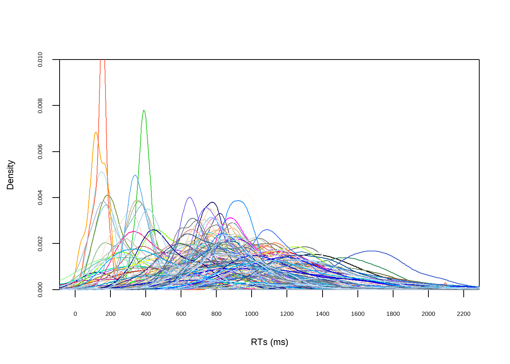
data_testing_rt_means <- aggregate(data_testing$rt, list(data_testing$sbj_ID), FUN=mean, na.rm=TRUE);
summary(data_testing_rt_means$x); # good med & mean Min. 1st Qu. Median Mean 3rd Qu. Max.
158.4 817.0 962.9 968.8 1151.3 2627.1 plot(data_testing_rt_means$x, ylab="Mean participant RT (ms)",xlab="Participants",main="",xaxt = "n",pch=3,yaxs="i",ylim=c(0,2750))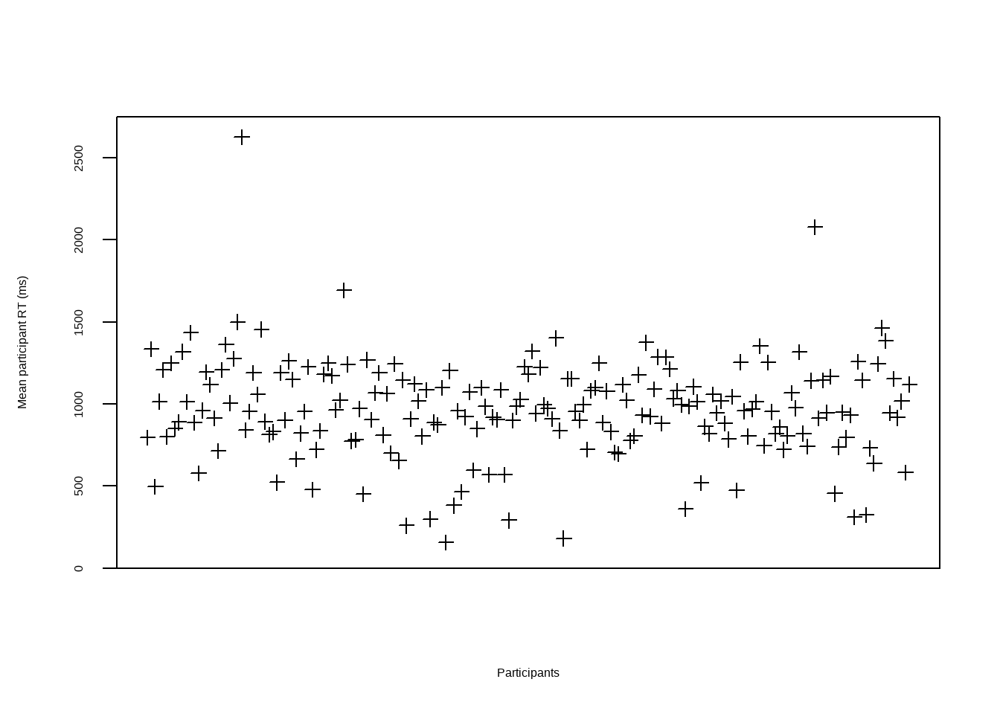
# looks healthy overall
## problematic participant RTs ##
summary(data_testing$rt[data_testing$sbj_ID=="5e8b66490d48450346bf2755"]); Min. 1st Qu. Median Mean 3rd Qu. Max.
587.0 840.5 1059.0 2627.1 1355.0 162188.0 plot(data_testing$rt[data_testing$sbj_ID=="5e8b66490d48450346bf2755"],ylim=c(2000,170000),pch=19);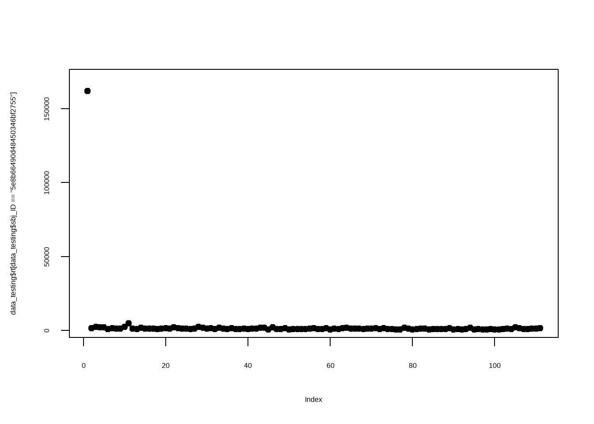
# exclude 5e8b66490d48450346bf2755: mean RT of 2627 slow, lots of slow trials, max of 162188 VERY slow
data_testing <- data_testing[!data_testing$sbj_ID %in% c('5e8b66490d48450346bf2755'),];
data_testing_rt_means <- data_testing_rt_means[!data_testing_rt_means$Group.1 %in% c('5e8b66490d48450346bf2755'),]
# now n=194
summary(data_testing$rt[data_testing$sbj_ID=="615b042301e3a24311563ee4"]); Min. 1st Qu. Median Mean 3rd Qu. Max.
766 1150 1374 2080 1642 64155 plot(data_testing$rt[data_testing$sbj_ID=="615b042301e3a24311563ee4"],ylim=c(2000,170000),pch=19);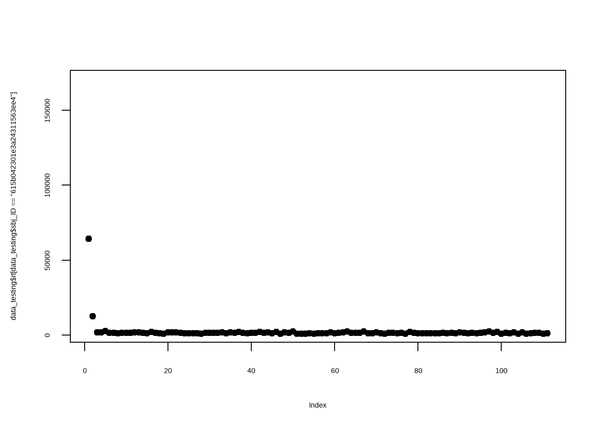
# exclude 615b042301e3a24311563ee4: mean RT of 2080 slow, lots of slow trials, max of 62155 very slow
data_testing <- data_testing[!data_testing$sbj_ID %in% c('615b042301e3a24311563ee4'),];
data_testing_rt_means <- data_testing_rt_means[!data_testing_rt_means$Group.1 %in% c('615b042301e3a24311563ee4'),]
# now n=193
summary(data_testing_rt_means$x); Min. 1st Qu. Median Mean 3rd Qu. Max.
158.4 815.2 961.3 954.5 1147.2 1693.5 # due to technical issue: n(0M)=40, n(1M)=37, n(2M)=34
total_0M <- 40;
total_1M <- 37;
total_2M <- 34;
# yes responses globally
mean_yes <- aggregate(data_testing$observed,by=list(data_testing$sbj_ID), FUN=function(x) sum(x == 'within_lang'));
names(mean_yes) <- c("sbj_ID", "yes");
summary(mean_yes$yes); Min. 1st Qu. Median Mean 3rd Qu. Max.
13.0 55.0 62.0 61.9 69.0 109.0 # no one responding only "yes" or never "yes"data_testing_0M_yes <- aggregate(data_testing$observed[data_testing$testing_condition=='0M'], by=list(data_testing$sbj_ID[data_testing$testing_condition=='0M']), FUN = function(x) sum(x == 'within_lang'));
names(data_testing_0M_yes) <- c("sbj_ID","yes_0M");
data_testing_0M_yes$yes_0M <- data_testing_0M_yes$yes_0M/total_0M*100; #transform into percent
summary(data_testing_0M_yes$yes_0M); Min. 1st Qu. Median Mean 3rd Qu. Max.
12.50 40.00 50.00 49.44 60.00 100.00 t.test(data_testing_0M_yes$yes_0M, mu=50);
One Sample t-test
data: data_testing_0M_yes$yes_0M
t = -0.52971, df = 192, p-value = 0.5969
alternative hypothesis: true mean is not equal to 50
95 percent confidence interval:
47.36902 51.51699
sample estimates:
mean of x
49.44301 # 0M "yes" not sig above chance
data_testing <- merge(data_testing,data_testing_0M_yes,by="sbj_ID");data_testing_1M_yes <- aggregate(data_testing$observed[data_testing$testing_condition=='1M'], by=list(data_testing$sbj_ID[data_testing$testing_condition=='1M']), FUN = function(x) sum(x == 'within_lang'));
names(data_testing_1M_yes) <- c("sbj_ID","yes_1M");
data_testing_1M_yes$yes_1M <- data_testing_1M_yes$yes_1M/total_1M*100; #transform into percent
summary(data_testing_1M_yes$yes_1M); Min. 1st Qu. Median Mean 3rd Qu. Max.
10.81 45.95 56.76 55.01 62.16 100.00 t.test(data_testing_1M_yes$yes_1M, mu=50);
One Sample t-test
data: data_testing_1M_yes$yes_1M
t = 4.94, df = 192, p-value = 1.694e-06
alternative hypothesis: true mean is not equal to 50
95 percent confidence interval:
53.00744 57.00517
sample estimates:
mean of x
55.0063 # sig above chance
data_testing <- merge(data_testing,data_testing_1M_yes,by="sbj_ID");data_testing_2M_yes <- aggregate(data_testing$observed[data_testing$testing_condition=='2M'], by=list(data_testing$sbj_ID[data_testing$testing_condition=='2M']), FUN = function(x) sum(x == 'within_lang'));
names(data_testing_2M_yes) <- c("sbj_ID","yes_2M");
data_testing_2M_yes$yes_2M <- data_testing_2M_yes$yes_2M/total_2M*100; #transform into percent
summary(data_testing_2M_yes$yes_2M); Min. 1st Qu. Median Mean 3rd Qu. Max.
11.76 55.88 64.71 64.02 73.53 100.00 t.test(data_testing_2M_yes$yes_2M, mu=50);
One Sample t-test
data: data_testing_2M_yes$yes_2M
t = 13.543, df = 192, p-value < 2.2e-16
alternative hypothesis: true mean is not equal to 50
95 percent confidence interval:
61.97830 66.06193
sample estimates:
mean of x
64.02012 # sig above chance
data_testing <- merge(data_testing,data_testing_2M_yes,by="sbj_ID");
data_testing_2M_aggr <- data_testing %>%
mutate(correct01 = case_when(correct == TRUE ~ 1,
correct == FALSE ~ 0),
yesno01 = case_when(observed == 'between_lang' ~ 0,
observed == 'within_lang' ~ 1)) %>%
filter(testing_condition == '2M') %>%
group_by(expected, sbj_ID) %>%
dplyr::summarise(meanCorrect = mean(correct01), se = sd(correct01/sqrt(n())),
meanYes = mean(yesno01), se = sd(yesno01/sqrt(n()))) %>%
mutate(meanNo = 1 - meanYes);`summarise()` has grouped output by 'expected'. You can override using the
`.groups` argument.data_testing_2M_aggr <- data_testing_2M_aggr %>%
pivot_longer(
cols = c(meanYes, meanNo),
names_to = "response",
values_to = "meanValue"
);
data_testing_2M_aggr$response <- as.factor(data_testing_2M_aggr$response);
ggplot(data_testing_2M_aggr[ which(data_testing_2M_aggr$response=='meanYes'),], aes(x=expected, y=meanValue, fill=expected)) +
geom_hline(yintercept=0.5, linetype="dashed", color="darkgrey",lwd=1.25) +
geom_violin(alpha=0.75,width=1) +
geom_boxplot(width=0.1,position=position_dodge(width=1)) +
scale_fill_manual(values=c(cols2[100],cols2[200]),
name="Participant response",labels=c("Between-language","Within-language")) +
scale_x_discrete(labels=c('Between-language', 'Within-language')) +
labs(x = "String nature", y = 'Proportion of "within-language" responses') +
theme(panel.grid.major = element_blank(), panel.grid.minor = element_blank(),
panel.background = element_blank(), axis.line = element_line(colour = "black"),
axis.text = element_text(family = "CMU Serif", size = 20, color = "black"),
text=element_text(family="CMU Serif",size=20),
legend.position="none",
legend.background=element_rect(fill=NA));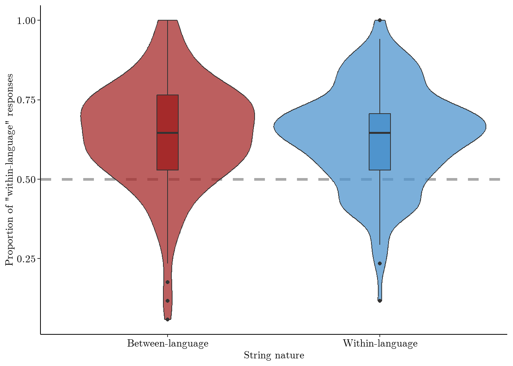
data_testing_2M_means <- aggregate(data_testing$correct[data_testing$testing_condition=='2M'], list(data_testing$sbj_ID[data_testing$testing_condition=='2M']), FUN=mean, na.rm=TRUE);
names(data_testing_2M_means) <- c("sbj_ID","score_2M");
ggplot(data_testing_2M_means, aes(x="", y=score_2M)) +
geom_hline(yintercept=0.5, linetype="dashed", color="darkgrey",lwd=1.25) +
geom_boxplot(fill="grey") +
ylim(0,1) +
labs(y='Participant 2M scores') +
theme(axis.title.x=element_blank(),axis.text.x=element_blank(),
axis.ticks.x=element_blank(),
panel.grid.major = element_blank(), panel.grid.minor = element_blank(),
panel.background = element_blank(), axis.line = element_line(colour = "black"),
axis.text = element_text(family = "CMU Serif", size = 20, color = "black"),
text=element_text(family="CMU Serif",size=20),
legend.position="inside",legend.position.inside = c(0.85,0.09),
legend.background=element_rect(fill=NA));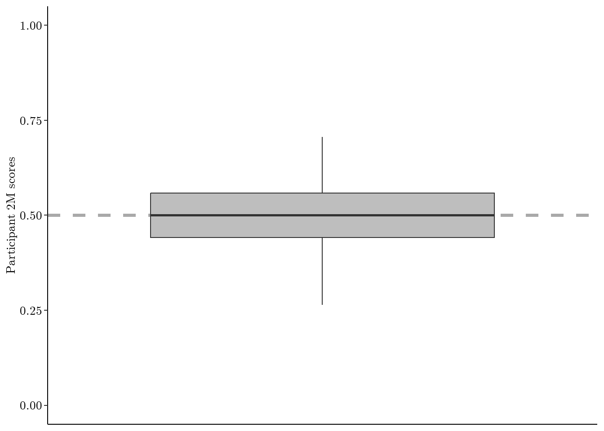
summary(data_testing_2M_means$score_2M); Min. 1st Qu. Median Mean 3rd Qu. Max.
0.2647 0.4412 0.5000 0.4968 0.5588 0.7059 var(data_testing_2M_means$score_2M);[1] 0.004878149plot(data_testing_2M_means$score_2M,pch=3,ylim=c(0,1));
abline(h=0.5, lty=5); # clustered around chance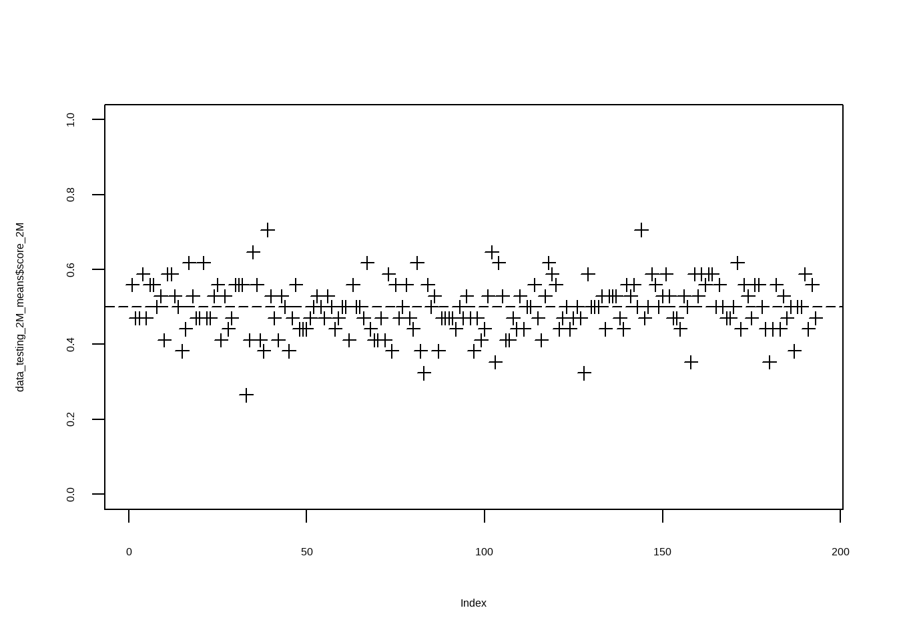
hist(data_testing_2M_means$score_2M); # normally distributed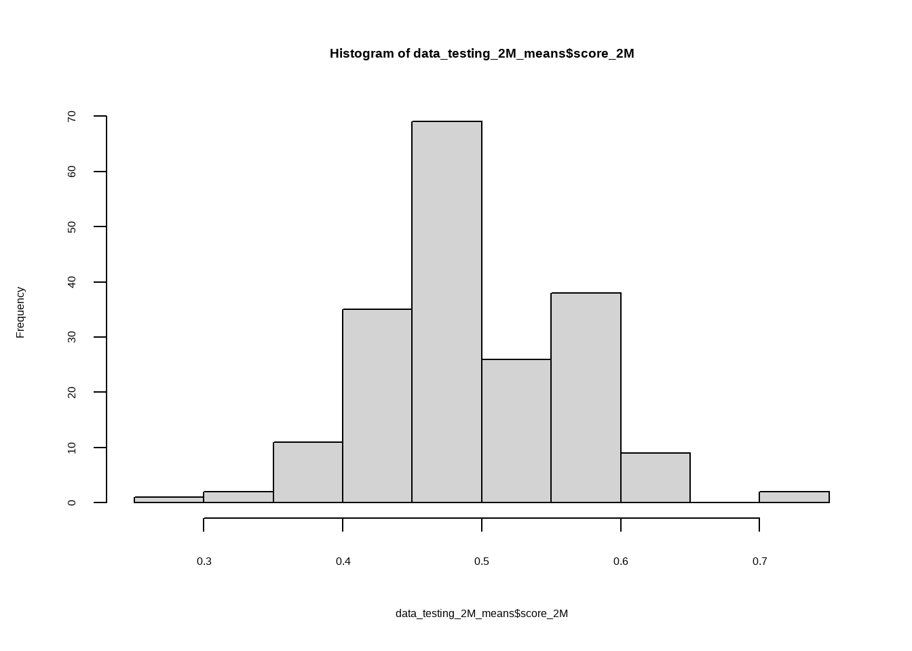
t.test(data_testing_2M_means$score_2M, mu=0.50);
One Sample t-test
data: data_testing_2M_means$score_2M
t = -0.63655, df = 192, p-value = 0.5252
alternative hypothesis: true mean is not equal to 0.5
95 percent confidence interval:
0.4868836 0.5067159
sample estimates:
mean of x
0.4967998 # not sig different from chance
data_testing <- merge(data_testing,data_testing_2M_means,by="sbj_ID");data_testing_2M <- data_testing[data_testing$testing_condition == '2M',];
data_testing_2M$expected_bi[data_testing_2M$expected == "between_lang"] <- 0;
data_testing_2M$expected_bi[data_testing_2M$expected == "within_lang"] <- 1;
data_testing_2M$observed_bi[data_testing_2M$observed == "between_lang"] <- 0;
data_testing_2M$observed_bi[data_testing_2M$observed == "within_lang"] <- 1;
dprimes2M <- dPrime(data_testing_2M$sbj_ID, data_testing_2M$expected_bi, data_testing_2M$observed_bi);
names(dprimes2M) <- c("sbj_ID","dprime","log_beta","c");
summary(dprimes2M); sbj_ID dprime log_beta c
Length:193 Min. :-1.21700 Min. :-0.89300 Min. :-1.9150
Class :character 1st Qu.:-0.28000 1st Qu.:-0.06100 1st Qu.:-0.5910
Mode :character Median : 0.00000 Median : 0.00000 Median :-0.3590
Mean :-0.02117 Mean : 0.03125 Mean :-0.3712
3rd Qu.: 0.28000 3rd Qu.: 0.09800 3rd Qu.:-0.1430
Max. : 1.15500 Max. : 1.24400 Max. : 1.0850 # mean(d') = -0.02, mean(c) = -0.37
data_testing <- merge(data_testing,dprimes2M,by="sbj_ID");
cor.test(dprimes2M$dprime,dprimes2M$c, method="pearson");
Pearson's product-moment correlation
data: dprimes2M$dprime and dprimes2M$c
t = 2.0394, df = 191, p-value = 0.04279
alternative hypothesis: true correlation is not equal to 0
95 percent confidence interval:
0.004842733 0.281420642
sample estimates:
cor
0.145983 # significant positive moderate correlation
# more "YES" responses helps you respond more accurately
testing_short <- data_testing[!duplicated(data_testing$sbj_ID), ];
t.test(testing_short$dprime, mu=0);
One Sample t-test
data: testing_short$dprime
t = -0.75921, df = 192, p-value = 0.4487
alternative hypothesis: true mean is not equal to 0
95 percent confidence interval:
-0.07617207 0.03383010
sample estimates:
mean of x
-0.02117098 # not sig different from chance
t.test(testing_short$c, mu=0);
One Sample t-test
data: testing_short$c
t = -12.394, df = 192, p-value < 2.2e-16
alternative hypothesis: true mean is not equal to 0
95 percent confidence interval:
-0.4303289 -0.3121685
sample estimates:
mean of x
-0.3712487 # sig above chance# evaluating the differences between conditions
data_testing_conditions <- merge(data_testing_0M_yes,data_testing_1M_yes, by='sbj_ID');
data_testing_conditions <- merge(data_testing_conditions,data_testing_2M_yes, by='sbj_ID');
conditions_table <- table(data_testing$testing_condition, data_testing$observed);
chisq.test(conditions_table);
Pearson's Chi-squared test
data: conditions_table
X-squared = 308.03, df = 2, p-value < 2.2e-16data_testing_conditions <- data_testing_conditions %>%
gather(condition, score, -sbj_ID);
data_testing_conditions$score <- data_testing_conditions$score/100;
# plotting all "yes" responses across conditions
ggplot(data_testing_conditions, aes(x = condition, y = score, color = condition)) +
geom_hline(yintercept=0.5, linetype="dashed",
color = "darkgray",lwd=1.25) +
geom_jitter(width = 0.1, height = 0, alpha = 0.3,color= "black",size=2) +
labs(x = "Condition", y = 'Proportion of "yes" responses') +
theme(panel.grid.major = element_blank(), panel.grid.minor = element_blank(),
panel.background = element_blank(), axis.line = element_line(colour = "black"),
axis.text = element_text(family = "CMU Serif", size = 20, color = "black"),
text=element_text(family="CMU Serif",size=20)) +
ylim(0,1.01) +
stat_summary(geom = "point",fun = "mean",col = "red",size = 4,shape = 19) +
stat_summary(geom = "errorbar", fun.data = "mean_se", width = 0.1,col="red",position = position_dodge(width = 0.5)) +
scale_x_discrete(labels=c("0M", "1M", "2M"));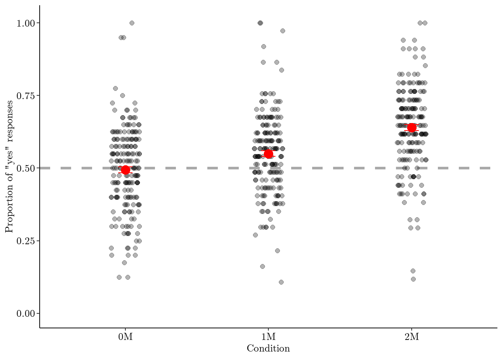
# 2M accuracy*RTs
cor.test(data_testing_2M_means$score_2M, data_testing_rt_means$x, method="pearson");
Pearson's product-moment correlation
data: data_testing_2M_means$score_2M and data_testing_rt_means$x
t = 0.55302, df = 191, p-value = 0.5809
alternative hypothesis: true correlation is not equal to 0
95 percent confidence interval:
-0.1018322 0.1802054
sample estimates:
cor
0.03998297 # non-significant correlationstrats <- subset(data_testing, select = c(sbj_ID, strategy));
strats <- strats[!duplicated(strats),];
write.csv(strats,"BASL_exp1_strats.csv", row.names = FALSE);chunkID_strategists <- list('5caccaed2f93d700157b4782','5e577e79ce30ae13226e61ae','5e8c57d9b4483e012006e7aa','5eaae42f19a24d05cbd6ccb4','5ecbb4c00bc62403dae2df59','5ee942381a22491bbb7170f8','5f18a80367ef6b0bbc5f3720','5f5a713d37f71112463ab4d9','5fc2d2d79da439201ab6addc','600f0f9c3bfcdc077c924e51','60123adc24c9f126819861b6','601705a0246e51313e8ed38e','601ffb441dc6d959b855eea5','60491025dd8eb31e48a0ca8d','60664619eac28843177fee96','60db4aed5dd7b87124f51341','60f6b8f8e574e14634ead43e','60fd0f49858465796afd5da9','6144742e57a61e489cc9e978','61520b079436973e05f72d33','615b1ab789b14c9996251fb4','615da9ee365ab7d547b98979','616891e25a026e1f7262116c','63ee5d8aaee278de46b7d4cc','6455490f7c5f35e4221a810a');
data_chunkIDstrategists <- data_testing[data_testing$sbj_ID %in% chunkID_strategists,];
data_chunkIDstrategists <- data_chunkIDstrategists[data_chunkIDstrategists$testing_condition=='2M',];
data_chunkIDstrategists <- data_chunkIDstrategists[!duplicated(data_chunkIDstrategists$sbj_ID), ];
data_chunkIDstrategists$strat <- "chunkID";
summary(data_chunkIDstrategists$score_2M); Min. 1st Qu. Median Mean 3rd Qu. Max.
0.3235 0.4706 0.5000 0.5165 0.5588 0.7059 t.test(data_chunkIDstrategists$score_2M, mu=0.50);
One Sample t-test
data: data_chunkIDstrategists$score_2M
t = 1.0108, df = 24, p-value = 0.3222
alternative hypothesis: true mean is not equal to 0.5
95 percent confidence interval:
0.4828402 0.5501009
sample estimates:
mean of x
0.5164706 # not sig different from chance
summary(data_chunkIDstrategists$dprime); Min. 1st Qu. Median Mean 3rd Qu. Max.
-1.0160 -0.1390 0.0000 0.0968 0.4110 1.1550 summary(data_chunkIDstrategists$c); Min. 1st Qu. Median Mean 3rd Qu. Max.
-0.8800 -0.5360 -0.4320 -0.3387 -0.0730 0.5360 # dprime:0.10 c:-0.34
t.test(data_chunkIDstrategists$dprime, mu=0);
One Sample t-test
data: data_chunkIDstrategists$dprime
t = 1.0684, df = 24, p-value = 0.2959
alternative hypothesis: true mean is not equal to 0
95 percent confidence interval:
-0.09018659 0.28378659
sample estimates:
mean of x
0.0968 # not sig different from chance
t.test(data_chunkIDstrategists$c, mu=0);
One Sample t-test
data: data_chunkIDstrategists$c
t = -4.4965, df = 24, p-value = 0.0001494
alternative hypothesis: true mean is not equal to 0
95 percent confidence interval:
-0.4941917 -0.1832483
sample estimates:
mean of x
-0.33872 # sig above chance
ggplot(data_chunkIDstrategists, aes(x="", y=score_2M)) +
geom_hline(yintercept=0.5, linetype="dashed", color="darkgrey",lwd=1.25) +
geom_violin(alpha=0.75,fill="gold1") +
geom_boxplot(width=0.1,fill="gold1") +
ylim(0,1) +
labs(y='Participant 2M scores') +
theme(axis.title.x=element_blank(),axis.text.x=element_blank(),
axis.ticks.x=element_blank(),
panel.grid.major = element_blank(), panel.grid.minor = element_blank(),
panel.background = element_blank(), axis.line = element_line(colour = "black"),
axis.text = element_text(family = "CMU Serif", size = 20, color = "black"),
text=element_text(family="CMU Serif",size=20),
legend.position="inside",legend.position.inside = c(0.85,0.09),
legend.background=element_rect(fill=NA));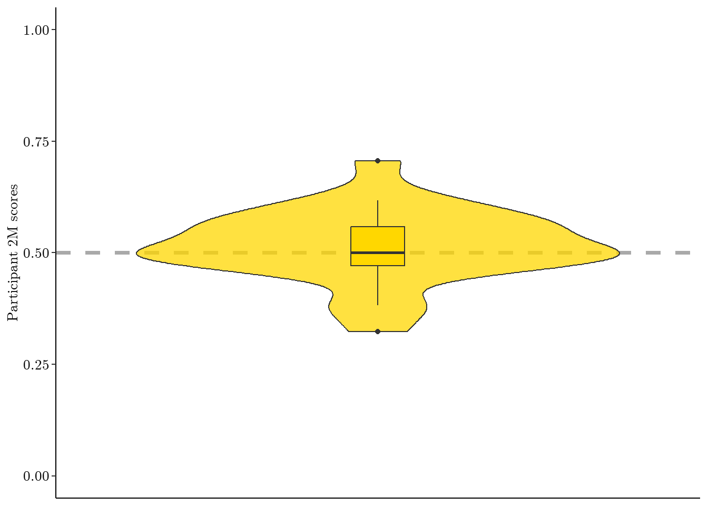
intuition_strategists <- list('5aa787c66219a30001c765f8','5ae5db897edeb000014a85ee','5b213220809d160001a2c36d','5bcd11401662020001fe82c1','5c1bfabab0fcc900019d9ff4','5dab6e7d80e1780016d5bc9b','5dcb33ab0550ef819f508abf','5e12048c7605fe8839180a14','5e3ff59bf2160b23942ada93','5e89e89bf025be000c01eead','5e8e55509422bb10abed1f54','5e9bd025eb6b380e1d66d04c','5ea9611edec14d052ada0bae','5ea9cd383b32cf15448a86ac','5eaf1c50f3540c614eb973a5','5eb35dff41a381156be161c2','5ec6d06c67b0da0fb6f85e83','5ecd21dec04cca02c9032485','5ed013f88fce6e0d858b732e','5ee623674afa60375e30eec3','5ee83da8817af0000d47448f','5f0471a92ec97b6d1aec7739','5f0d65ef2ad0c60009209f0f','5f11c9f84078cd0888177499','5f18a80367ef6b0bbc5f3720','5f19fa0f3e85b20d0336258c','5f1e8dc7e2161c86cdcd220a','5f219602670e5a0af2cf5237','5f47e34858dd331165bf9f00','5f5e7de4c81d3672642cd612','5f708f5f0d32bb66960d4473','5f858743256d25036d9fa693','5f91dc284909fe0b08f9e2e1','5fa5793490f10705755818c0','5fa59d4d5a29c90da975efe9','5fc44d83862e3e79b02e0438','5fc781689771f106330abf6a','5fd2416e5061f30735e202e9','5fd9c5c67fa7c74ec42bb318','5fe2308a91773957e88b89be','600e0dadada7da69afc5b3de','6042a56575ab0c1ccffc3152','605aa0bb5fb71bbcf0808892','60645fe61129208791535d15','606dc21c1ce7dc64af9d81fb','608858869a591bd129fbbc6c','60957b300f08087b0af0031c','60a3fe2d888e7a090d6d8f82','60a68725b2b424dc0d7ce793','60bbe0da43325dadf2b1b6a9','60d7605d7af8d66774061717','60dee3200c7c3355c62326d9','60ec51c51a3158a50ded8a3e','60f030dca19a06db1b50d16a','6100174f92a7a0e5141b195e','61001b6892ebd05a24fe82e1','610f2eabb45be8717fc155e0','61125e23136464bd2cbbefc9','611bdb0fed7c9df6dce28c3f','611cebb780fbae98c5bcc84d','611e9c16e90a0d4c6f0d8df5','611eeafa283a2d1f57537fea','6131f7010e926c9103558040','613867f34e206e4f573bc6ef','613a73d06cf1fcfef304d3fa','6140ff9c5750f0081ca8d71f','614c80483d06dcf7ad552679','614c8e5469405530dc27b9d5','614dd6473c74b217ad73cc9c','6155e204cc071b306458dfff','6156a440279fdf408ee663ae','6156b68cc77b48d6693b361c','61616ce2bb94584e11c911af','6170821d1e8ffb9c893b28a4','6171349b89a54d4823f9eca1','617142c2a843eef6f8f148b6','6171d922c871ba795b6a4827','6172078b966225960be2a7b5','65032a60861e9a17bc1a7444','65089e7ce53888b0b3840c62');
data_intuitionstrategists <- data_testing[data_testing$sbj_ID %in% intuition_strategists,];
data_intuitionstrategists <- data_intuitionstrategists[data_intuitionstrategists$testing_condition=='2M',];
data_intuitionstrategists <- data_intuitionstrategists[!duplicated(data_intuitionstrategists$sbj_ID), ];
data_intuitionstrategists$strat <- "intuition";
summary(data_intuitionstrategists$score_2M); Min. 1st Qu. Median Mean 3rd Qu. Max.
0.2647 0.4632 0.5000 0.4926 0.5588 0.6176 t.test(data_intuitionstrategists$score_2M, mu=0.50);
One Sample t-test
data: data_intuitionstrategists$score_2M
t = -0.93794, df = 79, p-value = 0.3511
alternative hypothesis: true mean is not equal to 0.5
95 percent confidence interval:
0.4770430 0.5082511
sample estimates:
mean of x
0.4926471 # not sig different from chance
summary(data_intuitionstrategists$dprime); Min. 1st Qu. Median Mean 3rd Qu. Max.
-1.21700 -0.19450 0.00000 -0.04046 0.28150 0.70900 summary(data_intuitionstrategists$c); Min. 1st Qu. Median Mean 3rd Qu. Max.
-1.5000 -0.5202 -0.3220 -0.3101 -0.1232 1.0290 # dprime:-0.04 c:-0.31
t.test(data_intuitionstrategists$dprime, mu=0);
One Sample t-test
data: data_intuitionstrategists$dprime
t = -0.93426, df = 79, p-value = 0.353
alternative hypothesis: true mean is not equal to 0
95 percent confidence interval:
-0.12666835 0.04574335
sample estimates:
mean of x
-0.0404625 # not sig different from chance
t.test(data_intuitionstrategists$c, mu=0);
One Sample t-test
data: data_intuitionstrategists$c
t = -7.6064, df = 79, p-value = 5.075e-11
alternative hypothesis: true mean is not equal to 0
95 percent confidence interval:
-0.3912948 -0.2289802
sample estimates:
mean of x
-0.3101375 # sig above chance
ggplot(data_intuitionstrategists, aes(x="", y=score_2M)) +
geom_hline(yintercept=0.5, linetype="dashed", color="darkgrey",lwd=1.25) +
geom_violin(alpha=0.75,fill="palevioletred") +
geom_boxplot(width=0.1,fill="palevioletred") +
ylim(0,1) +
labs(y='Participant 2M scores') +
theme(axis.title.x=element_blank(),axis.text.x=element_blank(),
axis.ticks.x=element_blank(),
panel.grid.major = element_blank(), panel.grid.minor = element_blank(),
panel.background = element_blank(), axis.line = element_line(colour = "black"),
axis.text = element_text(family = "CMU Serif", size = 20, color = "black"),
text=element_text(family="CMU Serif",size=20),
legend.position="inside",legend.position.inside = c(0.85,0.09),
legend.background=element_rect(fill=NA));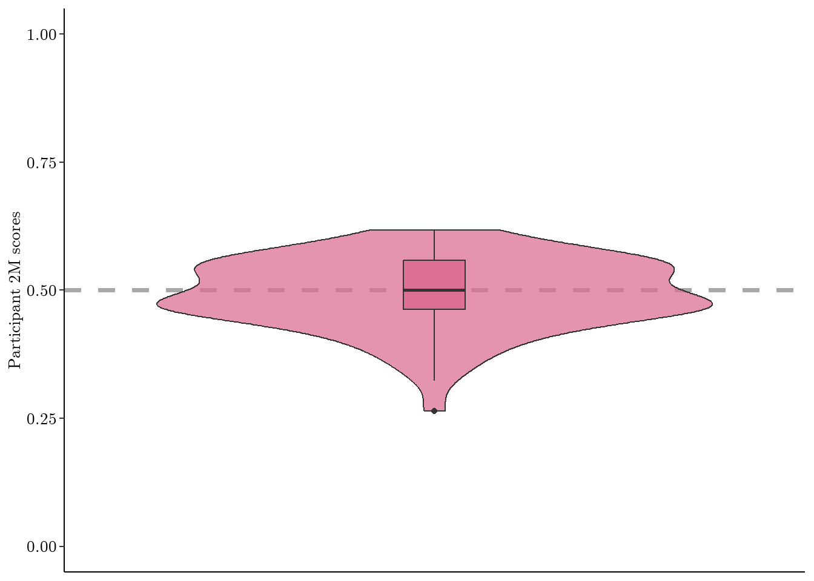
scores_strategies <- rbind(data_chunkIDstrategists,data_intuitionstrategists);
ggplot(scores_strategies, aes(x=strat, y=score_2M, fill=strat)) +
geom_hline(yintercept=0.5, linetype="dashed", color="darkgrey",lwd=1.25) +
geom_violin(alpha=0.75,width=1) +
geom_boxplot(width=0.1,position=position_dodge(width=1)) +
ylim(0,1) +
scale_fill_manual(values=c("gold1","palevioletred")) +
scale_x_discrete(labels=c('Chunk ID', 'Intuition')) +
labs(x="Strategy used",y="Participant 2M scores") +
theme(panel.grid.major = element_blank(), panel.grid.minor = element_blank(),
panel.background = element_blank(), axis.line = element_line(colour = "black"),
axis.text = element_text(family = "CMU Serif", size = 20, color = "black"),
text=element_text(family="CMU Serif",size=20),
legend.position="none",legend.background=element_rect(fill=NA));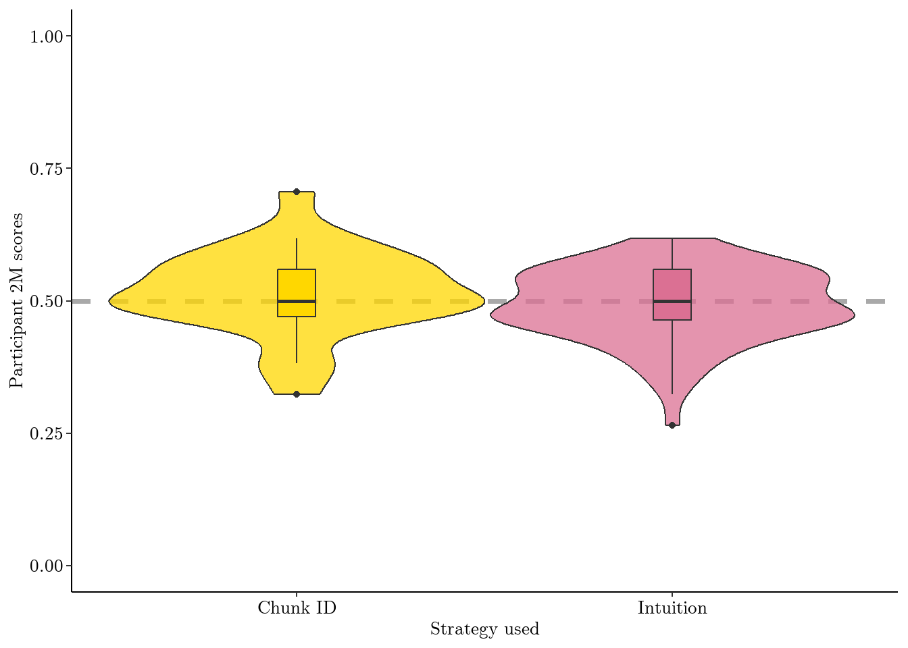
data_all_familiarity <- read.csv("exp1_familiarity_preprocessed.csv",header=T,sep=",");
data_all_familiarity <- subset(data_all_familiarity, select = -c(X)) # remove redundant column added by Pavlovia
data_familiarity <- data_all_familiarity[data_all_familiarity$sbj_ID %in% participants,]; # n = 187 participants
data_familiarity <- data_familiarity[!data_familiarity$sbj_ID %in% c('615b042301e3a24311563ee4','5e8b66490d48450346bf2755','615b41767003d4ece749ed9d'),];
# make some variables factors
data_familiarity$sbj_ID <- as.factor(data_familiarity$sbj_ID);
data_familiarity$task <- as.factor(data_familiarity$task);
data_familiarity$correct <- as.logical(data_familiarity$correct);
data_familiarity$target <- as.factor(data_familiarity$target);
data_familiarity$confound <- as.factor(data_familiarity$confound);data_familiarity_means <- aggregate(data_familiarity$correct, list(data_familiarity$sbj_ID), FUN=mean);
colnames(data_familiarity_means)[colnames(data_familiarity_means)=="Group.1"]="sbj_ID";
colnames(data_familiarity_means)[colnames(data_familiarity_means)=="x"]="fam_mean";
summary(data_familiarity_means$fam_mean); Min. 1st Qu. Median Mean 3rd Qu. Max.
0.2857 0.5000 0.5714 0.5669 0.6429 0.8571 hist(data_familiarity_means$fam_mean); # mostly normally distributed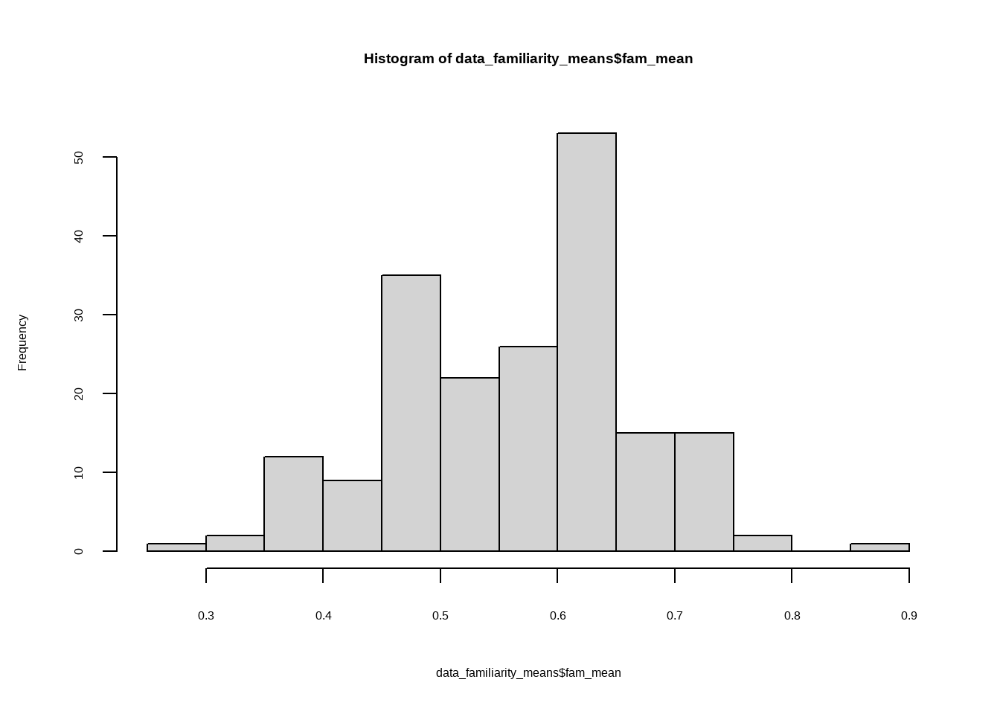
t.test(data_familiarity_means$fam_mean, mu=0.50);
One Sample t-test
data: data_familiarity_means$fam_mean
t = 9.1585, df = 192, p-value < 2.2e-16
alternative hypothesis: true mean is not equal to 0.5
95 percent confidence interval:
0.5524909 0.5813057
sample estimates:
mean of x
0.5668983 # sig above chance
var(data_familiarity_means$fam_mean);[1] 0.01029768data_familiarity <- merge(data_familiarity,data_familiarity_means,by="sbj_ID");
# familiarity accuracy violin plot
ggplot(data_familiarity_means, aes(y=fam_mean, x=x)) +
geom_hline(yintercept=0.5, linetype="dashed",
color = "darkgray",lwd=1.25) +
geom_violin(alpha=0.75,fill="orchid4") +
geom_boxplot(width=0.1,fill="orchid4") +
ylim(0,1) +
scale_fill_manual(values=cols2[350]) +
labs(y = 'Proportion of correct familiarity responses') +
theme(panel.grid.major = element_blank(), panel.grid.minor = element_blank(),
panel.background = element_blank(), axis.line = element_line(colour = "black"),
axis.text = element_text(family = "CMU Serif", size = 20, color = "black"),
text=element_text(family="CMU Serif",size=20),legend.position = "none",
axis.title.x=element_blank(),axis.text.x=element_blank(),
axis.ticks.x=element_blank());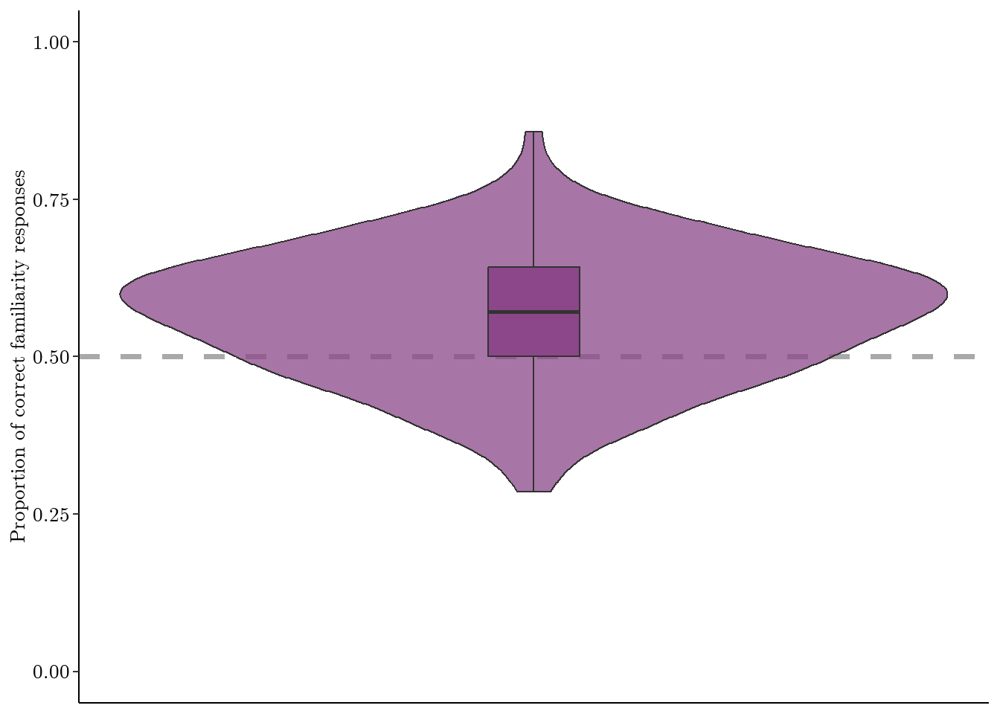
IDs <- list(data_familiarity$sbj_ID);
IDs <- sapply(IDs, unique);
plot(density(data_familiarity$rt[data_familiarity$sbj_ID==IDs[1]]),xlim=c(0,4000),ylim=c(0,0.01),xlab="Familiarity RTs (ms)",main="",xaxt = "n",col=cols2[1],lwd=2,yaxs="i");
axis(1, at = c(0,500,1000,1500,2000,2500,3000,3500,4000));
for (x in 2:193) {
lines(density(data_familiarity$rt[data_familiarity$sbj_ID==IDs[x]]),col=cols2[x],lwd=2)
};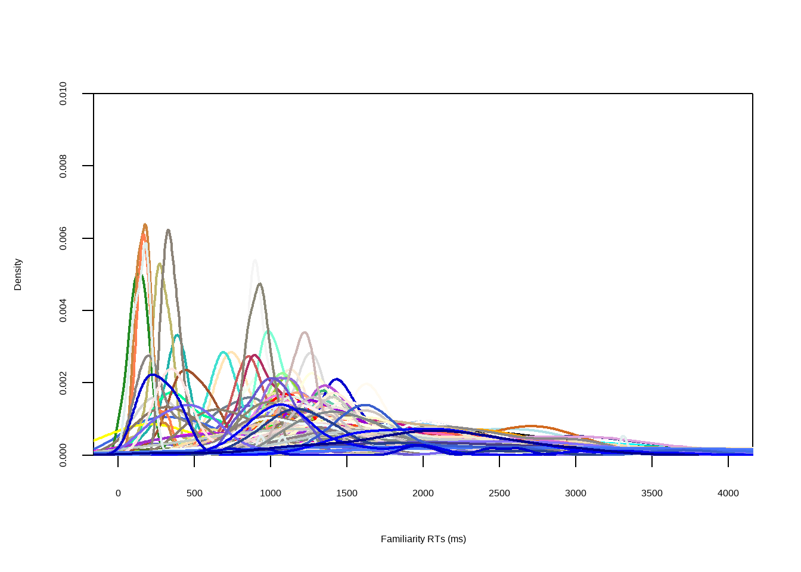
data_familiarity_rt_means <- aggregate(data_familiarity$rt, list(data_familiarity$sbj_ID), FUN=mean, na.rm=TRUE);
summary(data_familiarity_rt_means$x); Min. 1st Qu. Median Mean 3rd Qu. Max.
222.8 1275.0 1670.5 1891.7 2139.6 9184.9 # familiarity accuracy*RTs
cor.test(data_familiarity_means$fam_mean, data_familiarity_rt_means$x, method="pearson")
Pearson's product-moment correlation
data: data_familiarity_means$fam_mean and data_familiarity_rt_means$x
t = 2.8174, df = 191, p-value = 0.00535
alternative hypothesis: true correlation is not equal to 0
95 percent confidence interval:
0.06021188 0.33163686
sample estimates:
cor
0.1997533 # slower at responding = better accuracy# familiarity accuracy*testing accuracy
cor.test(data_familiarity_means$fam_mean, data_testing_2M_means$score_2M, method="pearson");
Pearson's product-moment correlation
data: data_familiarity_means$fam_mean and data_testing_2M_means$score_2M
t = 1.5112, df = 191, p-value = 0.1324
alternative hypothesis: true correlation is not equal to 0
95 percent confidence interval:
-0.03304948 0.24615903
sample estimates:
cor
0.1086981 # higher familiarity = better 2M scores
# familiarity accuracy by testing strategy
data_strategistsfam <- data_familiarity_means;
data_strategistsfam$strat[data_strategistsfam$sbj_ID %in% intuition_strategists] <- 'intuition';
data_strategistsfam$strat[data_strategistsfam$sbj_ID %in% chunkID_strategists] <- 'chunks';
data_strategistsfam$strat[data_strategistsfam$sbj_ID %in% chunkID_strategists] <- 'chunks';
data_strategistsfam$strat <- data_strategistsfam$strat %>% replace_na('other');
summary(data_strategistsfam$fam_mean[data_strategistsfam$strat=='chunks']); Min. 1st Qu. Median Mean 3rd Qu. Max.
0.4643 0.5357 0.5714 0.5786 0.6071 0.7500 t.test(data_strategistsfam$fam_mean[data_strategistsfam$strat=='chunks'],mu=0.50);
One Sample t-test
data: data_strategistsfam$fam_mean[data_strategistsfam$strat == "chunks"]
t = 5.2341, df = 24, p-value = 2.3e-05
alternative hypothesis: true mean is not equal to 0.5
95 percent confidence interval:
0.5475896 0.6095533
sample estimates:
mean of x
0.5785714 # significantly above chance
summary(data_strategistsfam$fam_mean[data_strategistsfam$strat=='intuition']); Min. 1st Qu. Median Mean 3rd Qu. Max.
0.2857 0.5000 0.5714 0.5495 0.6429 0.7857 t.test(data_strategistsfam$fam_mean[data_strategistsfam$strat=='intuition'],mu=0.50);
One Sample t-test
data: data_strategistsfam$fam_mean[data_strategistsfam$strat == "intuition"]
t = 4.0742, df = 78, p-value = 0.0001101
alternative hypothesis: true mean is not equal to 0.5
95 percent confidence interval:
0.5253176 0.5737046
sample estimates:
mean of x
0.5495111 # significantly above chance
par(mar=c(5,5,2,2));
boxplot(data_strategistsfam$fam_mean~data_strategistsfam$strat,ylab = "Familiarity score",xlab="Testing strategy",ylim=c(0.28,0.9),cex.lab=2,cex.axis=1.75,yaxs="i");
abline(h=0.5, lty=5);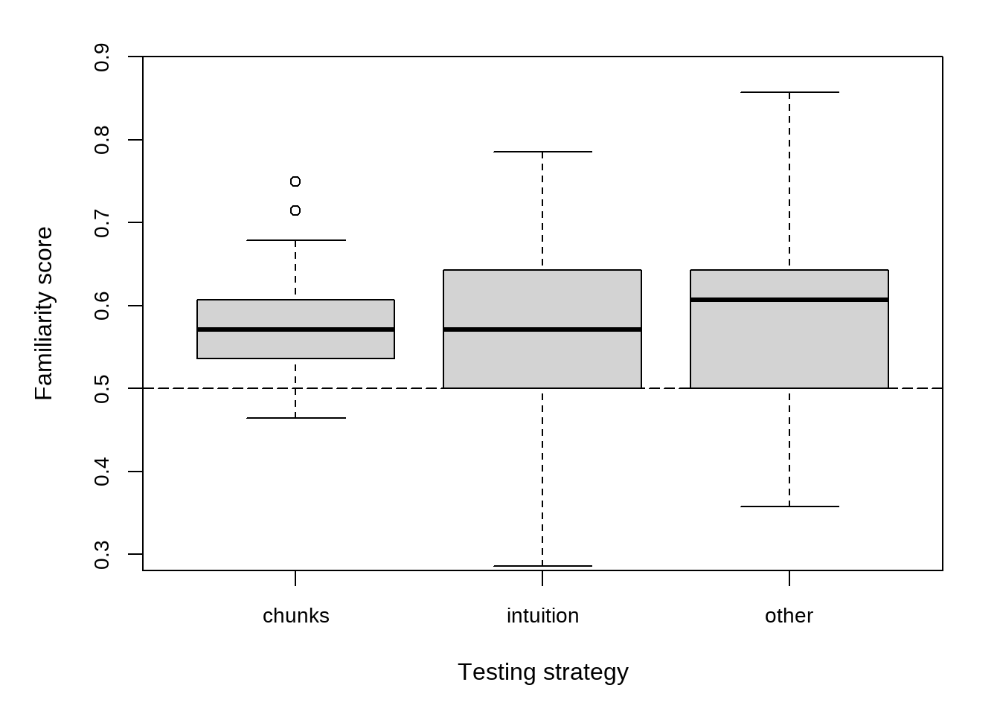
par(mar=c(5, 4, 4, 2) + 0.1); # back to defaultdata_all_BLP <- read.csv("exp1_BLP_preprocessed.csv",header=T,sep=",");
data_all_BLP <- subset(data_all_BLP, select = -c(X)); # remove redundant column added by Pavlovia
data_BLP <- data_all_BLP[data_all_BLP$sbj_ID %in% participants,]; # n = 190 participants
data_BLP <- subset(data_BLP, select = -c(AoAgioL1, AoAgioL2, AoAgioL3, AoAgioL4, anniInstrL1, anniInstrL2, anniInstrL3, anniInstrL4, anniPaeseL1, anniPaeseL2, anniPaeseL3, anniPaeseL4, anniFamigliaL1, anniFamigliaL2, anniFamigliaL3, anniFamigliaL4, anniLavoroL1, anniLavoroL2, anniLavoroL3, anniLavoroL4, PercAmiciL1, PercAmiciL2, PercAmiciL3, PercAmiciL4, PercFamigliaL1, PercFamigliaL2, PercFamigliaL3, PercFamigliaL4, PercLavoroL1, PercLavoroL2, PercLavoroL3, PercLavoroL4, PercStessoL1, PercStessoL2, PercStessoL3, PercStessoL4, PercCalcoliL1, PercCalcoliL2, PercCalcoliL3, PercCalcoliL4, ProfParlaL1, ProfParlaL2, ProfParlaL3, ProfParlaL4, ProfCapisceL1, ProfCapisceL2, ProfCapisceL3, ProfCapisceL4, ProfLeggeL1, ProfLeggeL2, ProfLeggeL3, ProfLeggeL4, ProfScriveL1, ProfScriveL2, ProfScriveL3, ProfScriveL4, AttMiStessoL1, AttMiStessoL2, AttMiStessoL3, AttMiStessoL4, AttCulturaL1, AttCulturaL2, AttCulturaL3, AttCulturaL4, AttLivNativoL1, AttLivNativoL2, AttLivNativoL3, AttLivNativoL4, AttMadrelinguaL1, AttMadrelinguaL2, AttMadrelinguaL3, AttMadrelinguaL4));
data_BLP <- data_BLP[!data_BLP$sbj_ID %in% c('615b042301e3a24311563ee4','5e8b66490d48450346bf2755','615b41767003d4ece749ed9d'),];
BLP_correction <- function(data_BLP)
{
data_BLP[data_BLP == "polish"|data_BLP == "POLISH"] <- "Polish";
data_BLP[data_BLP == "english"|data_BLP=="ENGLISH"|data_BLP=="Englsih"|data_BLP=="Englsh"|data_BLP=="British"|data_BLP=="Engllish"|data_BLP=="ENGLISH "|data_BLP=="English "|data_BLP=="ENGLISH"|data_BLP=="english"|data_BLP=="english "|data_BLP=="englis"|data_BLP=="eanglish"|data_BLP=="Enlish"] <- "English";
data_BLP[data_BLP == "portuguese"|data_BLP == "portuguese"|data_BLP == "Portugal"|data_BLP=="Potuguese"] <- "Portuguese";
data_BLP[data_BLP =="SPANISH"|data_BLP=="Spnsh"|data_BLP=="spanish"] <- "Spanish";
data_BLP[data_BLP == "ITALIAN"|data_BLP=="italian"] <- "Italian";
data_BLP[data_BLP == "sotho"] <- "Sotho";
data_BLP[data_BLP == "greek"|data_BLP=="Greece"] <- "Greek";
data_BLP[data_BLP == "tshivenda"] <- "Tshivenda";
data_BLP[data_BLP == "Gujrau"] <- "Gujarati"; # to check
data_BLP[data_BLP == "ukrainian"|data_BLP=="ukranian"] <- "Ukrainian";
data_BLP[data_BLP == "SETSWANA"] <- "Setswana";
data_BLP[data_BLP == "afrikaans"] <- "Afrikaans";
data_BLP[data_BLP == "punjabi"] <- "Punjabi";
data_BLP[data_BLP == "siswati"] <- "Siswati";
data_BLP[data_BLP == "Germany"|data_BLP=="german"|data_BLP=="germany"|data_BLP=="GERMANY"|data_BLP=="GERMAN"|data_BLP=="Deustch"|data_BLP == "Deutch"] <- "German";
data_BLP[data_BLP == "russian"] <- "Russian";
data_BLP[data_BLP == "Isiulu"] <- "IsiZulu";
data_BLP[data_BLP == "ZULU"|data_BLP=="zulu"] <- "Zulu";
data_BLP[data_BLP == "northern sotho"] <- "Northern Sotho";
data_BLP[data_BLP == "chinese"] <- "Chinese";
data_BLP[data_BLP == "sesotho"|data_BLP=="SESOTHO"] <- "Sesotho";
data_BLP[data_BLP == "sepedi"] <- "Sepedi";
data_BLP[data_BLP == "TSHIVENDA"] <- "Tshivenda";
data_BLP[data_BLP == "arabic"] <- "Arabic";
data_BLP[data_BLP == "XHOSA"|data_BLP=="xhosa"] <- "Xhosa";
data_BLP[data_BLP == "french"|data_BLP=="fRANCH"] <- "French";
data_BLP[data_BLP == "hungarian"] <- "Hungarian";
data_BLP[data_BLP == "POLISH"] <- "Polish";
data_BLP[data_BLP == "croatian"] <- "Croatian";
data_BLP[data_BLP == "bosnian"] <- "Bosnian";
data_BLP[data_BLP == "madarin"] <- "Mandarin";
data_BLP[data_BLP == "Icelandic and German"] <- "Icelandic";
data_BLP[data_BLP == "a little bit of russian"|data_BLP=="RUSSIAN"|data_BLP=="russian"] <- "Russian";
data_BLP[data_BLP == "NDEBELE"] <- "Ndebele";
data_BLP[data_BLP == "urdu"] <- "Urdu";
data_BLP[data_BLP == "latvian"] <- "Latvian";
data_BLP[data_BLP == "Malayam"] <- "Malayan";
data_BLP[data_BLP == "swahili"] <- "Swahili";
data_BLP[data_BLP == "serbian"] <- "Serbian";
data_BLP[data_BLP == "SEPEDI"|data_BLP=="sepedit"] <- "Sepedi";
data_BLP[data_BLP == "japanese"] <- "Japanese";
data_BLP[data_BLP == "TSWANA"|data_BLP=="tswana"] <- "Tswana";
data_BLP[data_BLP == "SHONA"] <- "Shona";
data_BLP[data_BLP == "sweedish"] <- "Swedish";
data_BLP[data_BLP == "XItsonga"] <- "Xitsonga";
data_BLP[data_BLP == "N/A"|data_BLP=="---"] <- "n/a";
data_BLP["L1"][is.na(data_BLP["L1"])] <- "n/a";
data_BLP["L2"][is.na(data_BLP["L2"])] <- "n/a";
data_BLP["L3"][is.na(data_BLP["L3"])] <- "n/a";
data_BLP["L4"][is.na(data_BLP["L4"])] <- "n/a";
# correcting some participants' demographic information - correction based off of Prolific's information
data_BLP["Age"][data_BLP["sbj_ID"] == "5aa787c66219a30001c765f8"] <- "24";
data_BLP["Age"][data_BLP["sbj_ID"] == "5e577e79ce30ae13226e61ae"] <- "24";
data_BLP["Age"][data_BLP["sbj_ID"] == "5e8c57d9b4483e012006e7aa"] <- "22";
data_BLP["Age"][data_BLP["sbj_ID"] == "5ecbb4c00bc62403dae2df59"] <- "22";
data_BLP["Age"][data_BLP["sbj_ID"] == "5ee942381a22491bbb7170f8"] <- "22";
data_BLP["Age"][data_BLP["sbj_ID"] == "5f219602670e5a0af2cf5237"] <- "22";
data_BLP["Age"][data_BLP["sbj_ID"] == "5f47e34858dd331165bf9f00"] <- "21";
data_BLP["Age"][data_BLP["sbj_ID"] == "5f99cee5a2a7d109a1624e10"] <- "22";
data_BLP["Age"][data_BLP["sbj_ID"] == "5fa4725a186c050edc3bcc20"] <- "23";
data_BLP["Age"][data_BLP["sbj_ID"] == "5fc2d2d79da439201ab6addc"] <- "24";
data_BLP["Age"][data_BLP["sbj_ID"] == "5fc44d83862e3e79b02e0438"] <- "24";
data_BLP["Age"][data_BLP["sbj_ID"] == "5fd9c5c67fa7c74ec42bb318"] <- "22";
data_BLP["Age"][data_BLP["sbj_ID"] == "6065d7d47409810344f7e6bb"] <- "24";
data_BLP["Age"][data_BLP["sbj_ID"] == "60883a7e91c0be66dbb96fc8"] <- "23";
data_BLP["Age"][data_BLP["sbj_ID"] == "608c2e566d92c2aa3543e2d2"] <- "22";
data_BLP["Age"][data_BLP["sbj_ID"] == "60e3b18d3d4205b4c52ada56"] <- "24";
data_BLP["Age"][data_BLP["sbj_ID"] == "611eafa6011b0423f7d7230f"] <- "20";
data_BLP["Age"][data_BLP["sbj_ID"] == "612a98181f4b6d1cf01f926c"] <- "21";
data_BLP["Age"][data_BLP["sbj_ID"] == "61301fcb49db2f170cb02b93"] <- "25";
data_BLP["Age"][data_BLP["sbj_ID"] == "6156b68cc77b48d6693b361c"] <- "21";
data_BLP["Age"][data_BLP["sbj_ID"] == "616891e25a026e1f7262116c"] <- "22";
data_BLP["Age"][data_BLP["sbj_ID"] == "6171d922c871ba795b6a4827"] <- "23";
data_BLP["Gender"][data_BLP["sbj_ID"] == "5aa787c66219a30001c765f8"] <- "Man";
data_BLP["Gender"][data_BLP["sbj_ID"] == "5bcd11401662020001fe82c1"] <- "Man";
data_BLP["Gender"][data_BLP["sbj_ID"] == "5e3ff59bf2160b23942ada93"] <- "Man";
data_BLP["Gender"][data_BLP["sbj_ID"] == "5f5a713d37f71112463ab4d9"] <- "Woman";
data_BLP["Gender"][data_BLP["sbj_ID"] == "60e9ea97d19e613e60a994da"] <- "Man";
data_BLP["Gender"][data_BLP["sbj_ID"] == "616eb493bb7e4ab4fa1de8d4"] <- "Woman";
return (data_BLP)
};
data_BLP <- BLP_correction(data_BLP);
# make some variables factors
data_BLP$task <- as.factor(data_BLP$task)
data_BLP$sbj_ID <- as.factor(data_BLP$sbj_ID);
data_BLP$Age <- as.numeric(data_BLP$Age);
data_BLP$Gender <- as.factor(data_BLP$Gender);
data_BLP$Education <- as.factor(data_BLP$Education);
data_BLP$L1 <- as.factor(data_BLP$L1);
data_BLP$L2 <- as.factor(data_BLP$L2);
data_BLP$L3 <- as.factor(data_BLP$L3);
data_BLP$L4 <- as.factor(data_BLP$L4);
data_BLP$otherLs <- as.factor(data_BLP$otherLs);
data_BLP$AttentionL1 <- as.factor(data_BLP$AttentionL1);
data_BLP$AttentionL2 <- as.factor(data_BLP$AttentionL2);
data_BLP$AttentionL3 <- as.factor(data_BLP$AttentionL3);
data_BLP$AttentionL4 <- as.factor(data_BLP$AttentionL4);
summary(data_BLP); sbj_ID Age Gender Education
5aa787c66219a30001c765f8: 1 Min. :18.00 Man :112 College :64
5ae5db897edeb000014a85ee: 1 1st Qu.:22.00 Other: 3 HighSchool :30
5b212164cfbf200001cfb3ad: 1 Median :23.00 Woman: 78 Masters :33
5b213220809d160001a2c36d: 1 Mean :22.96 MinusCollege:40
5bcd11401662020001fe82c1: 1 3rd Qu.:24.00 PhD : 1
5c19254b0b9f6b00014769ee: 1 Max. :25.00 PlusCollege :25
(Other) :187
L1 L2 L3 L4 otherLs
Portuguese:51 English :157 n/a :88 n/a :144 no :76
Polish :36 Afrikaans: 5 Spanish:25 French : 11 No :41
English :31 n/a : 5 French :19 Spanish : 9 n/a :28
Italian :17 Sepedi : 3 German :17 Afrikaans: 3 YES : 3
Spanish :15 Setswana : 3 Italian: 5 German : 3 Zulu : 3
Greek : 7 Zulu : 3 English: 4 AFRIKAANS: 2 Afrikaans: 2
(Other) :36 (Other) : 17 (Other):35 (Other) : 21 (Other) :40
task AoAL1 AoAL2 AoAL3 AoAL4
BLP:193 Min. : 9.00 Min. : 2.00 Min. : 0.000 Min. : 0.000
1st Qu.:20.00 1st Qu.:13.00 1st Qu.: 6.000 1st Qu.: 4.000
Median :20.00 Median :14.00 Median : 9.000 Median : 8.000
Mean :19.57 Mean :14.42 Mean : 9.648 Mean : 8.061
3rd Qu.:20.00 3rd Qu.:16.00 3rd Qu.:13.000 3rd Qu.:10.000
Max. :20.00 Max. :20.00 Max. :20.000 Max. :20.000
NA's :5 NA's :88 NA's :144
AttentionL1 AttentionL2 AttentionL3 AttentionL4 HistoryL1Score
true:193 : 5 : 88 :144 Min. : 9.534
true:188 true:105 true: 49 1st Qu.:43.584
Median :47.216
Mean :47.108
3rd Qu.:51.756
Max. :54.480
HistoryL2Score HistoryL3Score HistoryL4Score UseL1Score
Min. : 0.00 Min. : 0.000 Min. : 0.000 Min. : 4.36
1st Qu.:14.53 1st Qu.: 0.000 1st Qu.: 0.000 1st Qu.:35.97
Median :16.80 Median : 1.816 Median : 0.000 Median :44.69
Mean :21.49 Mean : 7.121 Mean : 3.244 Mean :41.16
3rd Qu.:28.15 3rd Qu.: 9.988 3rd Qu.: 0.000 3rd Qu.:49.05
Max. :54.48 Max. :45.854 Max. :42.676 Max. :54.50
UseL2Score UseL3Score UseL4Score ProficiencyL1Score
Min. : 0.00 Min. : 0.000 Min. : 0.0000 Min. :27.24
1st Qu.: 4.36 1st Qu.: 0.000 1st Qu.: 0.0000 1st Qu.:54.48
Median : 8.72 Median : 6.540 Median : 0.0000 Median :54.48
Mean :11.49 Mean : 5.964 Mean : 0.4292 Mean :53.41
3rd Qu.:15.26 3rd Qu.:10.900 3rd Qu.: 0.0000 3rd Qu.:54.48
Max. :39.24 Max. :20.710 Max. :28.3400 Max. :54.48
ProficiencyL2Score ProficiencyL3Score ProficiencyL4Score AttitudeL1Score
Min. : 0.00 Min. : 0.00 Min. : 0.000 Min. : 9.08
1st Qu.:43.13 1st Qu.: 0.00 1st Qu.: 0.000 1st Qu.:47.67
Median :47.67 Median : 9.08 Median : 0.000 Median :54.48
Mean :45.81 Mean :15.54 Mean : 6.128 Mean :49.41
3rd Qu.:52.21 3rd Qu.:29.51 3rd Qu.: 0.000 3rd Qu.:54.48
Max. :54.48 Max. :54.48 Max. :54.480 Max. :54.48
AttitudeL2Score AttitudeL3Score AttitudeL4Score L1Score
Min. : 0.00 Min. : 0.00 Min. : 0.000 Min. :130.3
1st Qu.:31.78 1st Qu.: 0.00 1st Qu.: 0.000 1st Qu.:179.9
Median :40.86 Median : 2.27 Median : 0.000 Median :196.6
Mean :39.10 Mean :14.70 Mean : 5.951 Mean :191.1
3rd Qu.:49.94 3rd Qu.:29.51 3rd Qu.: 2.270 3rd Qu.:205.6
Max. :54.48 Max. :54.48 Max. :52.210 Max. :217.9
L2Score L3Score L4Score AoEaseL1
Min. : 0.0 Min. : 0.00 Min. : 0.000 Min. : 5.00
1st Qu.:102.1 1st Qu.: 0.00 1st Qu.: 0.000 1st Qu.:20.00
Median :117.8 Median : 37.23 Median : 0.000 Median :20.00
Mean :117.9 Mean : 43.32 Mean : 15.752 Mean :19.37
3rd Qu.:136.3 3rd Qu.: 85.35 3rd Qu.: 9.988 3rd Qu.:20.00
Max. :190.8 Max. :152.82 Max. :177.706 Max. :20.00
AoEaseL2 yearsEduL1 yearsEduL2 yearsCountryL1
Min. : 0.000 Min. : 0.00 Min. : 0.0 Min. : 0.00
1st Qu.: 6.000 1st Qu.:12.00 1st Qu.: 8.0 1st Qu.:20.00
Median : 9.000 Median :15.00 Median :12.0 Median :20.00
Mean : 9.862 Mean :14.93 Mean :11.3 Mean :19.48
3rd Qu.:13.000 3rd Qu.:18.00 3rd Qu.:15.0 3rd Qu.:20.00
Max. :20.000 Max. :20.00 Max. :20.0 Max. :20.00
NA's :5 NA's :5
yearsCountryL2 yearsFamilyL1 yearsFamilyL2 yearsWorkL1
Min. : 0.000 Min. : 0.00 Min. : 0.000 Min. : 0.00
1st Qu.: 0.000 1st Qu.:20.00 1st Qu.: 0.000 1st Qu.: 2.00
Median : 0.000 Median :20.00 Median : 0.000 Median : 8.00
Mean : 4.915 Mean :19.63 Mean : 5.351 Mean :10.78
3rd Qu.: 4.250 3rd Qu.:20.00 3rd Qu.:17.750 3rd Qu.:20.00
Max. :20.000 Max. :20.00 Max. :20.000 Max. :20.00
NA's :5 NA's :5
yearsWorkL2 PercFriendsL1 PercFriendsL2 PercFamilyL1
Min. : 0.000 Min. : 1.000 Min. :0 Min. : 0.00
1st Qu.: 0.000 1st Qu.: 7.000 1st Qu.:1 1st Qu.: 8.00
Median : 1.000 Median : 9.000 Median :1 Median :10.00
Mean : 2.755 Mean : 7.715 Mean :2 Mean : 8.57
3rd Qu.: 3.000 3rd Qu.: 9.000 3rd Qu.:3 3rd Qu.:10.00
Max. :20.000 Max. :10.000 Max. :9 Max. :10.00
NA's :5 NA's :4
PercFamilyL2 PercWorkL1 PercWorkL2 PercSelfL1
Min. : 0.000 Min. : 0.000 Min. : 0.000 Min. : 0.000
1st Qu.: 0.000 1st Qu.: 5.000 1st Qu.: 1.000 1st Qu.: 5.000
Median : 0.000 Median : 7.000 Median : 2.000 Median : 7.000
Mean : 1.198 Mean : 6.601 Mean : 3.058 Mean : 7.083
3rd Qu.: 1.000 3rd Qu.: 9.000 3rd Qu.: 5.000 3rd Qu.: 9.000
Max. :10.000 Max. :10.000 Max. :10.000 Max. :10.000
NA's :6 NA's :4
PercSelfL2 PercCountL1 PercCountL2 ProfSpeakL1
Min. : 0.000 Min. : 0.000 Min. : 0.000 Min. :4.000
1st Qu.: 1.000 1st Qu.: 7.000 1st Qu.: 0.000 1st Qu.:6.000
Median : 2.000 Median : 9.000 Median : 1.000 Median :6.000
Mean : 2.688 Mean : 7.793 Mean : 1.979 Mean :5.902
3rd Qu.: 4.000 3rd Qu.:10.000 3rd Qu.: 3.000 3rd Qu.:6.000
Max. :10.000 Max. :10.000 Max. :10.000 Max. :6.000
NA's :4 NA's :5
ProfSpeakL2 ProfUnderstandL1 ProfUnderstandL2 ProfReadL1
Min. :2.000 Min. :5.000 Min. :3.000 Min. :2.000
1st Qu.:4.000 1st Qu.:6.000 1st Qu.:5.000 1st Qu.:6.000
Median :5.000 Median :6.000 Median :6.000 Median :6.000
Mean :4.936 Mean :5.974 Mean :5.564 Mean :5.917
3rd Qu.:6.000 3rd Qu.:6.000 3rd Qu.:6.000 3rd Qu.:6.000
Max. :6.000 Max. :6.000 Max. :6.000 Max. :6.000
NA's :5 NA's :5
ProfReadL2 ProfWriteL1 ProfWriteL2 AttSelfL1
Min. :1.000 Min. :0.000 Min. :0.000 Min. :2.000
1st Qu.:5.000 1st Qu.:6.000 1st Qu.:4.000 1st Qu.:6.000
Median :6.000 Median :6.000 Median :5.000 Median :6.000
Mean :5.452 Mean :5.736 Mean :4.766 Mean :5.741
3rd Qu.:6.000 3rd Qu.:6.000 3rd Qu.:6.000 3rd Qu.:6.000
Max. :6.000 Max. :6.000 Max. :6.000 Max. :6.000
NA's :5 NA's :5
AttSelfL2 AttCultureL1 AttCultureL2 AttNativeLevelL1
Min. :0.000 Min. :0.000 Min. :0.000 Min. :0.00
1st Qu.:4.000 1st Qu.:5.000 1st Qu.:2.000 1st Qu.:6.00
Median :5.000 Median :6.000 Median :4.000 Median :6.00
Mean :4.739 Mean :5.155 Mean :3.691 Mean :5.57
3rd Qu.:6.000 3rd Qu.:6.000 3rd Qu.:6.000 3rd Qu.:6.00
Max. :6.000 Max. :6.000 Max. :6.000 Max. :6.00
NA's :5 NA's :5
AttNativeLevelL2 AttMothertongueL1 AttMothertongueL2 AoEaseL3
Min. :0.000 Min. :0.000 Min. :0.000 Min. : 0.000
1st Qu.:4.000 1st Qu.:6.000 1st Qu.:3.000 1st Qu.: 0.000
Median :6.000 Median :6.000 Median :5.000 Median : 4.000
Mean :5.059 Mean :5.301 Mean :4.191 Mean : 5.476
3rd Qu.:6.000 3rd Qu.:6.000 3rd Qu.:6.000 3rd Qu.: 8.000
Max. :6.000 Max. :6.000 Max. :6.000 Max. :20.000
NA's :5 NA's :5 NA's :88
AoEaseL4 yearsEduL3 yearsEduL4 yearsCountryL3
Min. : 0.000 Min. : 0.000 Min. : 0.000 Min. : 0.000
1st Qu.: 0.000 1st Qu.: 0.000 1st Qu.: 0.000 1st Qu.: 0.000
Median : 2.000 Median : 3.000 Median : 3.000 Median : 0.000
Mean : 3.653 Mean : 4.286 Mean : 3.653 Mean : 4.467
3rd Qu.: 6.000 3rd Qu.: 5.000 3rd Qu.: 5.000 3rd Qu.: 2.000
Max. :20.000 Max. :20.000 Max. :20.000 Max. :20.000
NA's :144 NA's :88 NA's :144 NA's :88
yearsCountryL4 yearsFamilyL3 yearsFamilyL4 yearsWorkL3
Min. : 0.000 Min. : 0.000 Min. : 0.000 Min. : 0.000
1st Qu.: 0.000 1st Qu.: 0.000 1st Qu.: 0.000 1st Qu.: 0.000
Median : 0.000 Median : 0.000 Median : 0.000 Median : 0.000
Mean : 6.755 Mean : 3.619 Mean : 4.163 Mean : 1.333
3rd Qu.:20.000 3rd Qu.: 2.000 3rd Qu.: 5.000 3rd Qu.: 1.000
Max. :20.000 Max. :20.000 Max. :20.000 Max. :20.000
NA's :144 NA's :88 NA's :144 NA's :88
yearsWorkL4 PercFriendsL3 PercFriendsL4 PercFamilyL3
Min. : 0.000 Min. :0.0000 Min. :0.0000 Min. :0.000
1st Qu.: 0.000 1st Qu.:0.0000 1st Qu.:0.0000 1st Qu.:0.000
Median : 0.000 Median :0.0000 Median :0.0000 Median :0.000
Mean : 1.857 Mean :0.4352 Mean :0.4038 Mean :0.463
3rd Qu.: 2.000 3rd Qu.:1.0000 3rd Qu.:0.0000 3rd Qu.:0.000
Max. :20.000 Max. :3.0000 Max. :6.0000 Max. :9.000
NA's :144 NA's :85 NA's :141 NA's :85
PercFamilyL4 PercWorkL3 PercWorkL4 PercSelfL3
Min. :0.0000 Min. :0.0000 Min. :0.0000 Min. :0.0000
1st Qu.:0.0000 1st Qu.:0.0000 1st Qu.:0.0000 1st Qu.:0.0000
Median :0.0000 Median :0.0000 Median :0.0000 Median :0.0000
Mean :0.1373 Mean :0.5138 Mean :0.3922 Mean :0.4037
3rd Qu.:0.0000 3rd Qu.:1.0000 3rd Qu.:0.0000 3rd Qu.:1.0000
Max. :1.0000 Max. :9.0000 Max. :7.0000 Max. :5.0000
NA's :142 NA's :84 NA's :142 NA's :84
PercSelfL4 PercCountL3 PercCountL4 ProfSpeakL3
Min. :0.0000 Min. :0.000 Min. : 0.0000 Min. :0.000
1st Qu.:0.0000 1st Qu.:0.000 1st Qu.: 0.0000 1st Qu.:2.000
Median :0.0000 Median :0.000 Median : 0.0000 Median :3.000
Mean :0.2037 Mean :0.287 Mean : 0.4074 Mean :2.943
3rd Qu.:0.0000 3rd Qu.:0.000 3rd Qu.: 0.0000 3rd Qu.:4.000
Max. :2.0000 Max. :7.000 Max. :10.0000 Max. :6.000
NA's :139 NA's :85 NA's :139 NA's :88
ProfSpeakL4 ProfUnderstandL3 ProfUnderstandL4 ProfReadL3
Min. :0.000 Min. :0.0 Min. :0.000 Min. :0.000
1st Qu.:1.000 1st Qu.:3.0 1st Qu.:2.000 1st Qu.:2.000
Median :2.000 Median :4.0 Median :3.000 Median :4.000
Mean :2.449 Mean :3.8 Mean :3.265 Mean :3.486
3rd Qu.:3.000 3rd Qu.:5.0 3rd Qu.:5.000 3rd Qu.:5.000
Max. :6.000 Max. :6.0 Max. :6.000 Max. :6.000
NA's :144 NA's :88 NA's :144 NA's :88
ProfReadL4 ProfWriteL3 ProfWriteL4 AttSelfL3 AttSelfL4
Min. :0.000 Min. :0.000 Min. :0 Min. :0.000 Min. :0.000
1st Qu.:2.000 1st Qu.:1.000 1st Qu.:1 1st Qu.:1.000 1st Qu.:1.000
Median :3.000 Median :2.000 Median :2 Median :3.000 Median :2.000
Mean :2.918 Mean :2.352 Mean :2 Mean :2.705 Mean :2.286
3rd Qu.:4.000 3rd Qu.:3.000 3rd Qu.:3 3rd Qu.:4.000 3rd Qu.:3.000
Max. :6.000 Max. :6.000 Max. :6 Max. :6.000 Max. :6.000
NA's :144 NA's :88 NA's :144 NA's :88 NA's :144
AttCultureL3 AttCultureL4 AttNativeLevelL3 AttNativeLevelL4
Min. :0.000 Min. :0.000 Min. :0.000 Min. :0.00
1st Qu.:1.000 1st Qu.:0.000 1st Qu.:2.000 1st Qu.:1.00
Median :3.000 Median :2.000 Median :3.000 Median :3.00
Mean :2.819 Mean :2.327 Mean :3.429 Mean :3.02
3rd Qu.:4.000 3rd Qu.:4.000 3rd Qu.:6.000 3rd Qu.:6.00
Max. :6.000 Max. :6.000 Max. :6.000 Max. :6.00
NA's :88 NA's :144 NA's :88 NA's :144
AttMothertongueL3 AttMothertongueL4
Min. :0.000 Min. :0.000
1st Qu.:0.000 1st Qu.:0.000
Median :3.000 Median :2.000
Mean :2.952 Mean :2.694
3rd Qu.:5.000 3rd Qu.:5.000
Max. :6.000 Max. :6.000
NA's :88 NA's :144 # 112/78 M/F split
# mean age = 22.96
# Portuguese top L1
# English top L2
lang_cols <- cols3;
names(lang_cols) <- c('Afro-Asiatic','Austro-Asiatic','Austronesian',
'Dravidian','Indo-European','Japonic','Kra-Dai',
'Niger-Congo','Sino-Tibetan','Turkic','Uralic',
'12','13','14','15','16','17','18','19','20');
# languages visualisation
df <- read.csv("BASL_exp1_langs_summary.csv",header=T,sep=",");
df <- df %>% mutate(pathString = paste(family, branch, language, sep="/"));
tree_dt <- as.Node(df, pathName = "pathString");
tree_phylo <- as.phylo(tree_dt);
get_descendant_tips <- function(tree, node) {
children_edges <- which(tree$edge[,1] == node)
tips <- c()
for (i in children_edges) {
child <- tree$edge[i,2]
if (child <= length(tree$tip.label)) {
tips <- c(tips, child)
} else {
tips <- c(tips, get_descendant_tips(tree, child))
}
}
return(tips)
};
family_vec <- setNames(df$family, df$language);
branch_vec <- setNames(df$branch, df$language);
count_vec <- setNames(df$count, df$language);
edge_df <- ggtree::fortify(tree_phylo);
edge_df <- edge_df %>%
rowwise() %>%
mutate(
edge_width = if (isTip) {
cnt <- count_vec[label]
if(length(cnt) == 0) 0 else cnt
} else {
tips <- get_descendant_tips(tree_phylo, node)
sum(count_vec[tree_phylo$tip.label[tips]])
}
) %>% ungroup();
edge_df <- edge_df %>%
mutate(
node_family = ifelse(
isTip, family_vec[label],
NA_character_
),
node_branch = ifelse(
isTip, branch_vec[label],
NA_character_
)
);
for (n in unique(edge_df$node)) {
if (!edge_df$isTip[edge_df$node == n]) {
tips <- get_descendant_tips(tree_phylo, n)
languages <- tree_phylo$tip.label[tips]
fams <- unique(family_vec[languages])
brs <- unique(branch_vec[languages])
if (length(fams) == 1)
edge_df$node_family[edge_df$node == n] <- fams
if (length(brs) == 1)
edge_df$node_branch[edge_df$node == n] <- brs
}
};
edge_df$edge_family <- edge_df$node_family;
edge_df$node_family <- ifelse(edge_df$isTip,
family_vec[edge_df$label],
NA);
for (n in unique(edge_df$node)) {
if (!edge_df$isTip[edge_df$node == n]) {
tips <- get_descendant_tips(tree_phylo, n)
langs <- tree_phylo$tip.label[tips]
fams <- family_vec[langs]
edge_df$node_family[edge_df$node == n] <- names(sort(table(fams), decreasing = TRUE))[1]
}
};
edge_df$edge_family <- edge_df$node_family;
language_tree <- ggtree(tree_phylo, layout="circular") %<+% edge_df +
geom_tree(aes(linewidth=edge_width, color=edge_family)) +
geom_tiplab(aes(label=gsub("_", " ", label), color=edge_family), size=15,
align=TRUE, show.legend=FALSE, family="CMU Serif") +
geom_text2(aes(subset = !isTip & !is.na(node_branch), label=node_branch,
color=edge_family, angle=angle), size=10, hjust=1.1, vjust=2,
show.legend=FALSE, family="CMU Serif") +
scale_color_manual(values=lang_cols, guide=guide_legend(order=1,
override.aes=list(linewidth=6))) +
scale_linewidth(breaks=c(1, 50, 100, 150), range=c(0.5, 10),
guide=guide_legend(order = 2)) +
theme_tree() +
theme(text = element_text(family = "CMU Serif",size=40)) +
labs(color="Family", linewidth="Count");
ggsave("exp1_languages.png", width=10, height=9.5, language_tree,
path=output_folder, device="png");Warning: Unknown or uninitialised column: `subgroup`.
Unknown or uninitialised column: `subgroup`.
Unknown or uninitialised column: `subgroup`.
Unknown or uninitialised column: `subgroup`.
Unknown or uninitialised column: `subgroup`.
Unknown or uninitialised column: `subgroup`.
Unknown or uninitialised column: `subgroup`.
Unknown or uninitialised column: `subgroup`.scores_list <- subset(data_BLP, select=c('sbj_ID','L1Score','L2Score','L3Score','L4Score')); # combine scores into 1 list
write.csv(scores_list,"BASL_exp1_scores.csv", row.names = FALSE);
use_scores_list <- subset(data_BLP, select=c('sbj_ID','UseL1Score','UseL2Score','UseL3Score','UseL4Score')); # combine use scores into 1 list
write.csv(use_scores_list,"BASL_exp1_usescores.csv", row.names = FALSE);# correlations of BLP scores
BLP_scores <- subset(data_BLP,select=c(HistoryL1Score,HistoryL2Score,HistoryL3Score,HistoryL4Score,
UseL1Score,UseL2Score,UseL3Score,UseL4Score,
ProficiencyL1Score,ProficiencyL2Score,ProficiencyL3Score,ProficiencyL4Score,
AttitudeL1Score,AttitudeL2Score,AttitudeL3Score,AttitudeL4Score));png('exp1_corrPlot_BLP.png', width=1000, height=1000);
corrplot::corrplot(cor(BLP_scores),type="lower", order="original", diag=T, method="color", outline=F, addgrid.col=F, tl.col='black', tl.pos='ld', addCoef.col='black',tl.cex=1.5);
dev.off();png
2 grid.raster(readPNG("exp1_corrPlot_BLP.png"));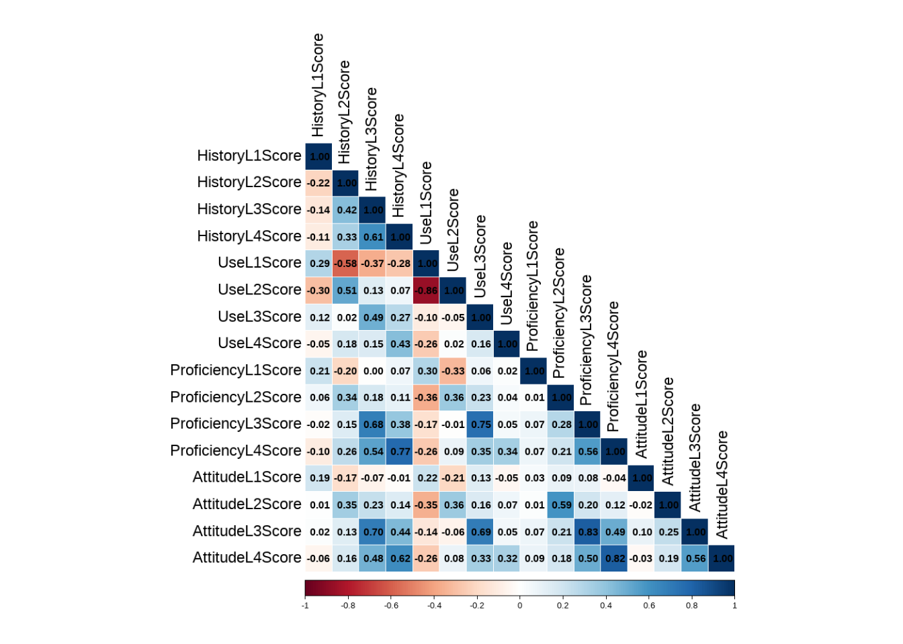
png('exp1_corrPlot_BLP_hclust.png', width=1000, height=1000);
corrplot::corrplot(cor(BLP_scores),type="lower", order="hclust", diag=T, method="color", outline=F, addgrid.col=F, tl.col='black', tl.pos='ld', addCoef.col='black',tl.cex=1.5);
dev.off();png
2 grid.raster(readPNG("exp1_corrPlot_BLP_hclust.png"));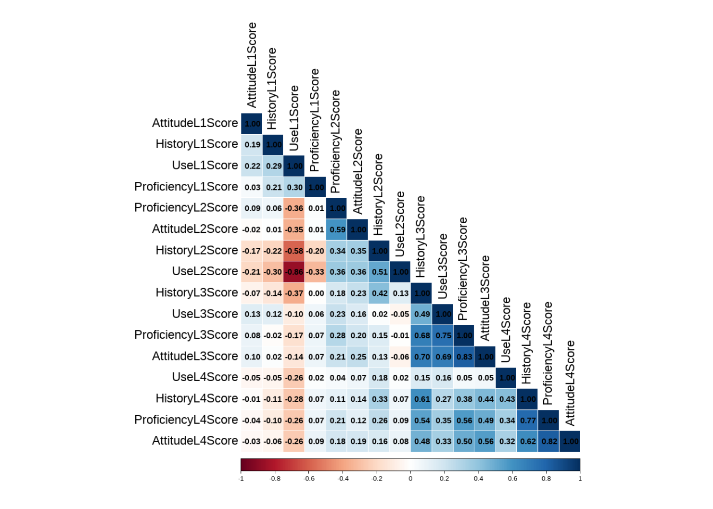
# BLP scores PCA
pca_varimax <- psych::principal(BLP_scores, nfactors=16, rotate='varimax');
pca_varimaxPrincipal Components Analysis
Call: psych::principal(r = BLP_scores, nfactors = 16, rotate = "varimax")
Standardized loadings (pattern matrix) based upon correlation matrix
RC1 RC9 RC2 RC6 RC10 RC7 RC5 RC4 RC8 RC3
HistoryL1Score 0.04 -0.04 -0.17 -0.01 0.02 0.97 0.08 0.09 -0.07 0.05
HistoryL2Score 0.03 0.08 0.34 0.08 0.13 -0.09 -0.08 -0.09 0.89 0.13
HistoryL3Score 0.50 0.27 0.13 0.03 0.08 -0.07 -0.05 0.00 0.23 0.01
HistoryL4Score 0.18 0.51 0.06 0.23 0.04 -0.05 0.01 0.04 0.15 -0.01
UseL1Score -0.08 -0.12 -0.89 -0.16 -0.10 0.11 0.10 0.13 -0.20 -0.12
UseL2Score -0.06 0.02 0.92 -0.05 0.14 -0.13 -0.08 -0.14 0.15 0.14
UseL3Score 0.95 0.09 0.01 0.11 0.04 0.08 0.06 0.02 -0.04 0.07
UseL4Score 0.03 0.18 0.06 0.97 0.02 -0.01 -0.02 0.01 0.06 0.00
ProficiencyL1Score 0.03 0.05 -0.19 0.01 0.02 0.09 0.00 0.97 -0.07 0.02
ProficiencyL2Score 0.15 0.08 0.22 0.00 0.29 0.06 0.07 0.02 0.12 0.90
ProficiencyL3Score 0.84 0.31 0.01 -0.05 0.04 -0.03 0.03 0.03 0.05 0.12
ProficiencyL4Score 0.27 0.83 0.07 0.13 -0.02 -0.05 -0.02 0.03 0.10 0.09
AttitudeL1Score 0.07 -0.02 -0.12 -0.02 0.00 0.08 0.98 0.00 -0.06 0.05
AttitudeL2Score 0.11 0.05 0.20 0.02 0.92 0.02 -0.01 0.03 0.12 0.27
AttitudeL3Score 0.76 0.32 -0.03 -0.05 0.13 0.00 0.05 0.02 0.05 0.04
AttitudeL4Score 0.25 0.92 0.08 0.13 0.08 -0.01 -0.02 0.04 0.01 0.03
RC11 RC14 RC13 RC12 RC16 RC15 h2 u2 com
HistoryL1Score -0.03 -0.04 0.00 0.00 0.00 0.00 1 8.9e-16 1.1
HistoryL2Score 0.10 0.13 0.01 0.01 0.01 0.00 1 1.7e-15 1.6
HistoryL3Score 0.23 0.73 0.06 0.02 0.01 -0.01 1 1.1e-16 2.8
HistoryL4Score 0.76 0.20 0.03 0.00 0.01 0.00 1 -4.4e-16 2.4
UseL1Score -0.07 -0.12 -0.03 -0.01 0.01 0.22 1 1.1e-16 1.6
UseL2Score 0.00 -0.02 -0.03 0.00 0.01 0.19 1 0.0e+00 1.4
UseL3Score 0.05 0.00 -0.13 -0.21 -0.01 0.00 1 2.2e-16 1.2
UseL4Score 0.11 0.01 -0.01 -0.01 0.00 0.00 1 -1.8e-15 1.1
ProficiencyL1Score 0.02 0.00 0.00 0.00 0.00 0.00 1 2.2e-16 1.1
ProficiencyL2Score 0.00 0.01 0.01 0.01 0.00 0.00 1 -2.2e-16 1.5
ProficiencyL3Score 0.04 0.19 0.03 0.36 0.05 0.00 1 4.4e-16 1.9
ProficiencyL4Score 0.30 0.09 -0.05 0.07 0.30 0.00 1 -8.9e-16 2.0
AttitudeL1Score 0.00 -0.02 0.01 0.00 0.00 0.00 1 -2.2e-16 1.1
AttitudeL2Score 0.02 0.04 0.02 0.00 0.00 0.00 1 -4.4e-16 1.4
AttitudeL3Score 0.11 0.22 0.48 0.02 -0.02 -0.01 1 -4.4e-16 2.5
AttitudeL4Score 0.06 0.08 0.09 -0.03 -0.18 -0.01 1 -1.3e-15 1.4
RC1 RC9 RC2 RC6 RC10 RC7 RC5 RC4 RC8 RC3 RC11
SS loadings 2.66 2.15 1.96 1.09 1.02 1.02 1.01 1.00 0.99 0.97 0.77
Proportion Var 0.17 0.13 0.12 0.07 0.06 0.06 0.06 0.06 0.06 0.06 0.05
Cumulative Var 0.17 0.30 0.42 0.49 0.55 0.62 0.68 0.74 0.81 0.87 0.91
Proportion Explained 0.17 0.13 0.12 0.07 0.06 0.06 0.06 0.06 0.06 0.06 0.05
Cumulative Proportion 0.17 0.30 0.42 0.49 0.55 0.62 0.68 0.74 0.81 0.87 0.91
RC14 RC13 RC12 RC16 RC15
SS loadings 0.71 0.26 0.18 0.13 0.08
Proportion Var 0.04 0.02 0.01 0.01 0.01
Cumulative Var 0.96 0.98 0.99 0.99 1.00
Proportion Explained 0.04 0.02 0.01 0.01 0.01
Cumulative Proportion 0.96 0.98 0.99 0.99 1.00
Mean item complexity = 1.6
Test of the hypothesis that 16 components are sufficient.
The root mean square of the residuals (RMSR) is 0
with the empirical chi square 0 with prob < NA
Fit based upon off diagonal values = 1data_BLP <- cbind(data_BLP, pca_varimax$scores[,c('RC1','RC9','RC2','RC8','RC3')]);
colnames(data_BLP)[which(names(data_BLP) == "RC1")] <- "RC1_L3";
colnames(data_BLP)[which(names(data_BLP) == "RC9")] <- "RC9_L4";
colnames(data_BLP)[which(names(data_BLP) == "RC2")] <- "RC2_use_L1vsL2";
colnames(data_BLP)[which(names(data_BLP) == "RC8")] <- "RC8_hist_L2"
colnames(data_BLP)[which(names(data_BLP) == "RC3")] <- "RC3_prof_L2"# scree plot
scree_data <- data.frame(Component = 1:16,Variance = pca_varimax$values[1:16]);
ggplot(scree_data, aes(x = Component, y = Variance)) +
geom_line(linewidth=1) +
geom_point(size=4) +
labs(title = "Scree Plot", x = "Principal Components", y = "Variance Explained") +
scale_x_discrete(limits=c(seq(from=1,to=16))) +
theme(panel.grid.major = element_blank(), panel.grid.minor = element_blank(),
panel.background = element_blank(), axis.line = element_line(colour = "black"),
axis.text = element_text(family = "CMU Serif", size = 20, color = "black"),
text=element_text(family="CMU Serif",size=20),
legend.background=element_rect(fill=NA));Warning in scale_x_discrete(limits = c(seq(from = 1, to = 16))): Continuous limits supplied to discrete scale.
ℹ Did you mean `limits = factor(...)` or `scale_*_continuous()`?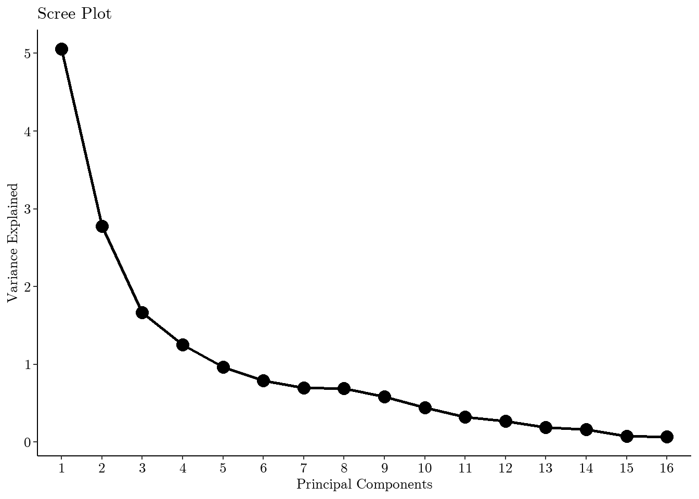
# biplot of 1st 2 PCs
#biplot(pca_varimax, main="Biplot of First Two Principal Components");# loadings plot for 1st 2 PCs
loadings_data <- as.data.frame(pca_varimax$loadings[1:16, ]);
loadings_data$BLP_var <- c("L1 History","L2 History", "L3 History", "L4 History",
"L1 Use","L2 Use","L3 Use","L4 Use",
"L1 Proficiency","L2 Proficiency","L3 Proficiency","L4 Proficiency",
"L1 Attitude","L2 Attitude","L3 Attitude","L4 Attitude");
loadings_data$lang <- c(rep(c("L1","L2","L3","L4"),times=4));
ggplot(loadings_data, aes(x=RC1, y=RC3)) +
geom_point(size=4,colour=c(rep(c(cols2[100],cols2[310],cols2[200],cols2[285]),times=4))) +
geom_text_repel(aes(label=rownames(loadings_data)),vjust=2,family="CMU Serif",
position=position_dodge(width=0.01),force=2,size=10,
colour=c(rep(c(cols2[100],cols2[310],cols2[200],cols2[285]),times=4))) +
labs(title="PCA Loadings Plot (PC1 vs PC9)",x="PC1 (L3)",y="PC9 (L4)") +
theme(panel.grid.major = element_blank(), panel.grid.minor = element_blank(),
panel.background = element_blank(), axis.line = element_line(colour = "black"),
axis.text = element_text(family = "CMU Serif", size = 20, color = "black"),
text=element_text(family="CMU Serif",size=20),legend.position="none",
legend.background=element_rect(fill=NA));Warning: `position_dodge()` requires non-overlapping x intervals.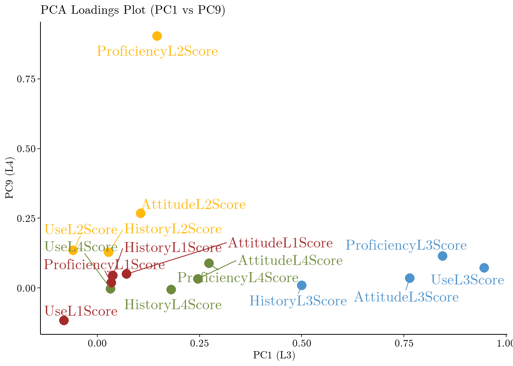
# PC1
ggplot(loadings_data, aes(x=BLP_var, y=RC1, fill=lang)) +
geom_bar(stat="identity") +
geom_hline(yintercept=0) +
scale_fill_manual(values=c("L1"=cols2[100],"L2"=cols2[310],"L3"=cols2[200],"L4"=cols2[285]),
name="") +
labs(title="PCA Loadings Plot (PC1 - L3)",y="PC1 loading",x="BLP variables") +
theme(panel.grid.major = element_blank(), panel.grid.minor = element_blank(),
panel.background = element_blank(), axis.line = element_line(colour = "black"),
axis.text = element_text(family = "CMU Serif", size = 20, color = "black"),
text=element_text(family="CMU Serif",size=20),axis.text.x=element_text(angle=45,vjust=1,hjust=1),
legend.position=c(0.05,0.9),legend.background=element_rect(fill=NA));
# PC9
ggplot(loadings_data, aes(x=BLP_var, y=RC9, fill=lang)) +
geom_bar(stat="identity") +
geom_hline(yintercept=0) +
scale_fill_manual(values=c("L1"=cols2[100],"L2"=cols2[310],"L3"=cols2[200],"L4"=cols2[285]),
name="") +
labs(title="PCA Loadings Plot (PC9 - L4)",y="PC9 loading",x="BLP variables") +
theme(panel.grid.major = element_blank(), panel.grid.minor = element_blank(),
panel.background = element_blank(), axis.line = element_line(colour = "black"),
axis.text = element_text(family = "CMU Serif", size = 20, color = "black"),
text=element_text(family="CMU Serif",size=20),axis.text.x=element_text(angle=45,vjust=1,hjust=1),
legend.position=c(0.05,0.9),legend.background=element_rect(fill=NA));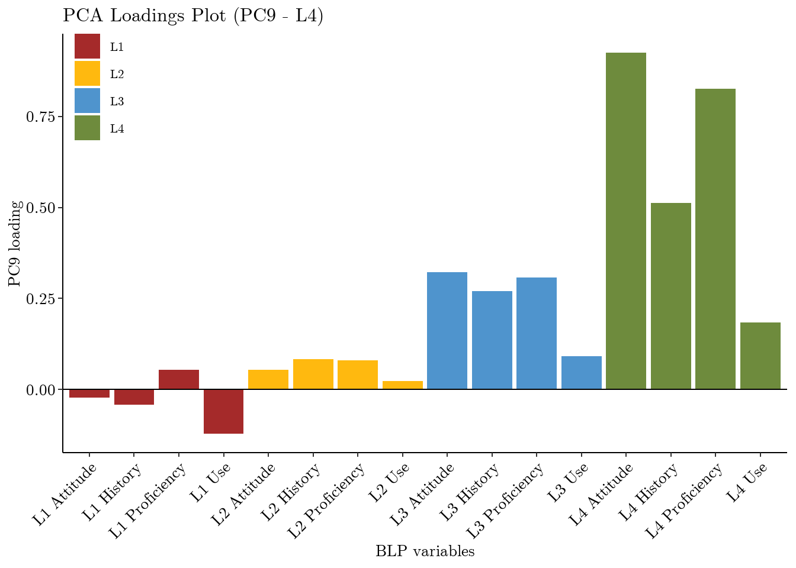
# PC2
ggplot(loadings_data, aes(x=BLP_var, y=RC2, fill=lang)) +
geom_bar(stat="identity") +
geom_hline(yintercept=0) +
scale_fill_manual(values=c("L1"=cols2[100],"L2"=cols2[310],"L3"=cols2[200],"L4"=cols2[285]),
name="") +
labs(title="PCA Loadings Plot (PC2 - L1 Use vs L2 Use)",y="PC2 loading",x="BLP variables") +
theme(panel.grid.major = element_blank(), panel.grid.minor = element_blank(),
panel.background = element_blank(), axis.line = element_line(colour = "black"),
axis.text = element_text(family = "CMU Serif", size = 20, color = "black"),
text=element_text(family="CMU Serif",size=20),axis.text.x=element_text(angle=45,vjust=1,hjust=1),
legend.position=c(0.05,0.9),legend.background=element_rect(fill=NA));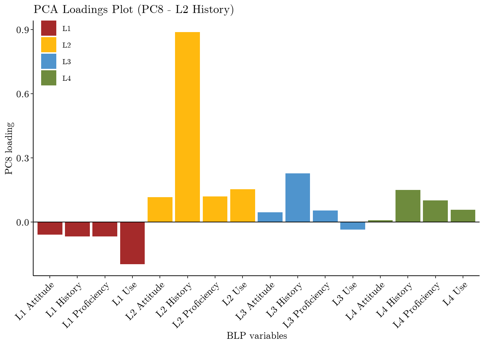
# PC8
ggplot(loadings_data, aes(x=BLP_var, y=RC8, fill=lang)) +
geom_bar(stat="identity") +
geom_hline(yintercept=0) +
scale_fill_manual(values=c("L1"=cols2[100],"L2"=cols2[310],"L3"=cols2[200],"L4"=cols2[285]),
name="") +
labs(title="PCA Loadings Plot (PC8 - L2 History)",y="PC8 loading",x="BLP variables") +
theme(panel.grid.major = element_blank(), panel.grid.minor = element_blank(),
panel.background = element_blank(), axis.line = element_line(colour = "black"),
axis.text = element_text(family = "CMU Serif", size = 20, color = "black"),
text=element_text(family="CMU Serif",size=20),axis.text.x=element_text(angle=45,vjust=1,hjust=1),
legend.position=c(0.05,0.9),legend.background=element_rect(fill=NA));
# PC3
ggplot(loadings_data, aes(x=BLP_var, y=RC3, fill=lang)) +
geom_bar(stat="identity") +
geom_hline(yintercept=0) +
scale_fill_manual(values=c("L1"=cols2[100],"L2"=cols2[310],"L3"=cols2[200],"L4"=cols2[285]),
name="") +
labs(title="PCA Loadings Plot (PC3 - L2 Proficiency)",y="PC3 loading",x="BLP variables") +
theme(panel.grid.major = element_blank(), panel.grid.minor = element_blank(),
panel.background = element_blank(), axis.line = element_line(colour = "black"),
axis.text = element_text(family = "CMU Serif", size = 20, color = "black"),
text=element_text(family="CMU Serif",size=20),axis.text.x=element_text(angle=45,vjust=1,hjust=1),
legend.position=c(0.05,0.9),legend.background=element_rect(fill=NA));
# Cluster plot of 1st 2 PCs
cluster_data <- data.frame(pca_varimax$scores[, 1:2]);
colnames(cluster_data) <- c("PC1", "PC2");
ggplot(cluster_data, aes(x = PC1, y = PC2)) +
geom_point() +
labs(title = "PCA Cluster Plot (First Two PCs)", x = "Principal Component 1", y = "Principal Component 9") +
theme_minimal();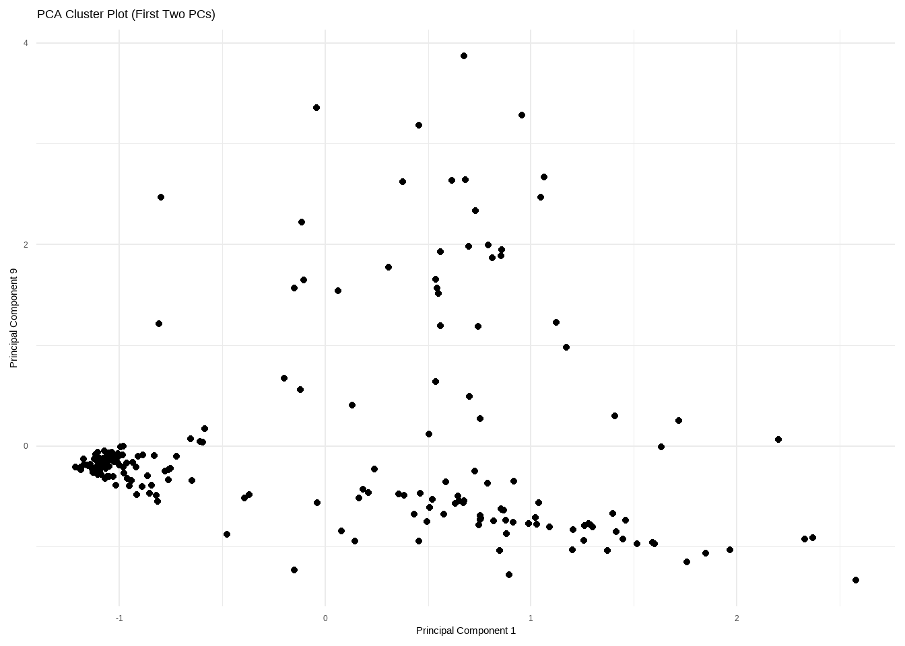
multilingual_metrics <- data.frame();
for (i in 1:193) {
temp <- scores_list[which(scores_list$sbj_ID==unique(scores_list$sbj_ID)[i]),];
sbj_ID <- temp$sbj_ID[1];
temp_scores <- as.list(temp);
temp_scores <- temp_scores[-1];
temp_scores <- unlist(temp_scores);
use_temp <- use_scores_list[which(use_scores_list$sbj_ID==unique(use_scores_list$sbj_ID)[i]),];
use_temp_scores <- as.list(use_temp);
use_temp_scores <- use_temp_scores[-1];
use_temp_scores <- unlist(use_temp_scores);
# variance
variance <- var(temp_scores,na.rm=TRUE);
# entropy
entropy <- Entropy(temp_scores,na.rm=TRUE);
use_entropy <- Entropy(use_temp_scores,na.rm=TRUE);
# multilingual experience
multiexp <- sum(temp_scores);
# L1 - L2 score
L1L2 <- abs(temp_scores[[1]]-temp_scores[[2]]);
multilingual_metrics <- rbind(multilingual_metrics,
list(sbj_ID,variance,entropy,use_entropy,multiexp,L1L2));
};
names(multilingual_metrics) <- c("sbj_ID","var","ent","use_ent","multiexp","L1_L2_diff");
data_BLP <- merge(data_BLP,multilingual_metrics,by="sbj_ID");cossim <- read.csv("distances_exp1_NOLOWSCORES.csv",header=T,sep=",");
cossim <- subset(cossim, select = -c(X)); # remove redundant column added by Python
names(cossim) <- c('sbj_ID','cossim');
data_BLP <- merge(data_BLP,cossim,by="sbj_ID");
use_cossim <- read.csv("distances_exp1_usescores.csv",header=T,sep=",");
use_cossim <- subset(use_cossim, select = -c(X)); # remove redundant column added by Python
names(use_cossim) <- c('sbj_ID','use_cossim');
data_BLP <- merge(data_BLP,use_cossim,by="sbj_ID");data_BLP$category <- "mono";
data_BLP$category[data_BLP$L2Score>0] <- "bi";
data_BLP$category[data_BLP$L3Score>0] <- "tri";
data_BLP$category[data_BLP$L4Score>0] <- "quadri";
data_BLP$category <- factor(data_BLP$category,levels=c("mono","bi","tri","quadri"));
summary(data_BLP$category); mono bi tri quadri
4 80 58 51 diff_script_sbjID <- c('5cbe02ab39447e0001745a5e','5e3ff59bf2160b23942ada93','6147aed5b2a4f748dc2b6ba4');
# n=3
mixed_script_sbjID <- c('5ea171c1a8782801263e7540','5ea9611edec14d052ada0bae','5eb35dff41a381156be161c2','5f0f93938935de000855898b','5f7bd801486f5e1ce581980f','5fc2d2d79da439201ab6addc','5fc44d83862e3e79b02e0438','5fd9c5c67fa7c74ec42bb318','600f0f9c3bfcdc077c924e51','602bb123612bfe330818d4ef','6093cacf9a39751eedd55916','61055020201a7da5a704f7dd','611bdb0fed7c9df6dce28c3f','6163faf9d9ac4586fe776568','616eb493bb7e4ab4fa1de8d4','63ee5d8aaee278de46b7d4cc','64ef422a4789bd6b6b9042ce');
# n=17
sbj_IDs_included <- list(unique(data_BLP$sbj_ID))[[1]];
same_script_sbjID <- sbj_IDs_included[!sbj_IDs_included %in% diff_script_sbjID];
same_script_sbjID <- same_script_sbjID[!same_script_sbjID %in% mixed_script_sbjID];
# n=156
data_BLP$script[data_BLP$sbj_ID %in% diff_script_sbjID] <- 'mixed/diff';
data_BLP$script[data_BLP$sbj_ID %in% mixed_script_sbjID] <- 'mixed/diff';
data_BLP$script[data_BLP$sbj_ID %in% same_script_sbjID] <- 'same';
data_BLP$script <- factor(data_BLP$script,levels=c("same","mixed/diff"));#var
summary(data_BLP$var); Min. 1st Qu. Median Mean 3rd Qu. Max.
452.2 5658.7 7727.0 7208.6 9172.0 11569.8 var(data_BLP$var);[1] 6580066#ent
summary(data_BLP$ent); Min. 1st Qu. Median Mean 3rd Qu. Max.
0.0000 0.9538 1.3163 1.2871 1.5825 1.9874 var(data_BLP$ent);[1] 0.1807817cor.test(data_BLP$var,data_BLP$ent,method="pearson");
Pearson's product-moment correlation
data: data_BLP$var and data_BLP$ent
t = -22.851, df = 191, p-value < 2.2e-16
alternative hypothesis: true correlation is not equal to 0
95 percent confidence interval:
-0.8894250 -0.8126507
sample estimates:
cor
-0.8556772 # significantly very strongly negatively correlated
ggplot(data_BLP, aes(x=sbj_ID,y=ent,colour=category)) +
geom_point(size=4) +
labs(x = "Participant ID", y = "Multilingual balance (entropy)") +
theme(panel.grid.major = element_blank(), panel.grid.minor = element_blank(),
panel.background = element_blank(), axis.line = element_line(colour = "black"),
axis.text = element_text(family = "CMU Serif", size = 20, color = "black"),
axis.text.x=element_blank(),
text=element_text(family="CMU Serif",size=20),
legend.position=c(0.15,0.25),legend.background=element_rect(fill=NA)) +
scale_color_manual(values=c(cols2[100],cols2[150],cols2[200],cols2[250]),
name="Category",
labels=c("Monolingual","Bilingual","Trilingual","Quadrilingual"));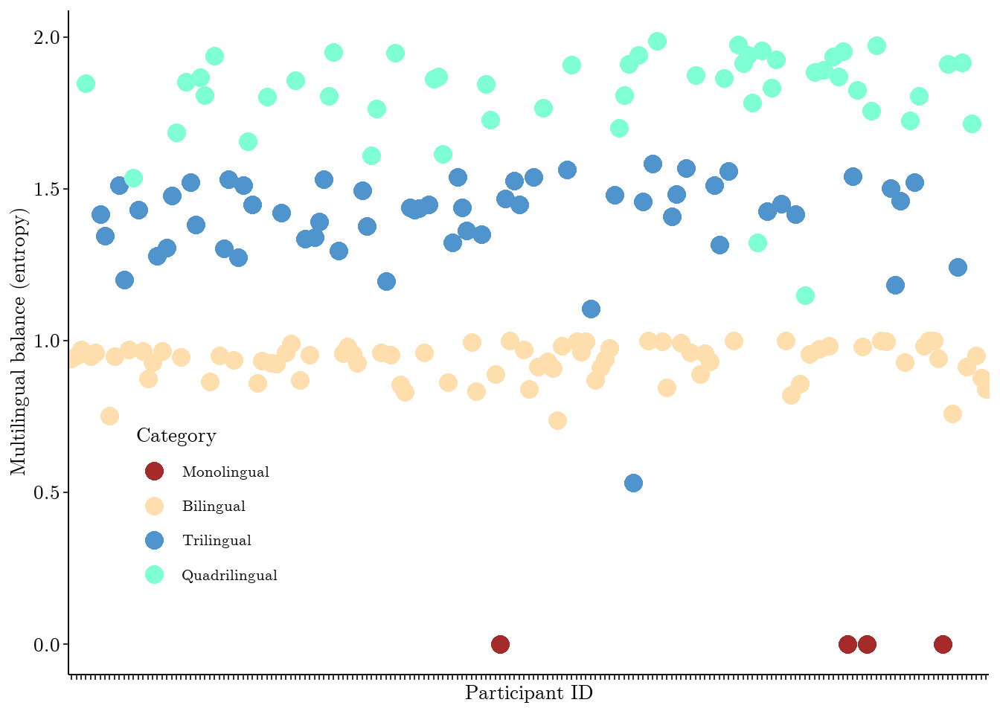
hist(data_BLP$ent,breaks=1000,xlab="Multilingual balance (entropy)",
main="",cex.lab=2,cex.axis=1.5);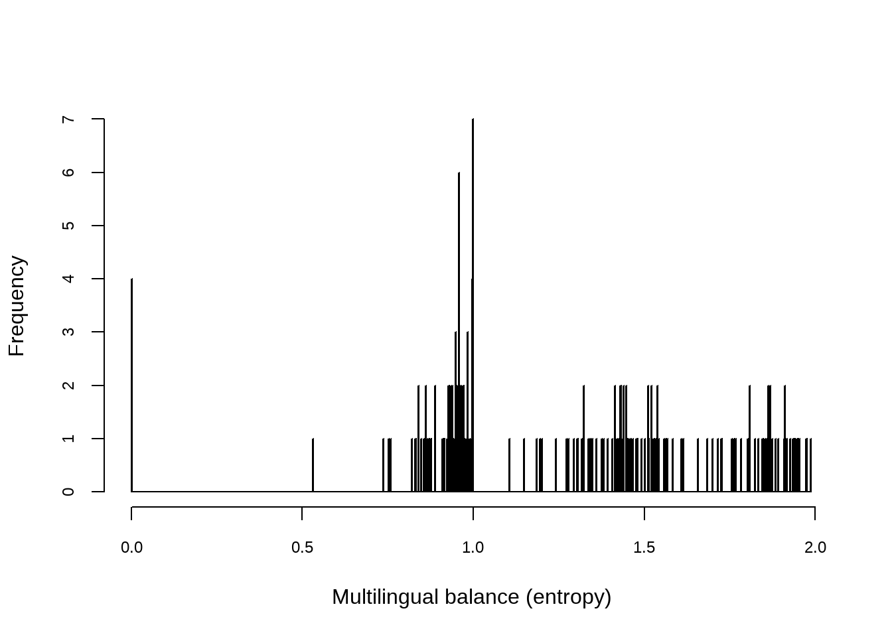
# lots at 0 and 1#use_ent
summary(data_BLP$use_ent); Min. 1st Qu. Median Mean 3rd Qu. Max.
0.0000 0.6500 0.9552 0.9373 1.2835 1.9452 var(data_BLP$use_ent);[1] 0.1725708#multiexp
summary(data_BLP$multiexp); Min. 1st Qu. Median Mean 3rd Qu. Max.
167.2 310.1 350.5 368.1 425.4 592.4 var(data_BLP$multiexp);[1] 6460.164#L1_L2_diff
summary(data_BLP$L1_L2_diff); Min. 1st Qu. Median Mean 3rd Qu. Max.
0.086 52.128 77.924 76.358 97.446 207.952 var(data_BLP$L1_L2_diff);[1] 1723.729#cossim
summary(data_BLP$cossim); Min. 1st Qu. Median Mean 3rd Qu. Max.
0.8611 0.9228 0.9552 0.9502 0.9744 1.0000 var(data_BLP$cossim);[1] 0.001161255ggplot(data_BLP, aes(x=sbj_ID,y=cossim,colour=category)) +
geom_point(size=4) +
labs(x = "Participant ID", y = "Multilingual balance (cosine similarity)") +
theme(panel.grid.major = element_blank(), panel.grid.minor = element_blank(),
panel.background = element_blank(), axis.line = element_line(colour = "black"),
axis.text = element_text(family = "CMU Serif", size = 20, color = "black"),
axis.text.x=element_blank(),
text=element_text(family="CMU Serif",size=20),
legend.position=c(0.15,0.15),legend.background=element_rect(fill=NA)) +
scale_color_manual(values=c(cols2[100],cols2[150],cols2[200],cols2[250]),
name="Category",
labels=c("Monolingual","Bilingual","Trilingual","Quadrilingual"));
hist(data_BLP$cossim,breaks=1000,
xlab="Multilingual balance (cosine similarity)",main="",
cex.lab=2,cex.axis=1.5);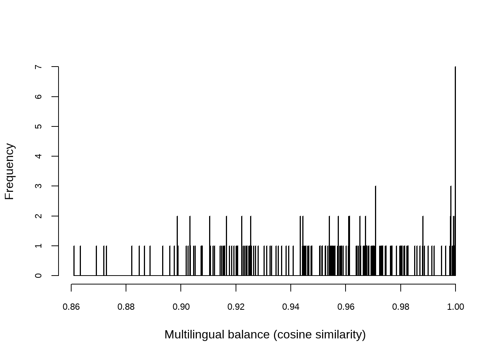
# lots at 1
hist(data_BLP$cossim[data_BLP$category!="mono"],breaks=1000,
xlab="Multilingual balance (cosine similarity)",main="",
cex.lab=2,cex.axis=1.5);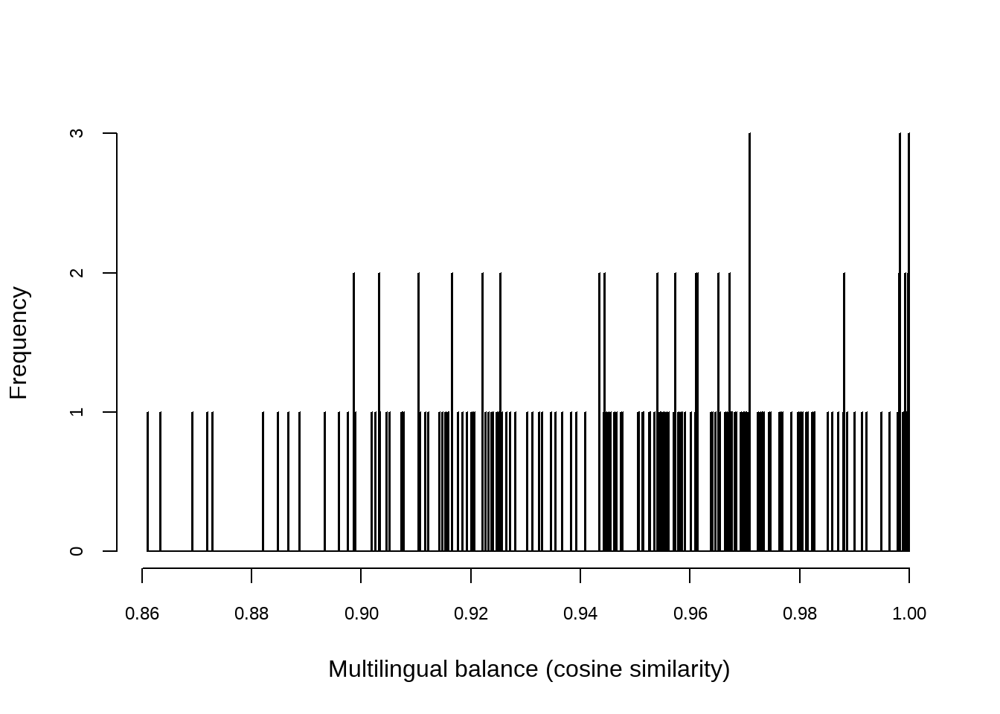
# exponential distributionggplot(data_BLP, aes(x=cossim,y=ent,colour=category)) +
geom_point(size=4) +
labs(x = "Multilingual balance (cosine similarity)", y = "Multilingual balance (entropy)") +
theme(panel.grid.major = element_blank(), panel.grid.minor = element_blank(),
panel.background = element_blank(), axis.line = element_line(colour = "black"),
axis.text = element_text(family = "CMU Serif", size = 20, color = "black"),
text=element_text(family="CMU Serif",size=20),
legend.position=c(0.17,0.2),legend.background=element_rect(fill=NA)) +
scale_color_manual(values=c(cols2[100],cols2[150],cols2[200],cols2[250]),
name="Category",
labels=c("Monolingual (n=22)","Bilingual (n=70)",
"Trilingual (n=51)","Quadrilingual (n=41)"));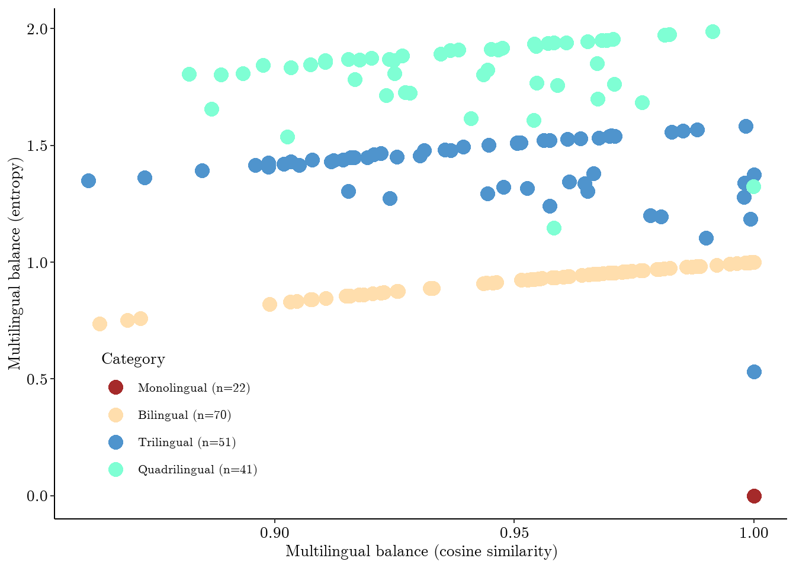
#use_cossim
summary(data_BLP$use_cossim); Min. 1st Qu. Median Mean 3rd Qu. Max.
0.6308 0.7592 0.8160 0.8268 0.8829 1.0000 var(data_BLP$use_cossim);[1] 0.007153965# cossim & use_cossim
cor.test(data_BLP$cossim,data_BLP$use_cossim,method="pearson");
Pearson's product-moment correlation
data: data_BLP$cossim and data_BLP$use_cossim
t = 8.9829, df = 191, p-value = 2.533e-16
alternative hypothesis: true correlation is not equal to 0
95 percent confidence interval:
0.4374044 0.6371718
sample estimates:
cor
0.5449764 # significantly strongly positively correlated#ent & multiexp
cor.test(data_BLP$ent,data_BLP$multiexp,method="pearson");
Pearson's product-moment correlation
data: data_BLP$ent and data_BLP$multiexp
t = 37.295, df = 191, p-value < 2.2e-16
alternative hypothesis: true correlation is not equal to 0
95 percent confidence interval:
0.9180333 0.9527484
sample estimates:
cor
0.9376897 # significantly very strongly positively correlated
ggplot(data_BLP, aes(x=multiexp,y=ent,colour=category)) +
geom_point(size=4) +
labs(x = "Multilingual experience", y = "Multilingual balance (entropy)") +
theme(panel.grid.major = element_blank(), panel.grid.minor = element_blank(),
panel.background = element_blank(), axis.line = element_line(colour = "black"),
axis.text = element_text(family = "CMU Serif", size = 20, color = "black"),
text=element_text(family="CMU Serif",size=20),
legend.position=c(0.8,0.2),legend.background=element_rect(fill=NA)) +
scale_color_manual(values=c(cols2[100],cols2[150],cols2[200],cols2[250]),
name="Category",
labels=c("Monolingual (n=22)","Bilingual (n=70)",
"Trilingual (n=51)","Quadrilingual (n=41)"));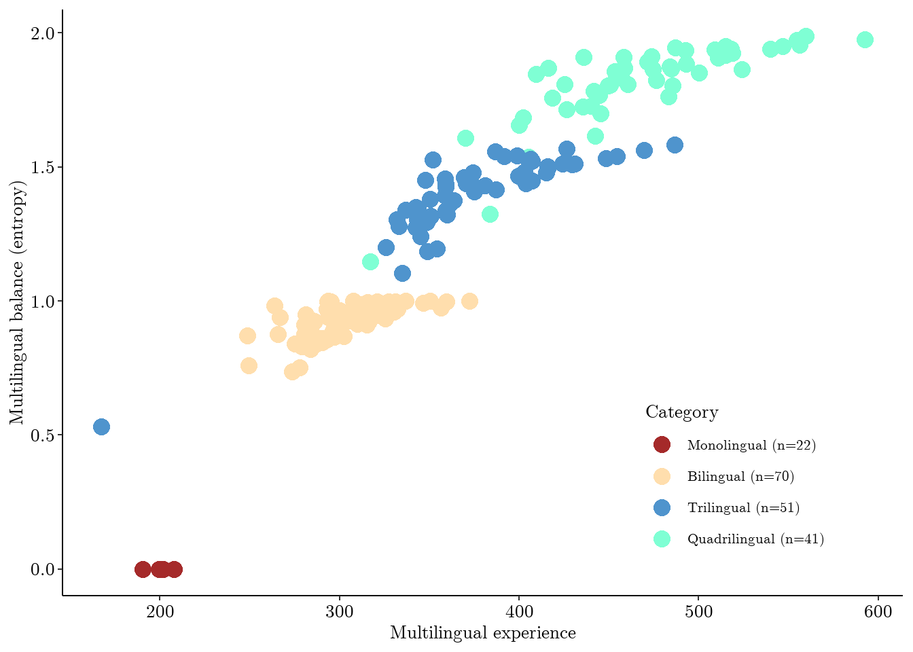
#cossim & multiexp
cor.test(data_BLP$cossim,data_BLP$multiexp,method="pearson");
Pearson's product-moment correlation
data: data_BLP$cossim and data_BLP$multiexp
t = -1.6814, df = 191, p-value = 0.09432
alternative hypothesis: true correlation is not equal to 0
95 percent confidence interval:
-0.25761635 0.02082483
sample estimates:
cor
-0.1207705 # not significant
ggplot(data_BLP, aes(x=cossim,y=multiexp,colour=category)) +
geom_point(size=4) +
labs(y = "Multilingual experience", x = "Multilingual balance (entropy)") +
theme(panel.grid.major = element_blank(), panel.grid.minor = element_blank(),
panel.background = element_blank(), axis.line = element_line(colour = "black"),
axis.text = element_text(family = "CMU Serif", size = 20, color = "black"),
text=element_text(family="CMU Serif",size=20),
legend.position=c(0.17,0.8),legend.background=element_rect(fill=NA)) +
scale_color_manual(values=c(cols2[100],cols2[150],cols2[200],cols2[250]),
name="Category",
labels=c("Monolingual (n=22)","Bilingual (n=70)",
"Trilingual (n=51)","Quadrilingual (n=41)"));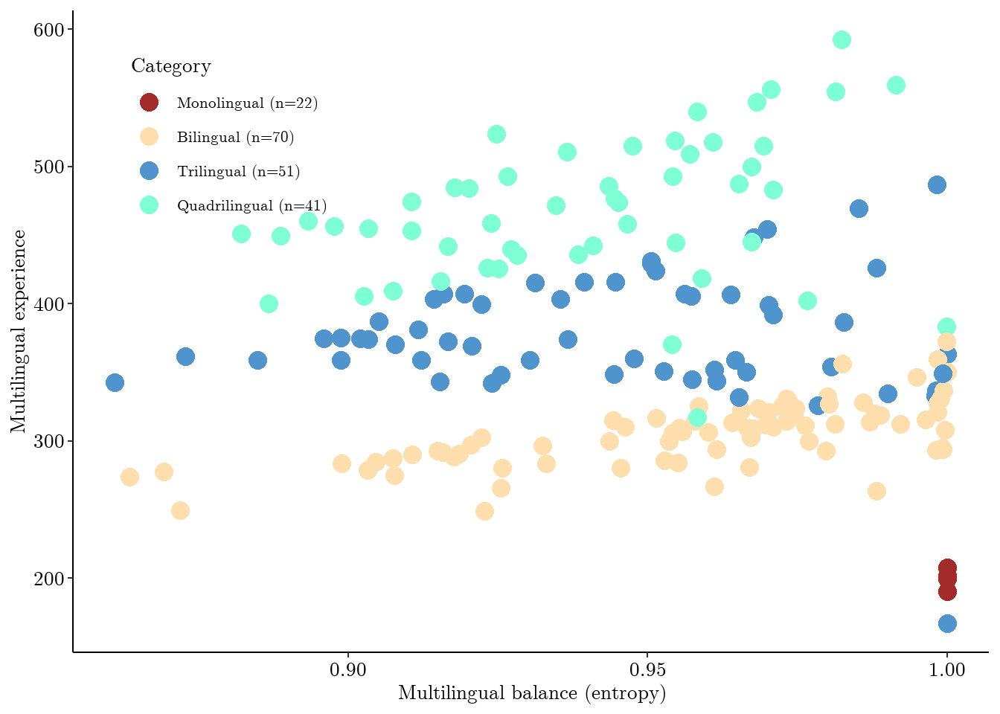
#cossim & ent
cor.test(data_BLP$cossim,data_BLP$ent,method="pearson");
Pearson's product-moment correlation
data: data_BLP$cossim and data_BLP$ent
t = -3.6017, df = 191, p-value = 0.000403
alternative hypothesis: true correlation is not equal to 0
95 percent confidence interval:
-0.3798979 -0.1150472
sample estimates:
cor
-0.2521894 # no monos:
cor.test(data_BLP$cossim[data_BLP$category!="mono"],data_BLP$ent[data_BLP$category!="mono"],method="pearson");
Pearson's product-moment correlation
data: data_BLP$cossim[data_BLP$category != "mono"] and data_BLP$ent[data_BLP$category != "mono"]
t = -2.5062, df = 187, p-value = 0.01306
alternative hypothesis: true correlation is not equal to 0
95 percent confidence interval:
-0.31489880 -0.03853205
sample estimates:
cor
-0.1802709 # negatively correlated#ent & cossim
cor.test(data_BLP$ent,data_BLP$cossim,method="pearson");
Pearson's product-moment correlation
data: data_BLP$ent and data_BLP$cossim
t = -3.6017, df = 191, p-value = 0.000403
alternative hypothesis: true correlation is not equal to 0
95 percent confidence interval:
-0.3798979 -0.1150472
sample estimates:
cor
-0.2521894 # significantly correlated, but differences# correlations of multilingual metrics
M <- cor(subset(data_BLP,select=c('var','ent','use_ent','multiexp','L1_L2_diff','cossim','use_cossim')));
png('exp1_corrPlot_multimetrics.png', width=1000, height=1000);
corrplot::corrplot(M,type="lower", order="original", diag=T, method="color", outline=F, addgrid.col=F, tl.col='black', tl.pos='ld', addCoef.col='black',number.cex=1.5,tl.cex=1.5);
dev.off();png
2 grid.raster(readPNG("exp1_corrPlot_multimetrics.png"));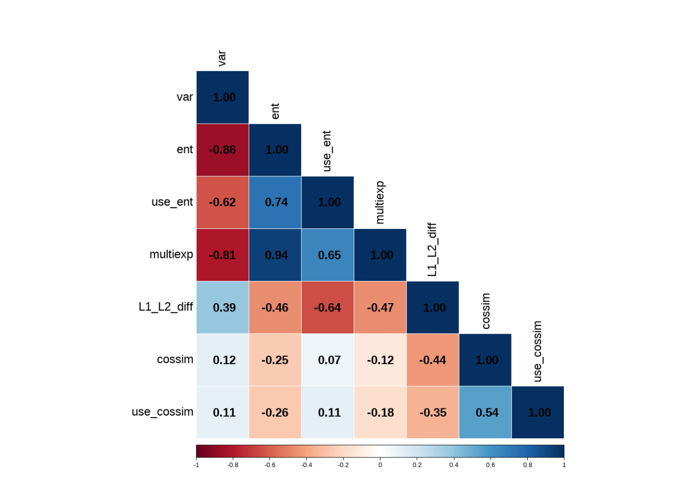
png('exp1_corrPlot_multimetrics_hclust.png', width=1000, height=1000);
corrplot::corrplot(M,type="lower", order="hclust", diag=T, method="color", outline=F, addgrid.col=F, tl.col='black', tl.pos='ld', addCoef.col='black', number.cex=1.5,tl.cex=1.5);
dev.off();png
2 grid.raster(readPNG("exp1_corrPlot_multimetrics_hclust.png"));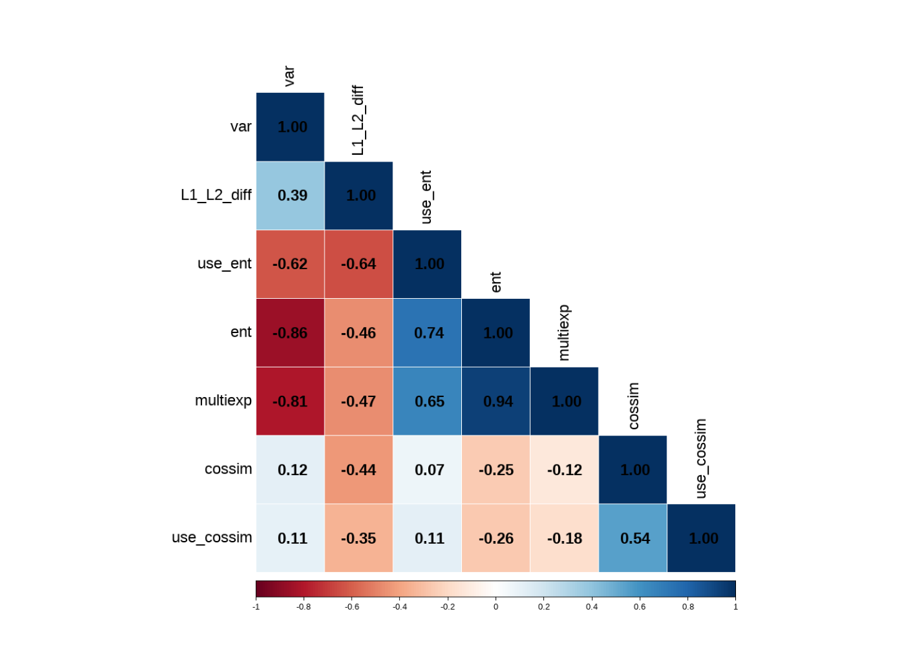
# export BLP dataframe
write.csv(data_BLP,"BASL_exp1_BLP.csv", row.names = FALSE);# combining BLP & testing scores
data_BLP_shortened <- subset(data_BLP, select=c(sbj_ID,Gender,Age,
HistoryL1Score,HistoryL2Score,HistoryL3Score,HistoryL4Score,
UseL1Score,UseL2Score,UseL3Score,UseL4Score,
ProficiencyL1Score,ProficiencyL2Score,ProficiencyL3Score,ProficiencyL4Score,
AttitudeL1Score,AttitudeL2Score,AttitudeL3Score,AttitudeL4Score,
L1Score,L2Score,L3Score,L4Score,category,script,
var,ent,use_ent,multiexp,L1_L2_diff,cossim,use_cossim,
RC1_L3,RC9_L4,RC2_use_L1vsL2,RC8_hist_L2,RC3_prof_L2));
data_BLP_testing <- list(data_testing,data_BLP_shortened) %>% reduce(inner_join, by='sbj_ID');
data_BLP_familiarity <- list(data_familiarity,data_BLP_shortened) %>% reduce(inner_join, by='sbj_ID');# correlations of BLP metrics with testing scores
M <- cor(subset(data_BLP_testing,select=c(score_2M,dprime,c,
var,ent,use_ent,multiexp,L1_L2_diff,cossim,use_cossim,
RC1_L3,RC9_L4,RC2_use_L1vsL2,RC8_hist_L2,RC3_prof_L2)));
png('exp1_corrPlot_BLP_testing.png', width=1000, height=1000);
corrplot::corrplot(M,type="lower", order="original", diag=T, method="color", outline=F, addgrid.col=F, tl.col='black', tl.pos='ld', addCoef.col='black',tl.cex=1.5);
dev.off();png
2 grid.raster(readPNG("exp1_corrPlot_BLP_testing.png"));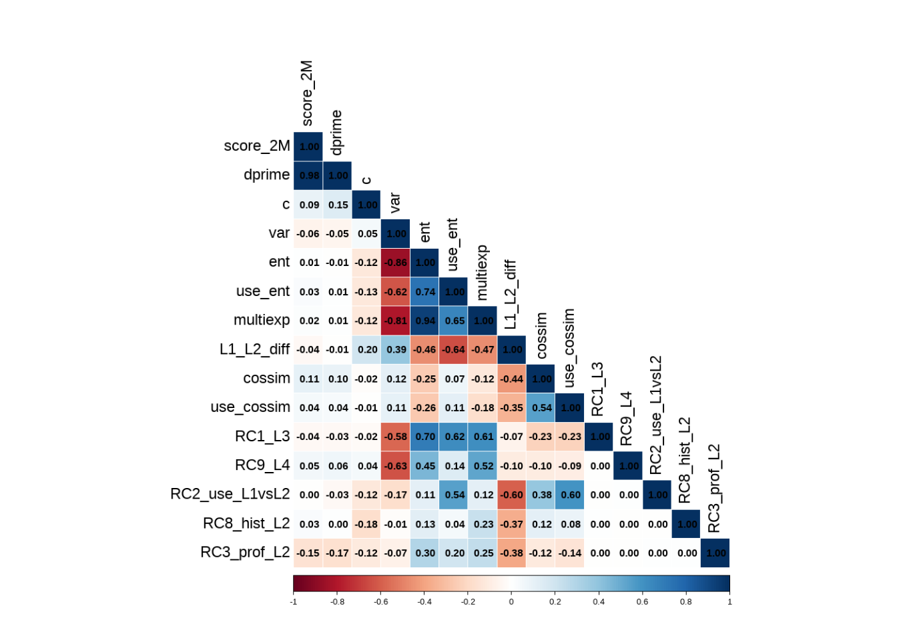
png('exp1_corrPlot_BLP_testing_hclust.png', width=1000, height=1000);
corrplot::corrplot(M,type="lower", order="hclust", diag=T, method="color", outline=F, addgrid.col=F, tl.col='black', tl.pos='ld', addCoef.col='black',tl.cex=1.5);
dev.off();png
2 grid.raster(readPNG("exp1_corrPlot_BLP_testing_hclust.png"));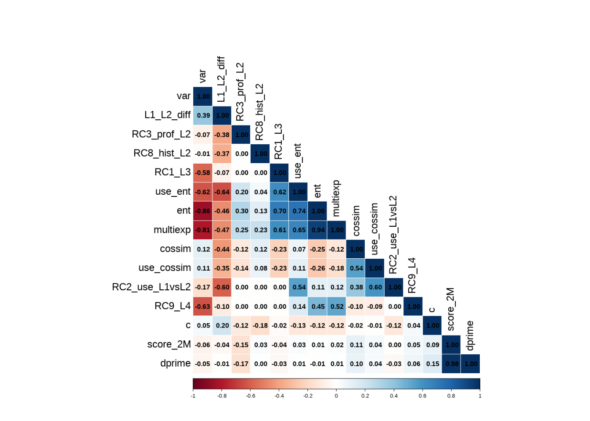
# export BLP testing dataframe
write.csv(data_BLP_testing,"BASL_exp1_BLPtesting.csv", row.names = FALSE);lm_TestingConditions <- glmer(observed ~ testing_condition + (1+testing_condition|sbj_ID), data=subset(data_BLP_testing, rt>300 & rt<3000), family='binomial');
summary(lm_TestingConditions)Generalized linear mixed model fit by maximum likelihood (Laplace
Approximation) [glmerMod]
Family: binomial ( logit )
Formula: observed ~ testing_condition + (1 + testing_condition | sbj_ID)
Data: subset(data_BLP_testing, rt > 300 & rt < 3000)
AIC BIC logLik -2*log(L) df.resid
26451.0 26522.1 -13216.5 26433.0 19970
Scaled residuals:
Min 1Q Median 3Q Max
-3.1151 -0.9999 0.6089 0.8692 1.9274
Random effects:
Groups Name Variance Std.Dev. Corr
sbj_ID (Intercept) 0.27421 0.5237
testing_condition1M 0.04038 0.2009 -0.19
testing_condition2M 0.26563 0.5154 -0.40 0.98
Number of obs: 19979, groups: sbj_ID, 193
Fixed effects:
Estimate Std. Error z value Pr(>|z|)
(Intercept) -0.04777 0.04511 -1.059 0.29
testing_condition1M 0.27517 0.03813 7.217 5.31e-13 ***
testing_condition2M 0.67242 0.05276 12.744 < 2e-16 ***
---
Signif. codes: 0 '***' 0.001 '**' 0.01 '*' 0.05 '.' 0.1 ' ' 1
Correlation of Fixed Effects:
(Intr) tst_1M
tstng_cnd1M -0.406
tstng_cnd2M -0.490 0.561effect_conditions <- as.data.frame(effect('testing_condition',
lm_TestingConditions, confint=list(alpha=.95)),
xlevels = list(testing_condition=c('0M','1M','2M')));
effect_conditions testing_condition fit se lower upper
1 0M 0.4880602 0.01127135 0.4660064 0.5101605
2 1M 0.5566055 0.01129018 0.5343793 0.5786075
3 2M 0.6512751 0.01132166 0.6287703 0.6731248export_output(model=lm_TestingConditions,name="Exp. 1 `Yes' responses - Conditions",
pred_levels=c('0M','1M','2M'),pred_type='categorical',
outcome_levels=c('0M','1M','2M'));lm_Gender <- glmer(observed ~ scale(trialn) + testing_condition*Gender + (1|sbj_ID), data=subset(data_BLP_testing, rt>300 & rt<3000), family='binomial');
summary(lm_Gender); Generalized linear mixed model fit by maximum likelihood (Laplace
Approximation) [glmerMod]
Family: binomial ( logit )
Formula: observed ~ scale(trialn) + testing_condition * Gender + (1 |
sbj_ID)
Data: subset(data_BLP_testing, rt > 300 & rt < 3000)
AIC BIC logLik -2*log(L) df.resid
26482.9 26569.8 -13230.5 26460.9 19968
Scaled residuals:
Min 1Q Median 3Q Max
-3.4314 -1.0086 0.6123 0.8761 2.1266
Random effects:
Groups Name Variance Std.Dev.
sbj_ID (Intercept) 0.2365 0.4863
Number of obs: 19979, groups: sbj_ID, 193
Fixed effects:
Estimate Std. Error z value Pr(>|z|)
(Intercept) -0.09595 0.05621 -1.707 0.0878 .
scale(trialn) -0.07651 0.01479 -5.173 2.31e-07 ***
testing_condition1M 0.27626 0.04612 5.990 2.10e-09 ***
testing_condition2M 0.69364 0.04806 14.434 < 2e-16 ***
GenderOther 0.08990 0.34689 0.259 0.7955
GenderWoman 0.10503 0.08760 1.199 0.2305
testing_condition1M:GenderOther 0.50657 0.29466 1.719 0.0856 .
testing_condition2M:GenderOther 0.77104 0.33053 2.333 0.0197 *
testing_condition1M:GenderWoman -0.02253 0.07161 -0.315 0.7530
testing_condition2M:GenderWoman -0.07636 0.07453 -1.025 0.3056
---
Signif. codes: 0 '***' 0.001 '**' 0.01 '*' 0.05 '.' 0.1 ' ' 1
Correlation of Fixed Effects:
(Intr) scl(t) tst_1M tst_2M GndrOt GndrWm t_1M:GO t_2M:GO t_1M:GW
scale(trln) 0.008
tstng_cnd1M -0.392 0.001
tstng_cnd2M -0.377 -0.015 0.460
GenderOther -0.162 -0.001 0.063 0.061
GenderWoman -0.642 -0.002 0.252 0.242 0.104
tstng_1M:GO 0.061 -0.010 -0.156 -0.072 -0.385 -0.039
tstng_2M:GO 0.055 0.006 -0.067 -0.145 -0.345 -0.035 0.418
tstng_1M:GW 0.252 -0.004 -0.644 -0.296 -0.041 -0.390 0.101 0.043
tstng_2M:GW 0.243 -0.003 -0.297 -0.644 -0.039 -0.375 0.046 0.094 0.459 export_output(model=lm_Gender,name="Exp. 1 `Yes' responses - Gender",
pred_levels=c('Man','Other','Woman'),pred_type='categorical',
outcome_levels=c('0M','1M','2M'));lm_Age <- glmer(observed ~ scale(trialn) + testing_condition*scale(Age) + (1+testing_condition|sbj_ID), data=subset(data_BLP_testing, rt>300 & rt<3000), family='binomial');
summary(lm_Age);Generalized linear mixed model fit by maximum likelihood (Laplace
Approximation) [glmerMod]
Family: binomial ( logit )
Formula: observed ~ scale(trialn) + testing_condition * scale(Age) + (1 +
testing_condition | sbj_ID)
Data: subset(data_BLP_testing, rt > 300 & rt < 3000)
AIC BIC logLik -2*log(L) df.resid
26423.7 26526.4 -13198.9 26397.7 19966
Scaled residuals:
Min 1Q Median 3Q Max
-3.1674 -0.9972 0.5964 0.8649 2.0869
Random effects:
Groups Name Variance Std.Dev. Corr
sbj_ID (Intercept) 0.26420 0.5140
testing_condition1M 0.03673 0.1916 -0.13
testing_condition2M 0.24467 0.4946 -0.37 0.97
Number of obs: 19979, groups: sbj_ID, 193
Fixed effects:
Estimate Std. Error z value Pr(>|z|)
(Intercept) -0.05021 0.04453 -1.127 0.25955
scale(trialn) -0.07718 0.01490 -5.180 2.22e-07 ***
testing_condition1M 0.27546 0.03788 7.271 3.56e-13 ***
testing_condition2M 0.67579 0.05170 13.071 < 2e-16 ***
scale(Age) -0.09812 0.04445 -2.207 0.02728 *
testing_condition1M:scale(Age) 0.07274 0.03781 1.924 0.05437 .
testing_condition2M:scale(Age) 0.14262 0.05146 2.772 0.00558 **
---
Signif. codes: 0 '***' 0.001 '**' 0.01 '*' 0.05 '.' 0.1 ' ' 1
Correlation of Fixed Effects:
(Intr) scl(t) tst_1M tst_2M scl(A) t_1M:(
scale(trln) 0.009
tstng_cnd1M -0.392 -0.003
tstng_cnd2M -0.477 -0.015 0.551
scale(Age) 0.006 0.001 0.002 -0.001
tstn_1M:(A) 0.001 -0.009 -0.008 0.000 -0.395
tstn_2M:(A) -0.001 -0.005 0.000 0.002 -0.479 0.555export_output(model=lm_Age,name="Exp. 1 `Yes' responses - Age",
pred_levels=c('scale(Age)'),pred_type='continuous',
outcome_levels=c('0M','1M','2M'));lm_RC1 <- glmer(observed ~ scale(trialn) + testing_condition*RC1_L3 + (1|sbj_ID), data=subset(data_BLP_testing, rt>300 & rt<3000), family='binomial');
summary(lm_RC1);Generalized linear mixed model fit by maximum likelihood (Laplace
Approximation) [glmerMod]
Family: binomial ( logit )
Formula: observed ~ scale(trialn) + testing_condition * RC1_L3 + (1 |
sbj_ID)
Data: subset(data_BLP_testing, rt > 300 & rt < 3000)
AIC BIC logLik -2*log(L) df.resid
26484.8 26548.1 -13234.4 26468.8 19971
Scaled residuals:
Min 1Q Median 3Q Max
-3.4488 -1.0077 0.6104 0.8743 2.1473
Random effects:
Groups Name Variance Std.Dev.
sbj_ID (Intercept) 0.2376 0.4875
Number of obs: 19979, groups: sbj_ID, 193
Fixed effects:
Estimate Std. Error z value Pr(>|z|)
(Intercept) -0.05142 0.04285 -1.200 0.230
scale(trialn) -0.07654 0.01479 -5.176 2.27e-07 ***
testing_condition1M 0.27424 0.03503 7.829 4.92e-15 ***
testing_condition2M 0.67214 0.03652 18.407 < 2e-16 ***
RC1_L3 0.06183 0.04289 1.442 0.149
testing_condition1M:RC1_L3 -0.03319 0.03503 -0.947 0.343
testing_condition2M:RC1_L3 -0.04805 0.03654 -1.315 0.189
---
Signif. codes: 0 '***' 0.001 '**' 0.01 '*' 0.05 '.' 0.1 ' ' 1
Correlation of Fixed Effects:
(Intr) scl(t) tst_1M tst_2M RC1_L3 t_1M:R
scale(trln) 0.009
tstng_cnd1M -0.390 -0.003
tstng_cnd2M -0.374 -0.021 0.459
RC1_L3 0.004 0.003 -0.003 -0.003
t_1M:RC1_L3 -0.003 -0.005 0.013 0.003 -0.389
t_2M:RC1_L3 -0.003 0.004 0.003 0.014 -0.373 0.458export_output(model=lm_RC1,name="Exp. 1 `Yes' responses - PC1 (L3)",
pred_levels=c('PC1_L3'),pred_type='continuous',
outcome_levels=c('0M','1M','2M'));lm_RC9 <- glmer(observed ~ testing_condition*RC9_L4 + (1+testing_condition|sbj_ID), data=subset(data_BLP_testing, rt>300 & rt<3000), family='binomial');
summary(lm_RC9); Generalized linear mixed model fit by maximum likelihood (Laplace
Approximation) [glmerMod]
Family: binomial ( logit )
Formula: observed ~ testing_condition * RC9_L4 + (1 + testing_condition |
sbj_ID)
Data: subset(data_BLP_testing, rt > 300 & rt < 3000)
AIC BIC logLik -2*log(L) df.resid
26455.1 26550.0 -13215.6 26431.1 19967
Scaled residuals:
Min 1Q Median 3Q Max
-3.1187 -0.9985 0.6087 0.8676 1.9173
Random effects:
Groups Name Variance Std.Dev. Corr
sbj_ID (Intercept) 0.27154 0.5211
testing_condition1M 0.03985 0.1996 -0.18
testing_condition2M 0.26428 0.5141 -0.40 0.97
Number of obs: 19979, groups: sbj_ID, 193
Fixed effects:
Estimate Std. Error z value Pr(>|z|)
(Intercept) -0.04795 0.04495 -1.067 0.286
testing_condition1M 0.27529 0.03808 7.228 4.89e-13 ***
testing_condition2M 0.67259 0.05268 12.767 < 2e-16 ***
RC9_L4 -0.06051 0.04546 -1.331 0.183
testing_condition1M:RC9_L4 0.03016 0.03877 0.778 0.437
testing_condition2M:RC9_L4 0.03238 0.05333 0.607 0.544
---
Signif. codes: 0 '***' 0.001 '**' 0.01 '*' 0.05 '.' 0.1 ' ' 1
Correlation of Fixed Effects:
(Intr) tst_1M tst_2M RC9_L4 t_1M:R
tstng_cnd1M -0.404
tstng_cnd2M -0.488 0.559
RC9_L4 0.002 -0.001 -0.001
t_1M:RC9_L4 -0.001 0.000 0.000 -0.404
t_2M:RC9_L4 -0.001 0.000 -0.004 -0.491 0.557export_output(model=lm_RC9,name="Exp. 1 `Yes' responses - PC9 (L4)",
pred_levels=c('PC9_L4'),pred_type='continuous',
outcome_levels=c('0M','1M','2M'));lm_RC2 <- glmer(observed ~ scale(trialn) + testing_condition*RC2_use_L1vsL2 + (1|sbj_ID), data=subset(data_BLP_testing, rt>300 & rt<3000), family='binomial');
summary(lm_RC2); Generalized linear mixed model fit by maximum likelihood (Laplace
Approximation) [glmerMod]
Family: binomial ( logit )
Formula: observed ~ scale(trialn) + testing_condition * RC2_use_L1vsL2 +
(1 | sbj_ID)
Data: subset(data_BLP_testing, rt > 300 & rt < 3000)
AIC BIC logLik -2*log(L) df.resid
26483.9 26547.1 -13234.0 26467.9 19971
Scaled residuals:
Min 1Q Median 3Q Max
-3.5521 -1.0064 0.6104 0.8750 2.1096
Random effects:
Groups Name Variance Std.Dev.
sbj_ID (Intercept) 0.2361 0.4859
Number of obs: 19979, groups: sbj_ID, 193
Fixed effects:
Estimate Std. Error z value Pr(>|z|)
(Intercept) -0.05194 0.04275 -1.215 0.224
scale(trialn) -0.07668 0.01479 -5.186 2.15e-07 ***
testing_condition1M 0.27438 0.03502 7.834 4.71e-15 ***
testing_condition2M 0.67301 0.03651 18.432 < 2e-16 ***
RC2_use_L1vsL2 0.05429 0.04296 1.264 0.206
testing_condition1M:RC2_use_L1vsL2 0.02131 0.03518 0.606 0.545
testing_condition2M:RC2_use_L1vsL2 0.02404 0.03672 0.655 0.513
---
Signif. codes: 0 '***' 0.001 '**' 0.01 '*' 0.05 '.' 0.1 ' ' 1
Correlation of Fixed Effects:
(Intr) scl(t) tst_1M tst_2M RC2__L t_1M:R
scale(trln) 0.009
tstng_cnd1M -0.390 -0.003
tstng_cnd2M -0.375 -0.021 0.459
RC2_s_L1vL2 -0.003 -0.002 0.001 0.003
t_1M:RC2__L 0.001 -0.002 -0.003 -0.001 -0.390
t_2M:RC2__L 0.002 -0.003 -0.001 0.007 -0.373 0.459export_output(model=lm_RC2,name="Exp. 1 `Yes' responses - PC2 (L1 vs L2 Use)",
pred_levels=c('PC2_L1vsL2_Use'),pred_type='continuous',
outcome_levels=c('0M','1M','2M'));lm_RC8 <- glmer(observed ~ scale(trialn) + testing_condition*RC8_hist_L2 + (1+testing_condition|sbj_ID), data=subset(data_BLP_testing, rt>300 & rt<3000), family='binomial');boundary (singular) fit: see help('isSingular')export_output(model=lm_RC8,name="Exp. 1 `Yes' responses - PC8 (L2 History)",
pred_levels=c('PC8_L2_History'),pred_type='continuous',
outcome_levels=c('0M','1M','2M'));lm_RC3 <- glmer(observed ~ scale(trialn) + testing_condition*RC3_prof_L2 + (1+testing_condition|sbj_ID), data=subset(data_BLP_testing, rt>300 & rt<3000), family='binomial');Warning in checkConv(attr(opt, "derivs"), opt$par, ctrl = control$checkConv, :
Model failed to converge with max|grad| = 0.00462711 (tol = 0.002, component 1)summary(lm_RC3); Generalized linear mixed model fit by maximum likelihood (Laplace
Approximation) [glmerMod]
Family: binomial ( logit )
Formula: observed ~ scale(trialn) + testing_condition * RC3_prof_L2 +
(1 + testing_condition | sbj_ID)
Data: subset(data_BLP_testing, rt > 300 & rt < 3000)
AIC BIC logLik -2*log(L) df.resid
26423.5 26526.2 -13198.7 26397.5 19966
Scaled residuals:
Min 1Q Median 3Q Max
-3.1869 -0.9974 0.5979 0.8641 2.0970
Random effects:
Groups Name Variance Std.Dev. Corr
sbj_ID (Intercept) 0.2683 0.5180
testing_condition1M 0.0352 0.1876 -0.14
testing_condition2M 0.2425 0.4924 -0.38 0.97
Number of obs: 19979, groups: sbj_ID, 193
Fixed effects:
Estimate Std. Error z value Pr(>|z|)
(Intercept) -0.05056 0.04477 -1.129 0.25874
scale(trialn) -0.07695 0.01490 -5.165 2.40e-07 ***
testing_condition1M 0.27643 0.03778 7.316 2.55e-13 ***
testing_condition2M 0.67697 0.05160 13.119 < 2e-16 ***
RC3_prof_L2 -0.06942 0.04444 -1.562 0.11823
testing_condition1M:RC3_prof_L2 0.08301 0.03714 2.235 0.02541 *
testing_condition2M:RC3_prof_L2 0.14757 0.05064 2.914 0.00357 **
---
Signif. codes: 0 '***' 0.001 '**' 0.01 '*' 0.05 '.' 0.1 ' ' 1
Correlation of Fixed Effects:
(Intr) scl(t) tst_1M tst_2M RC3__L t_1M:R
scale(trln) 0.009
tstng_cnd1M -0.393 -0.003
tstng_cnd2M -0.480 -0.015 0.548
RC3_prof_L2 0.007 0.002 -0.004 -0.005
t_1M:RC3__L -0.005 0.002 0.011 0.005 -0.391
t_2M:RC3__L -0.005 -0.001 0.005 0.014 -0.481 0.554
optimizer (Nelder_Mead) convergence code: 0 (OK)
Model failed to converge with max|grad| = 0.00462711 (tol = 0.002, component 1)export_output(model=lm_RC3,name="Exp. 1 `Yes' responses - PC3 (L2 Proficiency)",
pred_levels=c('PC3_L2_Proficiency'),pred_type='continuous',
outcome_levels=c('0M','1M','2M'));lm_ent <- glmer(observed ~ testing_condition*ent + (1|sbj_ID), data=subset(data_BLP_testing, rt>300 & rt<3000), family='binomial');
summary(lm_ent);Generalized linear mixed model fit by maximum likelihood (Laplace
Approximation) [glmerMod]
Family: binomial ( logit )
Formula: observed ~ testing_condition * ent + (1 | sbj_ID)
Data: subset(data_BLP_testing, rt > 300 & rt < 3000)
AIC BIC logLik -2*log(L) df.resid
26507.1 26562.4 -13246.6 26493.1 19972
Scaled residuals:
Min 1Q Median 3Q Max
-3.3272 -1.0124 0.6162 0.8788 1.9605
Random effects:
Groups Name Variance Std.Dev.
sbj_ID (Intercept) 0.2366 0.4864
Number of obs: 19979, groups: sbj_ID, 193
Fixed effects:
Estimate Std. Error z value Pr(>|z|)
(Intercept) -0.10701 0.13601 -0.787 0.4314
testing_condition1M 0.14480 0.11072 1.308 0.1909
testing_condition2M 0.47306 0.11479 4.121 3.77e-05 ***
ent 0.04433 0.10061 0.441 0.6595
testing_condition1M:ent 0.10121 0.08218 1.232 0.2181
testing_condition2M:ent 0.15413 0.08540 1.805 0.0711 .
---
Signif. codes: 0 '***' 0.001 '**' 0.01 '*' 0.05 '.' 0.1 ' ' 1
Correlation of Fixed Effects:
(Intr) tst_1M tst_2M ent ts_1M:
tstng_cnd1M -0.389
tstng_cnd2M -0.376 0.463
ent -0.949 0.370 0.358
tstng_cn1M: 0.369 -0.949 -0.439 -0.389
tstng_cn2M: 0.356 -0.438 -0.948 -0.376 0.460export_output(model=lm_ent,name="Exp. 1 `Yes' responses - Multilingual balance (Entropy)",
pred_levels=c('Entropy'),pred_type='continuous',
outcome_levels=c('0M','1M','2M'));lm_use_ent <- glmer(observed ~ testing_condition*use_ent + (1|sbj_ID), data=subset(data_BLP_testing, rt>300 & rt<3000), family='binomial');
summary(lm_use_ent);Generalized linear mixed model fit by maximum likelihood (Laplace
Approximation) [glmerMod]
Family: binomial ( logit )
Formula: observed ~ testing_condition * use_ent + (1 | sbj_ID)
Data: subset(data_BLP_testing, rt > 300 & rt < 3000)
AIC BIC logLik -2*log(L) df.resid
26506.9 26562.2 -13246.5 26492.9 19972
Scaled residuals:
Min 1Q Median 3Q Max
-3.3703 -1.0090 0.6143 0.8814 1.9703
Random effects:
Groups Name Variance Std.Dev.
sbj_ID (Intercept) 0.2347 0.4844
Number of obs: 19979, groups: sbj_ID, 193
Fixed effects:
Estimate Std. Error z value Pr(>|z|)
(Intercept) -0.14071 0.10489 -1.342 0.1798
testing_condition1M 0.17937 0.08557 2.096 0.0361 *
testing_condition2M 0.55873 0.08878 6.293 3.11e-10 ***
use_ent 0.09679 0.10248 0.944 0.3449
testing_condition1M:use_ent 0.10189 0.08392 1.214 0.2247
testing_condition2M:use_ent 0.11967 0.08742 1.369 0.1711
---
Signif. codes: 0 '***' 0.001 '**' 0.01 '*' 0.05 '.' 0.1 ' ' 1
Correlation of Fixed Effects:
(Intr) tst_1M tst_2M use_nt t_1M:_
tstng_cnd1M -0.388
tstng_cnd2M -0.375 0.460
use_ent -0.914 0.355 0.343
tstng_c1M:_ 0.354 -0.913 -0.419 -0.389
tstng_c2M:_ 0.340 -0.418 -0.912 -0.374 0.457lm_multiexp <- glmer(observed ~ scale(trialn) + testing_condition*scale(multiexp) + (1|sbj_ID), data=subset(data_BLP_testing, rt>300 & rt<3000), family='binomial');
summary(lm_multiexp);Generalized linear mixed model fit by maximum likelihood (Laplace
Approximation) [glmerMod]
Family: binomial ( logit )
Formula: observed ~ scale(trialn) + testing_condition * scale(multiexp) +
(1 | sbj_ID)
Data: subset(data_BLP_testing, rt > 300 & rt < 3000)
AIC BIC logLik -2*log(L) df.resid
26482.7 26545.9 -13233.3 26466.7 19971
Scaled residuals:
Min 1Q Median 3Q Max
-3.3820 -1.0073 0.6113 0.8760 2.1028
Random effects:
Groups Name Variance Std.Dev.
sbj_ID (Intercept) 0.2352 0.485
Number of obs: 19979, groups: sbj_ID, 193
Fixed effects:
Estimate Std. Error z value Pr(>|z|)
(Intercept) -0.05244 0.04269 -1.228 0.219
scale(trialn) -0.07660 0.01479 -5.180 2.22e-07 ***
testing_condition1M 0.27478 0.03502 7.846 4.31e-15 ***
testing_condition2M 0.67322 0.03652 18.437 < 2e-16 ***
scale(multiexp) 0.03447 0.04282 0.805 0.421
testing_condition1M:scale(multiexp) 0.04458 0.03518 1.267 0.205
testing_condition2M:scale(multiexp) 0.04752 0.03661 1.298 0.194
---
Signif. codes: 0 '***' 0.001 '**' 0.01 '*' 0.05 '.' 0.1 ' ' 1
Correlation of Fixed Effects:
(Intr) scl(t) tst_1M tst_2M scl(m) t_1M:(
scale(trln) 0.009
tstng_cnd1M -0.391 -0.003
tstng_cnd2M -0.375 -0.021 0.459
scal(mltxp) -0.008 0.006 0.000 0.000
tstng_1M:() 0.000 -0.006 0.007 0.000 -0.391
tstng_2M:() 0.000 -0.005 0.000 0.014 -0.376 0.459export_output(model=lm_multiexp,name="Exp. 1 `Yes' responses - Multilingual experience",
pred_levels=c('scale(Multilingual experience)'),pred_type='continuous',
outcome_levels=c('0M','1M','2M'));lm_L1L2diff <- glmer(observed ~ testing_condition*scale(L1_L2_diff) + (1|sbj_ID), data=subset(data_BLP_testing, rt>300 & rt<3000), family='binomial');
summary(lm_L1L2diff);Generalized linear mixed model fit by maximum likelihood (Laplace
Approximation) [glmerMod]
Family: binomial ( logit )
Formula: observed ~ testing_condition * scale(L1_L2_diff) + (1 | sbj_ID)
Data: subset(data_BLP_testing, rt > 300 & rt < 3000)
AIC BIC logLik -2*log(L) df.resid
26493.9 26549.2 -13239.9 26479.9 19972
Scaled residuals:
Min 1Q Median 3Q Max
-3.6006 -1.0070 0.6095 0.8778 2.0886
Random effects:
Groups Name Variance Std.Dev.
sbj_ID (Intercept) 0.2359 0.4857
Number of obs: 19979, groups: sbj_ID, 193
Fixed effects:
Estimate Std. Error z value Pr(>|z|)
(Intercept) -0.0499356 0.0427223 -1.169 0.242467
testing_condition1M 0.2752968 0.0350088 7.864 3.73e-15
testing_condition2M 0.6725488 0.0365163 18.418 < 2e-16
scale(L1_L2_diff) -0.0005888 0.0426518 -0.014 0.988986
testing_condition1M:scale(L1_L2_diff) -0.0989183 0.0351451 -2.815 0.004884
testing_condition2M:scale(L1_L2_diff) -0.1335833 0.0366013 -3.650 0.000263
(Intercept)
testing_condition1M ***
testing_condition2M ***
scale(L1_L2_diff)
testing_condition1M:scale(L1_L2_diff) **
testing_condition2M:scale(L1_L2_diff) ***
---
Signif. codes: 0 '***' 0.001 '**' 0.01 '*' 0.05 '.' 0.1 ' ' 1
Correlation of Fixed Effects:
(Intr) tst_1M tst_2M s(L1_L t_1M:(
tstng_cnd1M -0.390
tstng_cnd2M -0.374 0.459
scl(L1_L2_) -0.008 0.004 0.003
t_1M:(L1_L2 0.004 -0.012 -0.005 -0.391
t_2M:(L1_L2 0.003 -0.005 -0.028 -0.375 0.458export_output(model=lm_L1L2diff,name="Exp. 1 `Yes' responses - Bilingual balance (L1-L2 difference)",
pred_levels=c('scale(L1-L2 difference)'),pred_type='continuous',
outcome_levels=c('0M','1M','2M'));lm_cossim <- glmer(observed ~ testing_condition*cossim + (1|sbj_ID), data=subset(data_BLP_testing, rt>300 & rt<3000), family='binomial');
summary(lm_cossim);Generalized linear mixed model fit by maximum likelihood (Laplace
Approximation) [glmerMod]
Family: binomial ( logit )
Formula: observed ~ testing_condition * cossim + (1 | sbj_ID)
Data: subset(data_BLP_testing, rt > 300 & rt < 3000)
AIC BIC logLik -2*log(L) df.resid
26512.1 26567.5 -13249.1 26498.1 19972
Scaled residuals:
Min 1Q Median 3Q Max
-3.4273 -1.0092 0.6116 0.8781 1.9854
Random effects:
Groups Name Variance Std.Dev.
sbj_ID (Intercept) 0.2397 0.4896
Number of obs: 19979, groups: sbj_ID, 193
Fixed effects:
Estimate Std. Error z value Pr(>|z|)
(Intercept) -0.13125 1.33784 -0.098 0.922
testing_condition1M 0.41112 1.09823 0.374 0.708
testing_condition2M 0.25552 1.10553 0.231 0.817
cossim 0.08574 1.40695 0.061 0.951
testing_condition1M:cossim -0.14390 1.15469 -0.125 0.901
testing_condition2M:cossim 0.43590 1.16253 0.375 0.708
Correlation of Fixed Effects:
(Intr) tst_1M tst_2M cossim ts_1M:
tstng_cnd1M -0.467
tstng_cnd2M -0.451 0.532
cossim -0.999 0.467 0.451
tstng_cn1M: 0.467 -0.999 -0.532 -0.467
tstng_cn2M: 0.451 -0.532 -0.999 -0.451 0.532export_output(model=lm_cossim,name="Exp. 1 `Yes' responses - Multilingual balance (cosine similarity)",
pred_levels=c('Cosine similarity'),pred_type='continuous',
outcome_levels=c('0M','1M','2M'));lm_use_cossim <- glmer(observed ~ testing_condition*use_cossim + (1|sbj_ID), data=subset(data_BLP_testing, rt>300 & rt<3000), family='binomial',control=glmerControl(optimizer="bobyqa",optCtrl=list(maxfun=2e5)));
summary(lm_use_cossim);Generalized linear mixed model fit by maximum likelihood (Laplace
Approximation) [glmerMod]
Family: binomial ( logit )
Formula: observed ~ testing_condition * use_cossim + (1 | sbj_ID)
Data: subset(data_BLP_testing, rt > 300 & rt < 3000)
Control: glmerControl(optimizer = "bobyqa", optCtrl = list(maxfun = 2e+05))
AIC BIC logLik -2*log(L) df.resid
26510.5 26565.8 -13248.2 26496.5 19972
Scaled residuals:
Min 1Q Median 3Q Max
-3.3532 -1.0141 0.6103 0.8818 1.9613
Random effects:
Groups Name Variance Std.Dev.
sbj_ID (Intercept) 0.2394 0.4892
Number of obs: 19979, groups: sbj_ID, 193
Fixed effects:
Estimate Std. Error z value Pr(>|z|)
(Intercept) -0.4458 0.4176 -1.068 0.28573
testing_condition1M 0.6545 0.3374 1.940 0.05242 .
testing_condition2M 1.1113 0.3553 3.128 0.00176 **
use_cossim 0.4784 0.5019 0.953 0.34059
testing_condition1M:use_cossim -0.4592 0.4054 -1.133 0.25731
testing_condition2M:use_cossim -0.5333 0.4269 -1.249 0.21158
---
Signif. codes: 0 '***' 0.001 '**' 0.01 '*' 0.05 '.' 0.1 ' ' 1
Correlation of Fixed Effects:
(Intr) tst_1M tst_2M us_css t_1M:_
tstng_cnd1M -0.371
tstng_cnd2M -0.366 0.445
use_cossim -0.995 0.369 0.364
tstng_c1M:_ 0.369 -0.995 -0.442 -0.371
tstng_c2M:_ 0.364 -0.442 -0.995 -0.366 0.445lm_script <- glmer(observed ~ scale(trialn) + testing_condition*script + (1|sbj_ID), data=subset(data_BLP_testing, rt>300 & rt<3000), family='binomial');
summary(lm_script);Generalized linear mixed model fit by maximum likelihood (Laplace
Approximation) [glmerMod]
Family: binomial ( logit )
Formula: observed ~ scale(trialn) + testing_condition * script + (1 |
sbj_ID)
Data: subset(data_BLP_testing, rt > 300 & rt < 3000)
AIC BIC logLik -2*log(L) df.resid
26482.1 26545.3 -13233.0 26466.1 19971
Scaled residuals:
Min 1Q Median 3Q Max
-3.4021 -1.0092 0.6085 0.8767 2.1046
Random effects:
Groups Name Variance Std.Dev.
sbj_ID (Intercept) 0.2396 0.4895
Number of obs: 19979, groups: sbj_ID, 193
Fixed effects:
Estimate Std. Error z value Pr(>|z|)
(Intercept) -0.041529 0.045405 -0.915 0.3604
scale(trialn) -0.076458 0.014788 -5.170 2.34e-07 ***
testing_condition1M 0.274692 0.037007 7.423 1.15e-13 ***
testing_condition2M 0.647057 0.038527 16.795 < 2e-16 ***
scriptmixed/diff -0.097713 0.140357 -0.696 0.4863
testing_condition1M:scriptmixed/diff -0.001222 0.114586 -0.011 0.9915
testing_condition2M:scriptmixed/diff 0.249910 0.120677 2.071 0.0384 *
---
Signif. codes: 0 '***' 0.001 '**' 0.01 '*' 0.05 '.' 0.1 ' ' 1
Correlation of Fixed Effects:
(Intr) scl(t) tst_1M tst_2M scrpt/ t_1M:/
scale(trln) 0.008
tstng_cnd1M -0.388 -0.002
tstng_cnd2M -0.373 -0.020 0.460
scrptmxd/df -0.323 0.002 0.126 0.121
tstng_c1M:/ 0.125 -0.004 -0.323 -0.148 -0.391
tstng_c2M:/ 0.119 0.001 -0.147 -0.319 -0.372 0.456export_output(model=lm_script,name="Exp. 1 `Yes' responses - Script",
pred_levels=c('Same script','Different script'),pred_type='categorical',
outcome_levels=c('0M','1M','2M'));lm_category <- glmer(observed ~ testing_condition*category + (1|sbj_ID), data=subset(data_BLP_testing, rt>300 & rt<3000), family='binomial',control=glmerControl(optimizer="bobyqa",optCtrl=list(maxfun=2e5)));
summary(lm_category);Generalized linear mixed model fit by maximum likelihood (Laplace
Approximation) [glmerMod]
Family: binomial ( logit )
Formula: observed ~ testing_condition * category + (1 | sbj_ID)
Data: subset(data_BLP_testing, rt > 300 & rt < 3000)
Control: glmerControl(optimizer = "bobyqa", optCtrl = list(maxfun = 2e+05))
AIC BIC logLik -2*log(L) df.resid
26500.0 26602.7 -13237.0 26474.0 19966
Scaled residuals:
Min 1Q Median 3Q Max
-3.4598 -1.0087 0.5993 0.8790 2.0446
Random effects:
Groups Name Variance Std.Dev.
sbj_ID (Intercept) 0.2363 0.4861
Number of obs: 19979, groups: sbj_ID, 193
Fixed effects:
Estimate Std. Error z value Pr(>|z|)
(Intercept) 0.11117 0.29305 0.379 0.704425
testing_condition1M -0.36109 0.23884 -1.512 0.130566
testing_condition2M -0.25373 0.24270 -1.045 0.295817
categorybi -0.24427 0.30041 -0.813 0.416151
categorytri -0.06865 0.30327 -0.226 0.820914
categoryquadri -0.14633 0.30472 -0.480 0.631085
testing_condition1M:categorybi 0.70784 0.24482 2.891 0.003837 **
testing_condition2M:categorybi 1.02692 0.24912 4.122 3.75e-05 ***
testing_condition1M:categorytri 0.57891 0.24742 2.340 0.019293 *
testing_condition2M:categorytri 0.81377 0.25178 3.232 0.001229 **
testing_condition1M:categoryquadri 0.63479 0.24849 2.555 0.010630 *
testing_condition2M:categoryquadri 0.95923 0.25308 3.790 0.000151 ***
---
Signif. codes: 0 '***' 0.001 '**' 0.01 '*' 0.05 '.' 0.1 ' ' 1
Correlation of Fixed Effects:
(Intr) tst_1M tst_2M ctgryb ctgryt ctgryq
tstng_cnd1M -0.386
tstng_cnd2M -0.380 0.468
categorybi -0.975 0.377 0.370
categorytri -0.966 0.373 0.367 0.942
categoryqdr -0.962 0.372 0.365 0.938 0.929
tstng_cndtn1M:ctgryb 0.377 -0.976 -0.456 -0.386 -0.364 -0.362
tstng_cndtn2M:ctgryb 0.370 -0.456 -0.974 -0.379 -0.357 -0.356
tstng_cndtn1M:ctgryt 0.373 -0.965 -0.452 -0.364 -0.387 -0.359
tstng_cndtn2M:ctgryt 0.366 -0.451 -0.964 -0.357 -0.379 -0.352
tstng_cndtn1M:ctgryq 0.371 -0.961 -0.450 -0.362 -0.359 -0.387
tstng_cndtn2M:ctgryq 0.364 -0.449 -0.959 -0.355 -0.352 -0.379
tstng_cndtn1M:ctgryb tstng_cndtn2M:ctgryb
tstng_cnd1M
tstng_cnd2M
categorybi
categorytri
categoryqdr
tstng_cndtn1M:ctgryb
tstng_cndtn2M:ctgryb 0.468
tstng_cndtn1M:ctgryt 0.942 0.440
tstng_cndtn2M:ctgryt 0.440 0.939
tstng_cndtn1M:ctgryq 0.938 0.438
tstng_cndtn2M:ctgryq 0.438 0.934
tstng_cndtn1M:ctgryt tstng_cndtn2M:ctgryt
tstng_cnd1M
tstng_cnd2M
categorybi
categorytri
categoryqdr
tstng_cndtn1M:ctgryb
tstng_cndtn2M:ctgryb
tstng_cndtn1M:ctgryt
tstng_cndtn2M:ctgryt 0.467
tstng_cndtn1M:ctgryq 0.928 0.434
tstng_cndtn2M:ctgryq 0.433 0.925
tstng_cndtn1M:ctgryq
tstng_cnd1M
tstng_cnd2M
categorybi
categorytri
categoryqdr
tstng_cndtn1M:ctgryb
tstng_cndtn2M:ctgryb
tstng_cndtn1M:ctgryt
tstng_cndtn2M:ctgryt
tstng_cndtn1M:ctgryq
tstng_cndtn2M:ctgryq 0.467 export_output(model=lm_category,name="Exp. 1 `Yes' responses - Category",
pred_levels=c('Monolingual','Bilingual','Trilingual','Quadrilingual'),
pred_type='categorical',
outcome_levels=c('0M','1M','2M'));lm_2M <- glmer(observed ~ scale(trialn) + expected + (1|sbj_ID), data=data_BLP_testing[data_BLP_testing$testing_condition=='2M'& data_BLP_testing$rt>300 & data_BLP_testing$rt<3000,], family='binomial');
summary(lm_2M);Generalized linear mixed model fit by maximum likelihood (Laplace
Approximation) [glmerMod]
Family: binomial ( logit )
Formula: observed ~ scale(trialn) + expected + (1 | sbj_ID)
Data: data_BLP_testing[data_BLP_testing$testing_condition == "2M" &
data_BLP_testing$rt > 300 & data_BLP_testing$rt < 3000, ]
AIC BIC logLik -2*log(L) df.resid
7823.4 7850.3 -3907.7 7815.4 6131
Scaled residuals:
Min 1Q Median 3Q Max
-2.3557 -1.1209 0.6012 0.7403 1.5499
Random effects:
Groups Name Variance Std.Dev.
sbj_ID (Intercept) 0.2907 0.5391
Number of obs: 6135, groups: sbj_ID, 193
Fixed effects:
Estimate Std. Error z value Pr(>|z|)
(Intercept) 0.62334 0.05546 11.239 < 2e-16 ***
scale(trialn) -0.15620 0.02786 -5.606 2.06e-08 ***
expectedwithin_lang -0.01240 0.05499 -0.225 0.822
---
Signif. codes: 0 '***' 0.001 '**' 0.01 '*' 0.05 '.' 0.1 ' ' 1
Correlation of Fixed Effects:
(Intr) scl(t)
scale(trln) -0.024
expctdwthn_ -0.498 0.015effect_2M <- as.data.frame(effect('expected',lm_2M,confint=list(alpha=.95)),
xlevels = list(expected=c(0,1)));Warning in Analyze.model(focal.predictors, mod, xlevels, default.levels, : the
predictor scale(trialn) is a one-column matrix that was converted to a vectorexport_output(model=lm_2M,name="Exp. 1 2M",
pred_levels=c('between_language','within_language'),
pred_type='categorical',
outcome_levels=c('between_language','within_language'));lm_2M_Gender <- glmer(observed ~ scale(trialn) + expected*Gender + (1+expected|sbj_ID), data=data_BLP_testing[data_BLP_testing$testing_condition=='2M'& data_BLP_testing$rt>300 & data_BLP_testing$rt<3000,], family='binomial');boundary (singular) fit: see help('isSingular')summary(lm_2M_Gender);Generalized linear mixed model fit by maximum likelihood (Laplace
Approximation) [glmerMod]
Family: binomial ( logit )
Formula: observed ~ scale(trialn) + expected * Gender + (1 + expected |
sbj_ID)
Data: data_BLP_testing[data_BLP_testing$testing_condition == "2M" &
data_BLP_testing$rt > 300 & data_BLP_testing$rt < 3000, ]
AIC BIC logLik -2*log(L) df.resid
7827.8 7895.0 -3903.9 7807.8 6125
Scaled residuals:
Min 1Q Median 3Q Max
-2.8877 -1.1197 0.5998 0.7411 1.6476
Random effects:
Groups Name Variance Std.Dev. Corr
sbj_ID (Intercept) 0.336981 0.58050
expectedwithin_lang 0.009069 0.09523 -1.00
Number of obs: 6135, groups: sbj_ID, 193
Fixed effects:
Estimate Std. Error z value Pr(>|z|)
(Intercept) 0.595571 0.075865 7.850 4.15e-15 ***
scale(trialn) -0.155970 0.027858 -5.599 2.16e-08 ***
expectedwithin_lang 0.000621 0.073273 0.008 0.993
GenderOther 0.511938 0.478898 1.069 0.285
GenderWoman 0.062891 0.118187 0.532 0.595
expectedwithin_lang:GenderOther 0.579049 0.519707 1.114 0.265
expectedwithin_lang:GenderWoman -0.076511 0.113297 -0.675 0.499
---
Signif. codes: 0 '***' 0.001 '**' 0.01 '*' 0.05 '.' 0.1 ' ' 1
Correlation of Fixed Effects:
(Intr) scl(t) expct_ GndrOt GndrWm ex_:GO
scale(trln) -0.011
expctdwthn_ -0.573 0.005
GenderOther -0.157 0.003 0.089
GenderWoman -0.638 -0.010 0.363 0.101
expctdw_:GO 0.079 0.001 -0.138 -0.524 -0.052
expctdw_:GW 0.366 0.008 -0.639 -0.058 -0.573 0.091
optimizer (Nelder_Mead) convergence code: 0 (OK)
boundary (singular) fit: see help('isSingular')export_output(model=lm_2M_Gender,name="Exp. 1 2M - Gender",
pred_levels=c('Man','Other','Woman'),pred_type='categorical',
outcome_levels=c('between_language','within_language'));lm_2M_Age <- glmer(observed ~ scale(trialn) + expected*scale(Age) + (1|sbj_ID), data=data_BLP_testing[data_BLP_testing$testing_condition=='2M'& data_BLP_testing$rt>300 & data_BLP_testing$rt<3000,], family='binomial');
summary(lm_2M_Age);Generalized linear mixed model fit by maximum likelihood (Laplace
Approximation) [glmerMod]
Family: binomial ( logit )
Formula: observed ~ scale(trialn) + expected * scale(Age) + (1 | sbj_ID)
Data: data_BLP_testing[data_BLP_testing$testing_condition == "2M" &
data_BLP_testing$rt > 300 & data_BLP_testing$rt < 3000, ]
AIC BIC logLik -2*log(L) df.resid
7825.8 7866.1 -3906.9 7813.8 6129
Scaled residuals:
Min 1Q Median 3Q Max
-2.3514 -1.1185 0.6000 0.7388 1.5640
Random effects:
Groups Name Variance Std.Dev.
sbj_ID (Intercept) 0.2874 0.5361
Number of obs: 6135, groups: sbj_ID, 193
Fixed effects:
Estimate Std. Error z value Pr(>|z|)
(Intercept) 0.62344 0.05531 11.272 < 2e-16 ***
scale(trialn) -0.15696 0.02787 -5.631 1.79e-08 ***
expectedwithin_lang -0.01241 0.05499 -0.226 0.821
scale(Age) 0.02872 0.05515 0.521 0.603
expectedwithin_lang:scale(Age) 0.04081 0.05512 0.740 0.459
---
Signif. codes: 0 '***' 0.001 '**' 0.01 '*' 0.05 '.' 0.1 ' ' 1
Correlation of Fixed Effects:
(Intr) scl(t) expct_ scl(A)
scale(trln) -0.024
expctdwthn_ -0.500 0.015
scale(Age) 0.009 0.006 -0.004
expctd_:(A) -0.004 -0.027 0.006 -0.500export_output(model=lm_2M_Age,name="Exp. 1 2M - Age",
pred_levels=c('scale(Age)'),pred_type='continuous',
outcome_levels=c('between_language','within_language'));lm_2M_RC1 <- glmer(observed ~ scale(trialn) + expected*RC1_L3 + (1|sbj_ID), data=data_BLP_testing[data_BLP_testing$testing_condition=='2M'& data_BLP_testing$rt>300 & data_BLP_testing$rt<3000,], family='binomial');
summary(lm_2M_RC1);Generalized linear mixed model fit by maximum likelihood (Laplace
Approximation) [glmerMod]
Family: binomial ( logit )
Formula: observed ~ scale(trialn) + expected * RC1_L3 + (1 | sbj_ID)
Data: data_BLP_testing[data_BLP_testing$testing_condition == "2M" &
data_BLP_testing$rt > 300 & data_BLP_testing$rt < 3000, ]
AIC BIC logLik -2*log(L) df.resid
7827.3 7867.6 -3907.6 7815.3 6129
Scaled residuals:
Min 1Q Median 3Q Max
-2.3461 -1.1203 0.6007 0.7392 1.5521
Random effects:
Groups Name Variance Std.Dev.
sbj_ID (Intercept) 0.2902 0.5387
Number of obs: 6135, groups: sbj_ID, 193
Fixed effects:
Estimate Std. Error z value Pr(>|z|)
(Intercept) 0.6234740 0.0554490 11.244 < 2e-16 ***
scale(trialn) -0.1561165 0.0278694 -5.602 2.12e-08 ***
expectedwithin_lang -0.0124003 0.0550012 -0.225 0.822
RC1_L3 0.0177717 0.0555180 0.320 0.749
expectedwithin_lang:RC1_L3 0.0003331 0.0552066 0.006 0.995
---
Signif. codes: 0 '***' 0.001 '**' 0.01 '*' 0.05 '.' 0.1 ' ' 1
Correlation of Fixed Effects:
(Intr) scl(t) expct_ RC1_L3
scale(trln) -0.024
expctdwthn_ -0.499 0.014
RC1_L3 0.012 0.019 -0.010
exp_:RC1_L3 -0.010 -0.023 0.020 -0.500export_output(model=lm_2M_RC1,name="Exp. 1 2M - PC1 (L3)",
pred_levels=c('PC1_L3'),pred_type='continuous',
outcome_levels=c('between_language','within_language'));lm_2M_RC9 <- glmer(observed ~ scale(trialn) + expected*RC9_L4 + (1|sbj_ID), data=data_BLP_testing[data_BLP_testing$testing_condition=='2M'& data_BLP_testing$rt>300 & data_BLP_testing$rt<3000,], family='binomial');
summary(lm_2M_RC9);Generalized linear mixed model fit by maximum likelihood (Laplace
Approximation) [glmerMod]
Family: binomial ( logit )
Formula: observed ~ scale(trialn) + expected * RC9_L4 + (1 | sbj_ID)
Data: data_BLP_testing[data_BLP_testing$testing_condition == "2M" &
data_BLP_testing$rt > 300 & data_BLP_testing$rt < 3000, ]
AIC BIC logLik -2*log(L) df.resid
7826.6 7867.0 -3907.3 7814.6 6129
Scaled residuals:
Min 1Q Median 3Q Max
-2.3676 -1.1221 0.6013 0.7405 1.5483
Random effects:
Groups Name Variance Std.Dev.
sbj_ID (Intercept) 0.2909 0.5393
Number of obs: 6135, groups: sbj_ID, 193
Fixed effects:
Estimate Std. Error z value Pr(>|z|)
(Intercept) 0.62340 0.05548 11.237 < 2e-16 ***
scale(trialn) -0.15622 0.02786 -5.606 2.06e-08 ***
expectedwithin_lang -0.01246 0.05500 -0.226 0.821
RC9_L4 -0.04314 0.05607 -0.769 0.442
expectedwithin_lang:RC9_L4 0.04306 0.05596 0.769 0.442
---
Signif. codes: 0 '***' 0.001 '**' 0.01 '*' 0.05 '.' 0.1 ' ' 1
Correlation of Fixed Effects:
(Intr) scl(t) expct_ RC9_L4
scale(trln) -0.024
expctdwthn_ -0.498 0.015
RC9_L4 -0.005 -0.004 0.002
exp_:RC9_L4 0.002 -0.007 -0.003 -0.500export_output(model=lm_2M_RC9,name="Exp. 1 2M - PC9 (L4)",
pred_levels=c('PC9_L4'),pred_type='continuous',
outcome_levels=c('between_language','within_language'));lm_2M_RC2 <- glmer(observed ~ scale(trialn) + expected*RC2_use_L1vsL2 + (1|sbj_ID), data=data_BLP_testing[data_BLP_testing$testing_condition=='2M'& data_BLP_testing$rt>300 & data_BLP_testing$rt<3000,], family='binomial');
summary(lm_2M_RC2);Generalized linear mixed model fit by maximum likelihood (Laplace
Approximation) [glmerMod]
Family: binomial ( logit )
Formula: observed ~ scale(trialn) + expected * RC2_use_L1vsL2 + (1 | sbj_ID)
Data: data_BLP_testing[data_BLP_testing$testing_condition == "2M" &
data_BLP_testing$rt > 300 & data_BLP_testing$rt < 3000, ]
AIC BIC logLik -2*log(L) df.resid
7825.4 7865.8 -3906.7 7813.4 6129
Scaled residuals:
Min 1Q Median 3Q Max
-2.3902 -1.1190 0.6015 0.7391 1.5598
Random effects:
Groups Name Variance Std.Dev.
sbj_ID (Intercept) 0.2874 0.5361
Number of obs: 6135, groups: sbj_ID, 193
Fixed effects:
Estimate Std. Error z value Pr(>|z|)
(Intercept) 0.6232673 0.0553119 11.268 < 2e-16 ***
scale(trialn) -0.1563631 0.0278670 -5.611 2.01e-08 ***
expectedwithin_lang -0.0123595 0.0549980 -0.225 0.822
RC2_use_L1vsL2 0.0672147 0.0556173 1.209 0.227
expectedwithin_lang:RC2_use_L1vsL2 0.0003491 0.0554479 0.006 0.995
---
Signif. codes: 0 '***' 0.001 '**' 0.01 '*' 0.05 '.' 0.1 ' ' 1
Correlation of Fixed Effects:
(Intr) scl(t) expct_ RC2__L
scale(trln) -0.024
expctdwthn_ -0.500 0.015
RC2_s_L1vL2 0.007 0.003 -0.006
e_:RC2__L1L -0.006 -0.018 0.014 -0.502export_output(model=lm_2M_RC2,name="Exp. 1 2M - PC2 (L1 vs L2 Use)",
pred_levels=c('PC2_L1vsL2_Use'),pred_type='continuous',
outcome_levels=c('between_language','within_language'));lm_2M_RC8 <- glmer(observed ~ scale(trialn) + expected*RC8_hist_L2 + (1|sbj_ID), data=data_BLP_testing[data_BLP_testing$testing_condition=='2M'& data_BLP_testing$rt>300 & data_BLP_testing$rt<3000,], family='binomial');
summary(lm_2M_RC8);Generalized linear mixed model fit by maximum likelihood (Laplace
Approximation) [glmerMod]
Family: binomial ( logit )
Formula: observed ~ scale(trialn) + expected * RC8_hist_L2 + (1 | sbj_ID)
Data: data_BLP_testing[data_BLP_testing$testing_condition == "2M" &
data_BLP_testing$rt > 300 & data_BLP_testing$rt < 3000, ]
AIC BIC logLik -2*log(L) df.resid
7822.6 7862.9 -3905.3 7810.6 6129
Scaled residuals:
Min 1Q Median 3Q Max
-2.3164 -1.1167 0.6022 0.7402 1.5706
Random effects:
Groups Name Variance Std.Dev.
sbj_ID (Intercept) 0.2821 0.5311
Number of obs: 6135, groups: sbj_ID, 193
Fixed effects:
Estimate Std. Error z value Pr(>|z|)
(Intercept) 0.623551 0.055066 11.324 < 2e-16 ***
scale(trialn) -0.156615 0.027864 -5.621 1.9e-08 ***
expectedwithin_lang -0.012250 0.055007 -0.223 0.8238
RC8_hist_L2 0.105484 0.055146 1.913 0.0558 .
expectedwithin_lang:RC8_hist_L2 -0.001604 0.055313 -0.029 0.9769
---
Signif. codes: 0 '***' 0.001 '**' 0.01 '*' 0.05 '.' 0.1 ' ' 1
Correlation of Fixed Effects:
(Intr) scl(t) expct_ RC8__L
scale(trln) -0.025
expctdwthn_ -0.502 0.015
RC8_hist_L2 0.014 -0.018 -0.009
ex_:RC8__L2 -0.009 0.018 0.020 -0.503export_output(model=lm_2M_RC8,name="Exp. 1 2M - PC8 (L2 History)",
pred_levels=c('PC8_L2_History'),pred_type='continuous',
outcome_levels=c('between_language','within_language'));lm_2M_RC3 <- glmer(observed ~ scale(trialn) + expected*RC3_prof_L2 + (1|sbj_ID), data=data_BLP_testing[data_BLP_testing$testing_condition=='2M'& data_BLP_testing$rt>300 & data_BLP_testing$rt<3000,], family='binomial');
summary(lm_2M_RC3);Generalized linear mixed model fit by maximum likelihood (Laplace
Approximation) [glmerMod]
Family: binomial ( logit )
Formula: observed ~ scale(trialn) + expected * RC3_prof_L2 + (1 | sbj_ID)
Data: data_BLP_testing[data_BLP_testing$testing_condition == "2M" &
data_BLP_testing$rt > 300 & data_BLP_testing$rt < 3000, ]
AIC BIC logLik -2*log(L) df.resid
7821.2 7861.6 -3904.6 7809.2 6129
Scaled residuals:
Min 1Q Median 3Q Max
-2.3376 -1.1202 0.5988 0.7385 1.7606
Random effects:
Groups Name Variance Std.Dev.
sbj_ID (Intercept) 0.2848 0.5337
Number of obs: 6135, groups: sbj_ID, 193
Fixed effects:
Estimate Std. Error z value Pr(>|z|)
(Intercept) 0.62522 0.05523 11.321 < 2e-16 ***
scale(trialn) -0.15525 0.02787 -5.570 2.55e-08 ***
expectedwithin_lang -0.01472 0.05503 -0.268 0.7891
RC3_prof_L2 0.12727 0.05428 2.344 0.0191 *
expectedwithin_lang:RC3_prof_L2 -0.10198 0.05385 -1.894 0.0583 .
---
Signif. codes: 0 '***' 0.001 '**' 0.01 '*' 0.05 '.' 0.1 ' ' 1
Correlation of Fixed Effects:
(Intr) scl(t) expct_ RC3__L
scale(trln) -0.024
expctdwthn_ -0.502 0.014
RC3_prof_L2 0.019 0.006 -0.015
ex_:RC3__L2 -0.016 -0.016 0.020 -0.496export_output(model=lm_2M_RC3,name="Exp. 1 2M - PC3 (L2 Proficiency)",
pred_levels=c('PC3_L2_Proficiency'),pred_type='continuous',
outcome_levels=c('between_language','within_language'));lm_2M_ent <- glmer(observed ~ scale(trialn) + expected*ent + (1+expected|sbj_ID), data=data_BLP_testing[data_BLP_testing$testing_condition=='2M'& data_BLP_testing$rt>300 & data_BLP_testing$rt<3000,], family='binomial');boundary (singular) fit: see help('isSingular')summary(lm_2M_ent);Generalized linear mixed model fit by maximum likelihood (Laplace
Approximation) [glmerMod]
Family: binomial ( logit )
Formula: observed ~ scale(trialn) + expected * ent + (1 + expected | sbj_ID)
Data: data_BLP_testing[data_BLP_testing$testing_condition == "2M" &
data_BLP_testing$rt > 300 & data_BLP_testing$rt < 3000, ]
AIC BIC logLik -2*log(L) df.resid
7826.7 7880.5 -3905.4 7810.7 6127
Scaled residuals:
Min 1Q Median 3Q Max
-2.4133 -1.1204 0.5985 0.7387 1.6608
Random effects:
Groups Name Variance Std.Dev. Corr
sbj_ID (Intercept) 0.334874 0.57868
expectedwithin_lang 0.008186 0.09048 -1.00
Number of obs: 6135, groups: sbj_ID, 193
Fixed effects:
Estimate Std. Error z value Pr(>|z|)
(Intercept) 0.41769 0.18239 2.290 0.022 *
scale(trialn) -0.15644 0.02786 -5.615 1.96e-08 ***
expectedwithin_lang -0.08064 0.17431 -0.463 0.644
ent 0.16477 0.13531 1.218 0.223
expectedwithin_lang:ent 0.04489 0.12978 0.346 0.729
---
Signif. codes: 0 '***' 0.001 '**' 0.01 '*' 0.05 '.' 0.1 ' ' 1
Correlation of Fixed Effects:
(Intr) scl(t) expct_ ent
scale(trln) -0.014
expctdwthn_ -0.568 0.019
ent -0.948 0.007 0.540
expctdwth_: 0.538 -0.015 -0.947 -0.569
optimizer (Nelder_Mead) convergence code: 0 (OK)
boundary (singular) fit: see help('isSingular')export_output(model=lm_2M_ent,name="Exp. 1 2M - Multilingual balance (Entropy)",
pred_levels=c('Entropy'),pred_type='continuous',
outcome_levels=c('between_language','within_language'));lm_2M_use_ent <- glmer(observed ~ scale(trialn) + expected*use_ent + (1|sbj_ID), data=data_BLP_testing[data_BLP_testing$testing_condition=='2M'& data_BLP_testing$rt>300 & data_BLP_testing$rt<3000,], family='binomial');
summary(lm_2M_use_ent); Generalized linear mixed model fit by maximum likelihood (Laplace
Approximation) [glmerMod]
Family: binomial ( logit )
Formula: observed ~ scale(trialn) + expected * use_ent + (1 | sbj_ID)
Data: data_BLP_testing[data_BLP_testing$testing_condition == "2M" &
data_BLP_testing$rt > 300 & data_BLP_testing$rt < 3000, ]
AIC BIC logLik -2*log(L) df.resid
7824.0 7864.3 -3906.0 7812.0 6129
Scaled residuals:
Min 1Q Median 3Q Max
-2.3467 -1.1218 0.5997 0.7396 1.6198
Random effects:
Groups Name Variance Std.Dev.
sbj_ID (Intercept) 0.2838 0.5327
Number of obs: 6135, groups: sbj_ID, 193
Fixed effects:
Estimate Std. Error z value Pr(>|z|)
(Intercept) 0.47293 0.13483 3.508 0.000452 ***
scale(trialn) -0.15644 0.02787 -5.612 1.99e-08 ***
expectedwithin_lang -0.08653 0.13380 -0.647 0.517809
use_ent 0.16054 0.13227 1.214 0.224826
expectedwithin_lang:use_ent 0.08022 0.13202 0.608 0.543419
---
Signif. codes: 0 '***' 0.001 '**' 0.01 '*' 0.05 '.' 0.1 ' ' 1
Correlation of Fixed Effects:
(Intr) scl(t) expct_ use_nt
scale(trln) -0.026
expctdwthn_ -0.500 0.033
use_ent -0.913 0.017 0.457
expctdwt_:_ 0.455 -0.030 -0.912 -0.501lm_2M_multiexp <- glmer(observed ~ scale(trialn) + expected*scale(multiexp) + (1|sbj_ID), data=data_BLP_testing[data_BLP_testing$testing_condition=='2M'& data_BLP_testing$rt>300 & data_BLP_testing$rt<3000,], family='binomial');
summary(lm_2M_multiexp);Generalized linear mixed model fit by maximum likelihood (Laplace
Approximation) [glmerMod]
Family: binomial ( logit )
Formula: observed ~ scale(trialn) + expected * scale(multiexp) + (1 |
sbj_ID)
Data: data_BLP_testing[data_BLP_testing$testing_condition == "2M" &
data_BLP_testing$rt > 300 & data_BLP_testing$rt < 3000, ]
AIC BIC logLik -2*log(L) df.resid
7824.6 7864.9 -3906.3 7812.6 6129
Scaled residuals:
Min 1Q Median 3Q Max
-2.3333 -1.1210 0.5995 0.7398 1.6088
Random effects:
Groups Name Variance Std.Dev.
sbj_ID (Intercept) 0.2844 0.5333
Number of obs: 6135, groups: sbj_ID, 193
Fixed effects:
Estimate Std. Error z value Pr(>|z|)
(Intercept) 0.62269 0.05516 11.288 <2e-16 ***
scale(trialn) -0.15637 0.02786 -5.612 2e-08 ***
expectedwithin_lang -0.01220 0.05500 -0.222 0.824
scale(multiexp) 0.06412 0.05526 1.160 0.246
expectedwithin_lang:scale(multiexp) 0.02606 0.05516 0.472 0.637
---
Signif. codes: 0 '***' 0.001 '**' 0.01 '*' 0.05 '.' 0.1 ' ' 1
Correlation of Fixed Effects:
(Intr) scl(t) expct_ scl(m)
scale(trln) -0.024
expctdwthn_ -0.501 0.015
scal(mltxp) 0.006 0.005 -0.010
expctdw_:() -0.010 -0.015 0.018 -0.502export_output(model=lm_2M_multiexp,name="Exp. 1 2M - Multilingual experience",
pred_levels=c('scale(Multilingual experience)'),pred_type='continuous',
outcome_levels=c('between_language','within_language'));lm_2M_L1L2diff <- glmer(observed ~ scale(trialn) + expected*scale(L1_L2_diff) + (1|sbj_ID), data=data_BLP_testing[data_BLP_testing$testing_condition=='2M'& data_BLP_testing$rt>300 & data_BLP_testing$rt<3000,], family='binomial');
summary(lm_2M_L1L2diff);Generalized linear mixed model fit by maximum likelihood (Laplace
Approximation) [glmerMod]
Family: binomial ( logit )
Formula: observed ~ scale(trialn) + expected * scale(L1_L2_diff) + (1 |
sbj_ID)
Data: data_BLP_testing[data_BLP_testing$testing_condition == "2M" &
data_BLP_testing$rt > 300 & data_BLP_testing$rt < 3000, ]
AIC BIC logLik -2*log(L) df.resid
7820.1 7860.5 -3904.1 7808.1 6129
Scaled residuals:
Min 1Q Median 3Q Max
-2.3752 -1.1201 0.5995 0.7390 1.6288
Random effects:
Groups Name Variance Std.Dev.
sbj_ID (Intercept) 0.2757 0.5251
Number of obs: 6135, groups: sbj_ID, 193
Fixed effects:
Estimate Std. Error z value Pr(>|z|)
(Intercept) 0.623919 0.054764 11.393 < 2e-16 ***
scale(trialn) -0.156705 0.027861 -5.625 1.86e-08 ***
expectedwithin_lang -0.012209 0.055020 -0.222 0.8244
scale(L1_L2_diff) -0.126719 0.054721 -2.316 0.0206 *
expectedwithin_lang:scale(L1_L2_diff) -0.002607 0.055188 -0.047 0.9623
---
Signif. codes: 0 '***' 0.001 '**' 0.01 '*' 0.05 '.' 0.1 ' ' 1
Correlation of Fixed Effects:
(Intr) scl(t) expct_ s(L1_L
scale(trln) -0.025
expctdwthn_ -0.505 0.015
scl(L1_L2_) -0.020 0.007 0.014
e_:(L1_L2_) 0.014 0.005 -0.031 -0.507export_output(model=lm_2M_L1L2diff,name="Exp. 1 2M - Bilingual Balance (L1-L2 difference)",
pred_levels=c('scale(L1-L2 difference)'),pred_type='continuous',
outcome_levels=c('between_language','within_language'));lm_2M_cossim <- glmer(observed ~ scale(trialn) + expected*scale(cossim) + (1|sbj_ID), data=data_BLP_testing[data_BLP_testing$testing_condition=='2M'& data_BLP_testing$rt>300 & data_BLP_testing$rt<3000,], family='binomial');
summary(lm_2M_cossim);Generalized linear mixed model fit by maximum likelihood (Laplace
Approximation) [glmerMod]
Family: binomial ( logit )
Formula: observed ~ scale(trialn) + expected * scale(cossim) + (1 | sbj_ID)
Data: data_BLP_testing[data_BLP_testing$testing_condition == "2M" &
data_BLP_testing$rt > 300 & data_BLP_testing$rt < 3000, ]
AIC BIC logLik -2*log(L) df.resid
7826.8 7867.1 -3907.4 7814.8 6129
Scaled residuals:
Min 1Q Median 3Q Max
-2.3433 -1.1199 0.5998 0.7392 1.5384
Random effects:
Groups Name Variance Std.Dev.
sbj_ID (Intercept) 0.2904 0.5389
Number of obs: 6135, groups: sbj_ID, 193
Fixed effects:
Estimate Std. Error z value Pr(>|z|)
(Intercept) 0.623510 0.055457 11.243 < 2e-16 ***
scale(trialn) -0.156248 0.027863 -5.608 2.05e-08 ***
expectedwithin_lang -0.011952 0.054998 -0.217 0.828
scale(cossim) 0.003266 0.055196 0.059 0.953
expectedwithin_lang:scale(cossim) 0.035051 0.054652 0.641 0.521
---
Signif. codes: 0 '***' 0.001 '**' 0.01 '*' 0.05 '.' 0.1 ' ' 1
Correlation of Fixed Effects:
(Intr) scl(t) expct_ scl(c)
scale(trln) -0.024
expctdwthn_ -0.498 0.015
scale(cssm) 0.010 -0.007 -0.001
expctdw_:() -0.001 0.002 0.011 -0.501export_output(model=lm_2M_cossim,name="Exp. 1 2M - Multilingual balance (cosine similarity)",
pred_levels=c('scale(Cosine similarity)'),pred_type='continuous',
outcome_levels=c('between_language','within_language'));lm_2M_use_cossim <- glmer(observed ~ scale(trialn) + expected*scale(use_cossim) + (1|sbj_ID), data=data_BLP_testing[data_BLP_testing$testing_condition=='2M'& data_BLP_testing$rt>300 & data_BLP_testing$rt<3000,], family='binomial');
summary(lm_2M_use_cossim); Generalized linear mixed model fit by maximum likelihood (Laplace
Approximation) [glmerMod]
Family: binomial ( logit )
Formula: observed ~ scale(trialn) + expected * scale(use_cossim) + (1 |
sbj_ID)
Data: data_BLP_testing[data_BLP_testing$testing_condition == "2M" &
data_BLP_testing$rt > 300 & data_BLP_testing$rt < 3000, ]
AIC BIC logLik -2*log(L) df.resid
7827.4 7867.7 -3907.7 7815.4 6129
Scaled residuals:
Min 1Q Median 3Q Max
-2.3451 -1.1197 0.6015 0.7397 1.5434
Random effects:
Groups Name Variance Std.Dev.
sbj_ID (Intercept) 0.2906 0.5391
Number of obs: 6135, groups: sbj_ID, 193
Fixed effects:
Estimate Std. Error z value Pr(>|z|)
(Intercept) 0.623342 0.055464 11.239 < 2e-16 ***
scale(trialn) -0.156286 0.027868 -5.608 2.05e-08 ***
expectedwithin_lang -0.012367 0.054992 -0.225 0.822
scale(use_cossim) -0.005681 0.055502 -0.102 0.918
expectedwithin_lang:scale(use_cossim) 0.008999 0.054897 0.164 0.870
---
Signif. codes: 0 '***' 0.001 '**' 0.01 '*' 0.05 '.' 0.1 ' ' 1
Correlation of Fixed Effects:
(Intr) scl(t) expct_ scl(_)
scale(trln) -0.024
expctdwthn_ -0.498 0.015
scl(s_cssm) 0.004 0.002 0.001
expctd_:(_) 0.001 -0.020 0.004 -0.502lm_2M_script <- glmer(observed ~ scale(trialn) + expected*script + (1|sbj_ID), data=data_BLP_testing[data_BLP_testing$testing_condition=='2M'& data_BLP_testing$rt>300 & data_BLP_testing$rt<3000,], family='binomial');
summary(lm_2M_script);Generalized linear mixed model fit by maximum likelihood (Laplace
Approximation) [glmerMod]
Family: binomial ( logit )
Formula: observed ~ scale(trialn) + expected * script + (1 | sbj_ID)
Data: data_BLP_testing[data_BLP_testing$testing_condition == "2M" &
data_BLP_testing$rt > 300 & data_BLP_testing$rt < 3000, ]
AIC BIC logLik -2*log(L) df.resid
7826.2 7866.6 -3907.1 7814.2 6129
Scaled residuals:
Min 1Q Median 3Q Max
-2.4707 -1.1189 0.6000 0.7393 1.5472
Random effects:
Groups Name Variance Std.Dev.
sbj_ID (Intercept) 0.2885 0.5371
Number of obs: 6135, groups: sbj_ID, 193
Fixed effects:
Estimate Std. Error z value Pr(>|z|)
(Intercept) 0.602744 0.058463 10.310 < 2e-16 ***
scale(trialn) -0.155885 0.027862 -5.595 2.21e-08 ***
expectedwithin_lang -0.002298 0.058013 -0.040 0.968
scriptmixed/diff 0.196005 0.181398 1.081 0.280
expectedwithin_lang:scriptmixed/diff -0.097950 0.182209 -0.538 0.591
---
Signif. codes: 0 '***' 0.001 '**' 0.01 '*' 0.05 '.' 0.1 ' ' 1
Correlation of Fixed Effects:
(Intr) scl(t) expct_ scrpt/
scale(trln) -0.026
expctdwthn_ -0.499 0.017
scrptmxd/df -0.321 0.009 0.161
expctdwt_:/ 0.159 -0.010 -0.318 -0.503export_output(model=lm_2M_script,name="Exp. 1 2M - Script",
pred_levels=c('Same script','Different script'),pred_type='categorical',
outcome_levels=c('between_language','within_language'));lm_2M_category <- glmer(observed ~ expected*category + (1|sbj_ID), data=data_BLP_testing[data_BLP_testing$testing_condition=='2M'& data_BLP_testing$rt>300 & data_BLP_testing$rt<3000,], family='binomial');
summary(lm_2M_category);Generalized linear mixed model fit by maximum likelihood (Laplace
Approximation) [glmerMod]
Family: binomial ( logit )
Formula: observed ~ expected * category + (1 | sbj_ID)
Data: data_BLP_testing[data_BLP_testing$testing_condition == "2M" &
data_BLP_testing$rt > 300 & data_BLP_testing$rt < 3000, ]
AIC BIC logLik -2*log(L) df.resid
7857.5 7918.0 -3919.7 7839.5 6126
Scaled residuals:
Min 1Q Median 3Q Max
-2.2286 -1.1273 0.6066 0.7430 1.8458
Random effects:
Groups Name Variance Std.Dev.
sbj_ID (Intercept) 0.2749 0.5243
Number of obs: 6135, groups: sbj_ID, 193
Fixed effects:
Estimate Std. Error z value Pr(>|z|)
(Intercept) -0.2749 0.3691 -0.745 0.4564
expectedwithin_lang 0.2346 0.3643 0.644 0.5196
categorybi 0.9310 0.3786 2.459 0.0139 *
categorytri 0.9105 0.3826 2.380 0.0173 *
categoryquadri 0.8864 0.3842 2.307 0.0210 *
expectedwithin_lang:categorybi -0.2772 0.3739 -0.741 0.4584
expectedwithin_lang:categorytri -0.2876 0.3781 -0.761 0.4469
expectedwithin_lang:categoryquadri -0.1556 0.3799 -0.410 0.6821
---
Signif. codes: 0 '***' 0.001 '**' 0.01 '*' 0.05 '.' 0.1 ' ' 1
Correlation of Fixed Effects:
(Intr) expct_ ctgryb ctgryt ctgryq expctdwthn_lng:ctgryb
expctdwthn_ -0.500
categorybi -0.975 0.488
categorytri -0.965 0.483 0.941
categoryqdr -0.961 0.481 0.937 0.927
expctdwthn_lng:ctgryb 0.488 -0.974 -0.501 -0.471 -0.469
expctdwthn_lng:ctgryt 0.482 -0.963 -0.470 -0.501 -0.463 0.939
expctdwthn_lng:ctgryq 0.480 -0.959 -0.468 -0.463 -0.501 0.934
expctdwthn_lng:ctgryt
expctdwthn_
categorybi
categorytri
categoryqdr
expctdwthn_lng:ctgryb
expctdwthn_lng:ctgryt
expctdwthn_lng:ctgryq 0.924 export_output(model=lm_2M_category,name="Exp. 1 2M - Category",
pred_levels=c('Monolingual','Bilingual','Trilingual','Quadrilingual'),
pred_type='categorical',
outcome_levels=c('between_language','within_language'));data_BLP_familiarity$correct_numerical <- as.numeric(data_BLP_familiarity$correct);lm_fam_Gender <- glmer(correct ~ scale(trialn) + Gender + (1|sbj_ID), data=data_BLP_familiarity, family='binomial');
summary(lm_fam_Gender);Generalized linear mixed model fit by maximum likelihood (Laplace
Approximation) [glmerMod]
Family: binomial ( logit )
Formula: correct ~ scale(trialn) + Gender + (1 | sbj_ID)
Data: data_BLP_familiarity
AIC BIC logLik -2*log(L) df.resid
7392.5 7425.5 -3691.3 7382.5 5398
Scaled residuals:
Min 1Q Median 3Q Max
-1.5638 -1.1248 0.8305 0.8765 0.9801
Random effects:
Groups Name Variance Std.Dev.
sbj_ID (Intercept) 0.02166 0.1472
Number of obs: 5403, groups: sbj_ID, 193
Fixed effects:
Estimate Std. Error z value Pr(>|z|)
(Intercept) 0.26926 0.03875 6.949 3.68e-12 ***
scale(trialn) -0.05612 0.02757 -2.036 0.0418 *
GenderOther 0.48061 0.25218 1.906 0.0567 .
GenderWoman -0.01352 0.06042 -0.224 0.8229
---
Signif. codes: 0 '***' 0.001 '**' 0.01 '*' 0.05 '.' 0.1 ' ' 1
Correlation of Fixed Effects:
(Intr) scl(t) GndrOt
scale(trln) -0.006
GenderOther -0.153 0.002
GenderWoman -0.641 0.000 0.098export_output(model=lm_fam_Gender,name="Exp. 1 Familiarity - Gender",
pred_levels=c('Man','Other','Woman'),pred_type='categorical',
outcome_levels=c('wrong','right'));lm_fam_Age <- glmer(correct ~ scale(trialn) + scale(Age) + (1|sbj_ID), data=data_BLP_familiarity, family='binomial');
summary(lm_fam_Age);Generalized linear mixed model fit by maximum likelihood (Laplace
Approximation) [glmerMod]
Family: binomial ( logit )
Formula: correct ~ scale(trialn) + scale(Age) + (1 | sbj_ID)
Data: data_BLP_familiarity
AIC BIC logLik -2*log(L) df.resid
7390.8 7417.2 -3691.4 7382.8 5399
Scaled residuals:
Min 1Q Median 3Q Max
-1.3188 -1.1243 0.8191 0.8738 1.0112
Random effects:
Groups Name Variance Std.Dev.
sbj_ID (Intercept) 0.02183 0.1477
Number of obs: 5403, groups: sbj_ID, 193
Fixed effects:
Estimate Std. Error z value Pr(>|z|)
(Intercept) 0.27113 0.02956 9.173 <2e-16 ***
scale(trialn) -0.05600 0.02757 -2.031 0.0422 *
scale(Age) 0.05650 0.02953 1.913 0.0557 .
---
Signif. codes: 0 '***' 0.001 '**' 0.01 '*' 0.05 '.' 0.1 ' ' 1
Correlation of Fixed Effects:
(Intr) scl(t)
scale(trln) -0.007
scale(Age) 0.007 0.004export_output(model=lm_fam_Age,name="Exp. 1 Familiarity - Age",
pred_levels=c('scale(Age)'),pred_type='continuous',
outcome_levels=c('wrong','right'));lm_fam_RC1 <- glmer(correct ~ scale(trialn) + RC1_L3 + (1|sbj_ID), data=data_BLP_familiarity, family='binomial');
summary(lm_fam_RC1);Generalized linear mixed model fit by maximum likelihood (Laplace
Approximation) [glmerMod]
Family: binomial ( logit )
Formula: correct ~ scale(trialn) + RC1_L3 + (1 | sbj_ID)
Data: data_BLP_familiarity
AIC BIC logLik -2*log(L) df.resid
7393.5 7419.9 -3692.8 7385.5 5399
Scaled residuals:
Min 1Q Median 3Q Max
-1.3077 -1.1262 0.8250 0.8729 1.0151
Random effects:
Groups Name Variance Std.Dev.
sbj_ID (Intercept) 0.02411 0.1553
Number of obs: 5403, groups: sbj_ID, 193
Fixed effects:
Estimate Std. Error z value Pr(>|z|)
(Intercept) 0.27111 0.02975 9.112 <2e-16 ***
scale(trialn) -0.05628 0.02757 -2.042 0.0412 *
RC1_L3 -0.02868 0.02979 -0.963 0.3356
---
Signif. codes: 0 '***' 0.001 '**' 0.01 '*' 0.05 '.' 0.1 ' ' 1
Correlation of Fixed Effects:
(Intr) scl(t)
scale(trln) -0.007
RC1_L3 -0.003 0.000export_output(model=lm_fam_RC1,name="Exp. 1 Familiarity - PC1 (L3)",
pred_levels=c('PC1_L3'),pred_type='continuous',
outcome_levels=c('wrong','right'));lm_fam_RC9 <- glmer(correct ~ scale(trialn) + RC9_L4 + (1|sbj_ID), data=data_BLP_familiarity, family='binomial');
summary(lm_fam_RC9);Generalized linear mixed model fit by maximum likelihood (Laplace
Approximation) [glmerMod]
Family: binomial ( logit )
Formula: correct ~ scale(trialn) + RC9_L4 + (1 | sbj_ID)
Data: data_BLP_familiarity
AIC BIC logLik -2*log(L) df.resid
7394.0 7420.4 -3693.0 7386.0 5399
Scaled residuals:
Min 1Q Median 3Q Max
-1.3264 -1.1258 0.8260 0.8735 0.9955
Random effects:
Groups Name Variance Std.Dev.
sbj_ID (Intercept) 0.02455 0.1567
Number of obs: 5403, groups: sbj_ID, 193
Fixed effects:
Estimate Std. Error z value Pr(>|z|)
(Intercept) 0.27112 0.02979 9.100 <2e-16 ***
scale(trialn) -0.05628 0.02757 -2.042 0.0412 *
RC9_L4 0.01994 0.02989 0.667 0.5047
---
Signif. codes: 0 '***' 0.001 '**' 0.01 '*' 0.05 '.' 0.1 ' ' 1
Correlation of Fixed Effects:
(Intr) scl(t)
scale(trln) -0.007
RC9_L4 0.003 0.000export_output(model=lm_fam_RC9,name="Exp. 1 Familiarity - PC9 (L4)",
pred_levels=c('PC9_L4'),pred_type='continuous',
outcome_levels=c('wrong','right'));lm_fam_RC2 <- glmer(correct ~ scale(trialn) + RC2_use_L1vsL2 + (1|sbj_ID), data=data_BLP_familiarity, family='binomial');
summary(lm_fam_RC2);Generalized linear mixed model fit by maximum likelihood (Laplace
Approximation) [glmerMod]
Family: binomial ( logit )
Formula: correct ~ scale(trialn) + RC2_use_L1vsL2 + (1 | sbj_ID)
Data: data_BLP_familiarity
AIC BIC logLik -2*log(L) df.resid
7394.0 7420.4 -3693.0 7386.0 5399
Scaled residuals:
Min 1Q Median 3Q Max
-1.3096 -1.1269 0.8258 0.8734 0.9949
Random effects:
Groups Name Variance Std.Dev.
sbj_ID (Intercept) 0.02455 0.1567
Number of obs: 5403, groups: sbj_ID, 193
Fixed effects:
Estimate Std. Error z value Pr(>|z|)
(Intercept) 0.27111 0.02979 9.100 <2e-16 ***
scale(trialn) -0.05635 0.02757 -2.044 0.041 *
RC2_use_L1vsL2 -0.01934 0.02982 -0.648 0.517
---
Signif. codes: 0 '***' 0.001 '**' 0.01 '*' 0.05 '.' 0.1 ' ' 1
Correlation of Fixed Effects:
(Intr) scl(t)
scale(trln) -0.007
RC2_s_L1vL2 -0.002 0.004export_output(model=lm_fam_RC2,name="Exp. 1 Familiarity - PC2 (L1 vs L2 Use)",
pred_levels=c('PC2_L1vsL2_Use'),pred_type='continuous',
outcome_levels=c('wrong','right'));lm_fam_RC8 <- glmer(correct ~ scale(trialn) + RC8_hist_L2 + (1|sbj_ID), data=data_BLP_familiarity, family='binomial');
summary(lm_fam_RC8);Generalized linear mixed model fit by maximum likelihood (Laplace
Approximation) [glmerMod]
Family: binomial ( logit )
Formula: correct ~ scale(trialn) + RC8_hist_L2 + (1 | sbj_ID)
Data: data_BLP_familiarity
AIC BIC logLik -2*log(L) df.resid
7393.8 7420.1 -3692.9 7385.8 5399
Scaled residuals:
Min 1Q Median 3Q Max
-1.3187 -1.1261 0.8260 0.8731 0.9903
Random effects:
Groups Name Variance Std.Dev.
sbj_ID (Intercept) 0.02432 0.156
Number of obs: 5403, groups: sbj_ID, 193
Fixed effects:
Estimate Std. Error z value Pr(>|z|)
(Intercept) 0.27112 0.02977 9.106 <2e-16 ***
scale(trialn) -0.05621 0.02757 -2.039 0.0414 *
RC8_hist_L2 -0.02477 0.02980 -0.831 0.4059
---
Signif. codes: 0 '***' 0.001 '**' 0.01 '*' 0.05 '.' 0.1 ' ' 1
Correlation of Fixed Effects:
(Intr) scl(t)
scale(trln) -0.007
RC8_hist_L2 -0.003 -0.003export_output(model=lm_fam_RC8,name="Exp. 1 Familiarity - PC8 (L2 History)",
pred_levels=c('PC8_L2_History'),pred_type='continuous',
outcome_levels=c('wrong','right'));lm_fam_RC3 <- glmer(correct ~ scale(trialn) + RC3_prof_L2 + (1|sbj_ID), data=data_BLP_familiarity, family='binomial');
summary(lm_fam_RC3);Generalized linear mixed model fit by maximum likelihood (Laplace
Approximation) [glmerMod]
Family: binomial ( logit )
Formula: correct ~ scale(trialn) + RC3_prof_L2 + (1 | sbj_ID)
Data: data_BLP_familiarity
AIC BIC logLik -2*log(L) df.resid
7391.2 7417.6 -3691.6 7383.2 5399
Scaled residuals:
Min 1Q Median 3Q Max
-1.2987 -1.1280 0.8223 0.8719 1.0209
Random effects:
Groups Name Variance Std.Dev.
sbj_ID (Intercept) 0.02213 0.1488
Number of obs: 5403, groups: sbj_ID, 193
Fixed effects:
Estimate Std. Error z value Pr(>|z|)
(Intercept) 0.27111 0.02958 9.165 <2e-16 ***
scale(trialn) -0.05614 0.02757 -2.036 0.0417 *
RC3_prof_L2 0.05353 0.02952 1.813 0.0698 .
---
Signif. codes: 0 '***' 0.001 '**' 0.01 '*' 0.05 '.' 0.1 ' ' 1
Correlation of Fixed Effects:
(Intr) scl(t)
scale(trln) -0.007
RC3_prof_L2 0.006 0.002export_output(model=lm_fam_Age,name="Exp. 1 Familiarity - PC3 (L2 Proficiency)",
pred_levels=c('PC3_L2_Proficicent'),pred_type='continuous',
outcome_levels=c('wrong','right'));lm_fam_ent <- glmer(correct ~ scale(trialn) + ent + (1|sbj_ID), data=data_BLP_familiarity, family='binomial');
summary(lm_fam_ent);Generalized linear mixed model fit by maximum likelihood (Laplace
Approximation) [glmerMod]
Family: binomial ( logit )
Formula: correct ~ scale(trialn) + ent + (1 | sbj_ID)
Data: data_BLP_familiarity
AIC BIC logLik -2*log(L) df.resid
7394.3 7420.7 -3693.2 7386.3 5399
Scaled residuals:
Min 1Q Median 3Q Max
-1.3145 -1.1268 0.8268 0.8738 0.9881
Random effects:
Groups Name Variance Std.Dev.
sbj_ID (Intercept) 0.02481 0.1575
Number of obs: 5403, groups: sbj_ID, 193
Fixed effects:
Estimate Std. Error z value Pr(>|z|)
(Intercept) 0.23853 0.09518 2.506 0.0122 *
scale(trialn) -0.05628 0.02757 -2.042 0.0412 *
ent 0.02532 0.07027 0.360 0.7186
---
Signif. codes: 0 '***' 0.001 '**' 0.01 '*' 0.05 '.' 0.1 ' ' 1
Correlation of Fixed Effects:
(Intr) scl(t)
scale(trln) -0.003
ent -0.950 0.001export_output(model=lm_fam_ent,name="Exp. 1 Familiarity - Multilingual balance (entropy)",
pred_levels=c('Entropy'),pred_type='continuous',
outcome_levels=c('wrong','right'));lm_fam_use_ent <- glmer(correct ~ scale(trialn) + use_ent + (1|sbj_ID), data=data_BLP_familiarity, family='binomial');
summary(lm_fam_use_ent); Generalized linear mixed model fit by maximum likelihood (Laplace
Approximation) [glmerMod]
Family: binomial ( logit )
Formula: correct ~ scale(trialn) + use_ent + (1 | sbj_ID)
Data: data_BLP_familiarity
AIC BIC logLik -2*log(L) df.resid
7394.4 7420.8 -3693.2 7386.4 5399
Scaled residuals:
Min 1Q Median 3Q Max
-1.3118 -1.1270 0.8269 0.8736 0.9887
Random effects:
Groups Name Variance Std.Dev.
sbj_ID (Intercept) 0.02489 0.1578
Number of obs: 5403, groups: sbj_ID, 193
Fixed effects:
Estimate Std. Error z value Pr(>|z|)
(Intercept) 0.25931 0.07372 3.518 0.000436 ***
scale(trialn) -0.05625 0.02757 -2.040 0.041306 *
use_ent 0.01259 0.07196 0.175 0.861069
---
Signif. codes: 0 '***' 0.001 '**' 0.01 '*' 0.05 '.' 0.1 ' ' 1
Correlation of Fixed Effects:
(Intr) scl(t)
scale(trln) -0.010
use_ent -0.915 0.008lm_fam_multiexp <- glmer(correct ~ scale(trialn) + scale(multiexp) + (1|sbj_ID), data=data_BLP_familiarity, family='binomial');
summary(lm_fam_multiexp);Generalized linear mixed model fit by maximum likelihood (Laplace
Approximation) [glmerMod]
Family: binomial ( logit )
Formula: correct ~ scale(trialn) + scale(multiexp) + (1 | sbj_ID)
Data: data_BLP_familiarity
AIC BIC logLik -2*log(L) df.resid
7394.2 7420.6 -3693.1 7386.2 5399
Scaled residuals:
Min 1Q Median 3Q Max
-1.3119 -1.1268 0.8267 0.8736 0.9895
Random effects:
Groups Name Variance Std.Dev.
sbj_ID (Intercept) 0.02472 0.1572
Number of obs: 5403, groups: sbj_ID, 193
Fixed effects:
Estimate Std. Error z value Pr(>|z|)
(Intercept) 0.27112 0.02981 9.096 <2e-16 ***
scale(trialn) -0.05629 0.02757 -2.042 0.0412 *
scale(multiexp) 0.01429 0.02980 0.479 0.6316
---
Signif. codes: 0 '***' 0.001 '**' 0.01 '*' 0.05 '.' 0.1 ' ' 1
Correlation of Fixed Effects:
(Intr) scl(t)
scale(trln) -0.007
scal(mltxp) 0.002 0.000export_output(model=lm_fam_multiexp,name="Exp. 1 Familiarity - Multilingual experience",
pred_levels=c('scale(Multilingual experience)'),pred_type='continuous',
outcome_levels=c('wrong','right'));lm_fam_L1L2diff <- glmer(correct ~ scale(trialn) + scale(L1_L2_diff) + (1|sbj_ID), data=data_BLP_familiarity, family='binomial');
summary(lm_fam_L1L2diff);Generalized linear mixed model fit by maximum likelihood (Laplace
Approximation) [glmerMod]
Family: binomial ( logit )
Formula: correct ~ scale(trialn) + scale(L1_L2_diff) + (1 | sbj_ID)
Data: data_BLP_familiarity
AIC BIC logLik -2*log(L) df.resid
7393.6 7420.0 -3692.8 7385.6 5399
Scaled residuals:
Min 1Q Median 3Q Max
-1.3082 -1.1259 0.8252 0.8740 1.0129
Random effects:
Groups Name Variance Std.Dev.
sbj_ID (Intercept) 0.02419 0.1555
Number of obs: 5403, groups: sbj_ID, 193
Fixed effects:
Estimate Std. Error z value Pr(>|z|)
(Intercept) 0.27112 0.02976 9.110 <2e-16 ***
scale(trialn) -0.05613 0.02757 -2.036 0.0417 *
scale(L1_L2_diff) -0.02742 0.02973 -0.922 0.3564
---
Signif. codes: 0 '***' 0.001 '**' 0.01 '*' 0.05 '.' 0.1 ' ' 1
Correlation of Fixed Effects:
(Intr) scl(t)
scale(trln) -0.007
scl(L1_L2_) -0.003 -0.006export_output(model=lm_fam_L1L2diff,name="Exp. 1 Familiarity - Bilingual balance (L1-L2 difference)",
pred_levels=c('scale(L1-L2 difference)'),pred_type='continuous',
outcome_levels=c('wrong','right'));lm_fam_cossim <- glmer(correct ~ scale(trialn) + cossim + (1|sbj_ID), data=data_BLP_familiarity, family='binomial');
summary(lm_fam_cossim); Generalized linear mixed model fit by maximum likelihood (Laplace
Approximation) [glmerMod]
Family: binomial ( logit )
Formula: correct ~ scale(trialn) + cossim + (1 | sbj_ID)
Data: data_BLP_familiarity
AIC BIC logLik -2*log(L) df.resid
7393.5 7419.9 -3692.7 7385.5 5399
Scaled residuals:
Min 1Q Median 3Q Max
-1.3188 -1.1261 0.8253 0.8729 1.0045
Random effects:
Groups Name Variance Std.Dev.
sbj_ID (Intercept) 0.02407 0.1551
Number of obs: 5403, groups: sbj_ID, 193
Fixed effects:
Estimate Std. Error z value Pr(>|z|)
(Intercept) -0.54877 0.82975 -0.661 0.5084
scale(trialn) -0.05624 0.02757 -2.040 0.0413 *
cossim 0.86289 0.87281 0.989 0.3228
---
Signif. codes: 0 '***' 0.001 '**' 0.01 '*' 0.05 '.' 0.1 ' ' 1
Correlation of Fixed Effects:
(Intr) scl(t)
scale(trln) -0.002
cossim -0.999 0.001export_output(model=lm_fam_cossim,name="Exp. 1 Familiarity - Multilingual balance (cosine similarity)",
pred_levels=c('Cosine similarity'),pred_type='continuous',
outcome_levels=c('wrong','right'));lm_fam_use_cossim <- glmer(correct ~ scale(trialn) + use_cossim + (1|sbj_ID), data=data_BLP_familiarity, family='binomial');
summary(lm_fam_use_cossim); Generalized linear mixed model fit by maximum likelihood (Laplace
Approximation) [glmerMod]
Family: binomial ( logit )
Formula: correct ~ scale(trialn) + use_cossim + (1 | sbj_ID)
Data: data_BLP_familiarity
AIC BIC logLik -2*log(L) df.resid
7394.1 7420.4 -3693.0 7386.1 5399
Scaled residuals:
Min 1Q Median 3Q Max
-1.3231 -1.1269 0.8255 0.8736 0.9929
Random effects:
Groups Name Variance Std.Dev.
sbj_ID (Intercept) 0.02459 0.1568
Number of obs: 5403, groups: sbj_ID, 193
Fixed effects:
Estimate Std. Error z value Pr(>|z|)
(Intercept) 0.45441 0.29339 1.549 0.121
scale(trialn) -0.05634 0.02757 -2.044 0.041 *
use_cossim -0.22170 0.35294 -0.628 0.530
---
Signif. codes: 0 '***' 0.001 '**' 0.01 '*' 0.05 '.' 0.1 ' ' 1
Correlation of Fixed Effects:
(Intr) scl(t)
scale(trln) -0.004
use_cossim -0.995 0.003lm_fam_script <- glmer(correct ~ scale(trialn) + script + (1|sbj_ID), data=data_BLP_familiarity, family='binomial');
summary(lm_fam_script);Generalized linear mixed model fit by maximum likelihood (Laplace
Approximation) [glmerMod]
Family: binomial ( logit )
Formula: correct ~ scale(trialn) + script + (1 | sbj_ID)
Data: data_BLP_familiarity
AIC BIC logLik -2*log(L) df.resid
7394.1 7420.5 -3693.1 7386.1 5399
Scaled residuals:
Min 1Q Median 3Q Max
-1.3051 -1.1269 0.8266 0.8735 0.9904
Random effects:
Groups Name Variance Std.Dev.
sbj_ID (Intercept) 0.02465 0.157
Number of obs: 5403, groups: sbj_ID, 193
Fixed effects:
Estimate Std. Error z value Pr(>|z|)
(Intercept) 0.26553 0.03146 8.439 <2e-16 ***
scale(trialn) -0.05632 0.02757 -2.043 0.041 *
scriptmixed/diff 0.05392 0.09795 0.550 0.582
---
Signif. codes: 0 '***' 0.001 '**' 0.01 '*' 0.05 '.' 0.1 ' ' 1
Correlation of Fixed Effects:
(Intr) scl(t)
scale(trln) -0.006
scrptmxd/df -0.321 -0.003export_output(model=lm_fam_script,name="Exp. 1 Familiarity - Script",
pred_levels=c('Same script','Different script'),pred_type='categorical',
outcome_levels=c('wrong','right'));lm_fam_category <- glmer(correct ~ scale(trialn) + category + (1|sbj_ID), data=data_BLP_familiarity, family='binomial');
summary(lm_fam_category);Generalized linear mixed model fit by maximum likelihood (Laplace
Approximation) [glmerMod]
Family: binomial ( logit )
Formula: correct ~ scale(trialn) + category + (1 | sbj_ID)
Data: data_BLP_familiarity
AIC BIC logLik -2*log(L) df.resid
7397.0 7436.6 -3692.5 7385.0 5397
Scaled residuals:
Min 1Q Median 3Q Max
-1.3292 -1.1252 0.8246 0.8742 1.0012
Random effects:
Groups Name Variance Std.Dev.
sbj_ID (Intercept) 0.0237 0.154
Number of obs: 5403, groups: sbj_ID, 193
Fixed effects:
Estimate Std. Error z value Pr(>|z|)
(Intercept) 0.40088 0.20812 1.926 0.0541 .
scale(trialn) -0.05633 0.02757 -2.044 0.0410 *
categorybi -0.13689 0.21316 -0.642 0.5207
categorytri -0.16691 0.21502 -0.776 0.4376
categoryquadri -0.08645 0.21603 -0.400 0.6890
---
Signif. codes: 0 '***' 0.001 '**' 0.01 '*' 0.05 '.' 0.1 ' ' 1
Correlation of Fixed Effects:
(Intr) scl(t) ctgryb ctgryt
scale(trln) -0.002
categorybi -0.976 0.001
categorytri -0.968 0.001 0.945
categoryqdr -0.963 0.001 0.941 0.932export_output(model=lm_fam_category,name="Exp. 1 Familiarity - Category",
pred_levels=c('Monolingual','Bilingual','Trilingual','Quadrilingual'),
pred_type='categorical',outcome_levels=c('wrong','right'));data_testing_conditions_BLP <- merge(data_testing_conditions,subset(data_BLP,select=c(sbj_ID,Gender,Age,RC2_use_L1vsL2,RC8_hist_L2,RC3_prof_L2,multiexp,L1_L2_diff,ent)),by="sbj_ID");ggplot(data_testing_conditions, aes(x=condition, y=score, fill=condition)) +
geom_hline(yintercept=0.5, linetype="dashed",
color = "darkgray",lwd=1.25) +
geom_violin(alpha=0.75) +
geom_errorbar(aes(x=1,ymin=effect_conditions$lower[[1]],
ymax=effect_conditions$upper[[1]]),width=.1) + # 0M
annotate("point",x=1,y=effect_conditions$fit[[1]],colour=cols2[100],size=2) + # 0M
geom_errorbar(aes(x=2,ymin=effect_conditions$lower[[2]],
ymax=effect_conditions$upper[[2]]),width=.1) + # 1M
annotate("point",x=2,y=effect_conditions$fit[[2]],colour=cols2[200],size=2) + # 1M
geom_errorbar(aes(x=3,ymin=effect_conditions$lower[[3]],
ymax=effect_conditions$upper[[3]]),width=.1) + # 2M
annotate("point",x=3,y=effect_conditions$fit[[3]],colour="#004D40FF",size=2) + # 2M
ylim(0,1.01) +
scale_fill_manual(values=c(cols2[100],cols2[200],"#004D40FF")) +
labs(x = "Testing condition", y = 'Proportion of "yes" responses') +
scale_x_discrete(labels=c("0M", "1M", "2M")) +
theme(panel.grid.major = element_blank(), panel.grid.minor = element_blank(),
panel.background = element_blank(), axis.line = element_line(colour = "black"),
axis.text = element_text(family = "CMU Serif", size = 20, color = "black"),
text=element_text(family="CMU Serif",size=20),
legend.position = "none");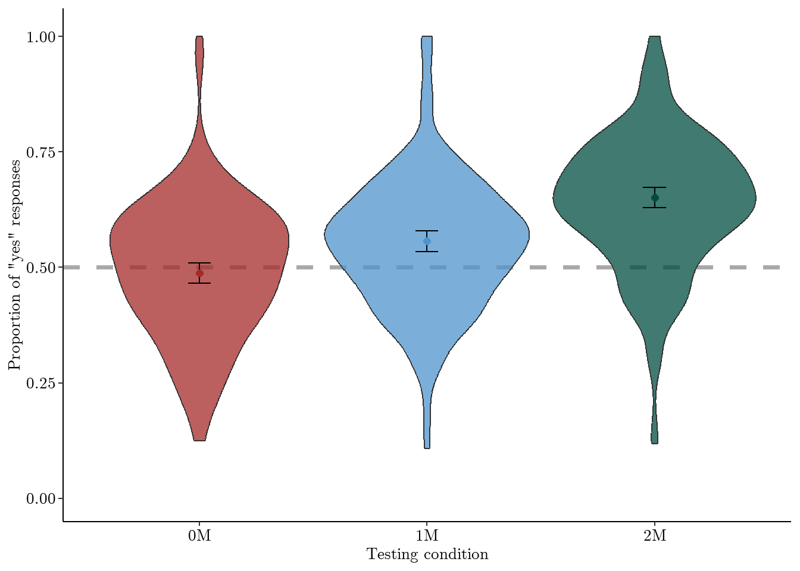
ggplot(data_testing_conditions_BLP, aes(x=condition,y=score,fill=Gender,group=interaction(condition,Gender))) +
scale_fill_manual(values=c(cols2[400],cols2[310],cols2[200])) +
geom_hline(yintercept=0.5, linetype="dashed",
color = "darkgray",lwd=1.25) +
geom_boxplot(alpha = 0.75, width=0.75) +
geom_point(position = position_dodge(width=0.75),size=2) +
labs(x = "Condition", y = 'Proportion of "yes" responses') +
theme(panel.grid.major = element_blank(), panel.grid.minor = element_blank(),
panel.background = element_blank(), axis.line = element_line(colour = "black"),
axis.text = element_text(family = "CMU Serif", size = 20, color = "black"),
text=element_text(family="CMU Serif",size=20),
legend.position=c(0.9,0.1),legend.background=element_rect(fill=NA)) +
ylim(0,1.05) +
coord_cartesian(expand = FALSE) +
scale_x_discrete(labels=c("0M", "1M", "2M"));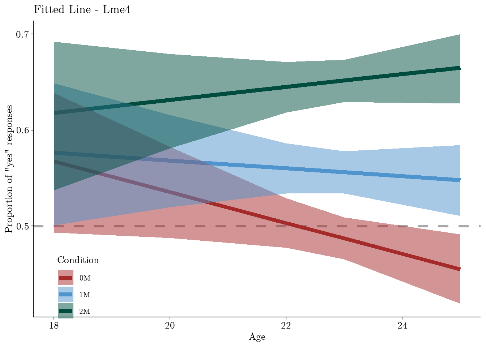
# too few Gender = Other datapoints to be meaningfuleffect_Age <- as.data.frame(effect('testing_condition*scale(Age)',
lm_Age, confint=list(alpha=.95)),
xlevels = list(Age = 18:25,
testing_condition=c('0M','1M','2M')));Warning in Analyze.model(focal.predictors, mod, xlevels, default.levels, : the
predictors scale(trialn), scale(Age) are one-column matrices that were
converted to vectorsggplot(effect_Age, aes(x=Age,y=fit)) +
geom_hline(yintercept=0.5, linetype="dashed",
color = "darkgray",lwd=1.25) +
geom_line(aes(color = testing_condition), lwd = 2) +
geom_ribbon(aes(ymin = lower, ymax = upper, fill = testing_condition), alpha = .5) +
scale_color_manual(values=c(cols2[100],cols2[200],"#004D40FF"),
name="Condition",labels=c("0M","1M","2M")) +
scale_fill_manual(values=c(cols2[100],cols2[200],"#004D40FF"),
name="Condition",labels=c("0M","1M","2M")) +
labs(x = "Age", y = 'Proportion of "yes" responses', title = 'Fitted Line - Lme4') +
theme(panel.grid.major = element_blank(), panel.grid.minor = element_blank(),
panel.background = element_blank(), axis.line = element_line(colour = "black"),
axis.text = element_text(family = "CMU Serif", size = 20, color = "black"),
text=element_text(family="CMU Serif",size=20),
legend.position=c(0.1,0.1),legend.background=element_rect(fill=NA));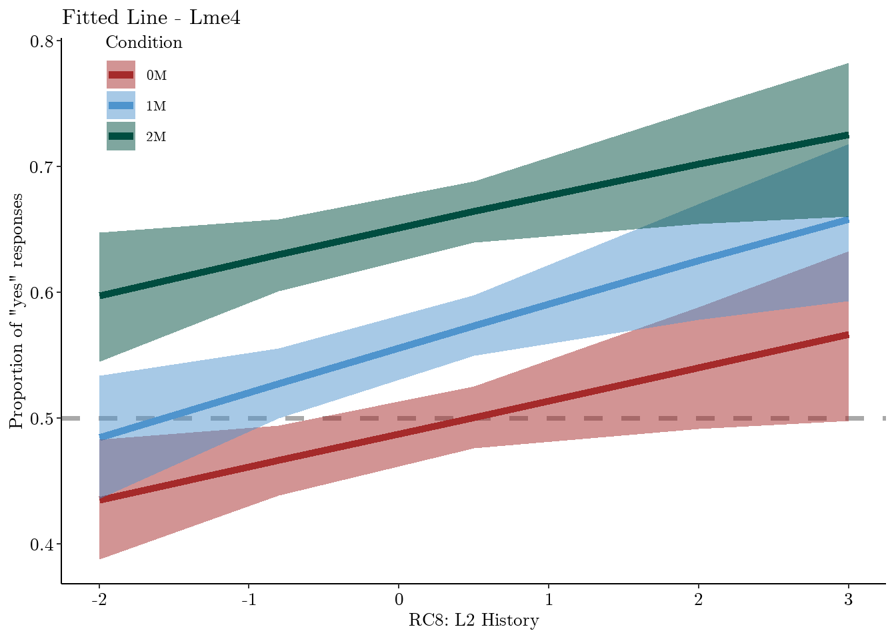
# Older -> bigger morph familiarity effecteffect_RC8 <- as.data.frame(effect('testing_condition*RC8_hist_L2',
lm_RC8, confint=list(alpha=.95)),
xlevels = list(RC8_hist_L2 = -2.1:3.1,
testing_condition=c('0M','1M','2M')));Warning in Analyze.model(focal.predictors, mod, xlevels, default.levels, : the
predictor scale(trialn) is a one-column matrix that was converted to a vectorggplot(effect_RC8, aes(x=RC8_hist_L2,y=fit)) +
geom_hline(yintercept=0.5, linetype="dashed",
color = "darkgray",lwd=1.25) +
geom_line(aes(color = testing_condition), lwd = 2) +
geom_ribbon(aes(ymin = lower, ymax = upper, fill = testing_condition), alpha = .5) +
scale_color_manual(values=c(cols2[100],cols2[200],"#004D40FF"),
name="Condition",labels=c("0M","1M","2M")) +
scale_fill_manual(values=c(cols2[100],cols2[200],"#004D40FF"),
name="Condition",labels=c("0M","1M","2M")) +
labs(x = "RC8: L2 History", y = 'Proportion of "yes" responses', title = 'Fitted Line - Lme4') +
theme(panel.grid.major = element_blank(), panel.grid.minor = element_blank(),
panel.background = element_blank(), axis.line = element_line(colour = "black"),
axis.text = element_text(family = "CMU Serif", size = 20, color = "black"),
text=element_text(family="CMU Serif",size=20),
legend.position=c(0.1,0.9),legend.background=element_rect(fill=NA));
# Earlier bilingual = more "yes" responses overalleffect_RC3 <- as.data.frame(effect('testing_condition*RC3_prof_L2',
lm_RC3, confint=list(alpha=.95)),
xlevels = list(RC3_prof_L2 = -4.1:1.6,
testing_condition=c('0M','1M','2M')));Warning in Analyze.model(focal.predictors, mod, xlevels, default.levels, : the
predictor scale(trialn) is a one-column matrix that was converted to a vectorggplot(effect_RC3, aes(x=RC3_prof_L2,y=fit)) +
geom_hline(yintercept=0.5, linetype="dashed",
color = "darkgray",lwd=1.25) +
geom_line(aes(color = testing_condition), lwd = 2) +
geom_ribbon(aes(ymin = lower, ymax = upper, fill = testing_condition), alpha = .5) +
scale_color_manual(values=c(cols2[100],cols2[200],"#004D40FF"),
name="Condition",labels=c("0M","1M","2M")) +
scale_fill_manual(values=c(cols2[100],cols2[200],"#004D40FF"),
name="Condition",labels=c("0M","1M","2M")) +
labs(x = "RC3: L2 Proficiency", y = 'Proportion of "yes" responses', title = 'Fitted Line - Lme4') +
theme(panel.grid.major = element_blank(), panel.grid.minor = element_blank(),
panel.background = element_blank(), axis.line = element_line(colour = "black"),
axis.text = element_text(family = "CMU Serif", size = 20, color = "black"),
text=element_text(family="CMU Serif",size=20),
legend.position=c(0.1,0.9),legend.background=element_rect(fill=NA)); 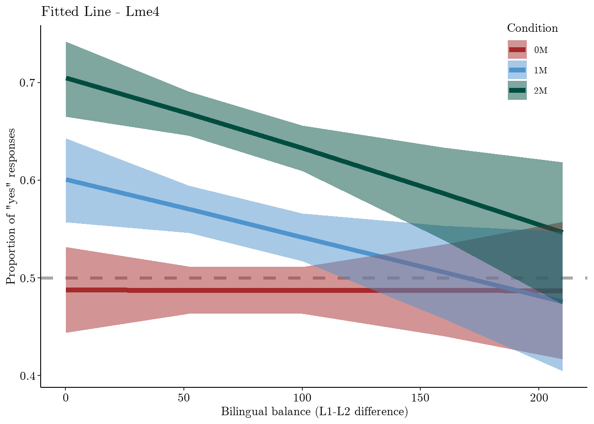
# More proficient L2 = stronger morpheme familiarity effecteffect_L1L2diff <- as.data.frame(effect('testing_condition*scale(L1_L2_diff)',
lm_L1L2diff, confint=list(alpha=.95)),
xlevels = list(L1_L2_diff = 0:210,
testing_condition=c('0M','1M','2M')));Warning in Analyze.model(focal.predictors, mod, xlevels, default.levels, : the
predictor scale(L1_L2_diff) is a one-column matrix that was converted to a
vectorggplot(effect_L1L2diff, aes(x = L1_L2_diff, y = fit)) +
geom_hline(yintercept=0.5, linetype="dashed",
color = "darkgray",lwd=1.25) +
geom_line(aes(color = testing_condition), lwd = 2) +
geom_ribbon(aes(ymin = lower, ymax = upper, fill = testing_condition), alpha = .5) +
scale_color_manual(values=c(cols2[100],cols2[200],"#004D40FF"),
name="Condition",labels=c("0M","1M","2M")) +
scale_fill_manual(values=c(cols2[100],cols2[200],"#004D40FF"),
name="Condition",labels=c("0M","1M","2M")) +
theme(panel.grid.major = element_blank(), panel.grid.minor = element_blank(),
panel.background = element_blank(), axis.line = element_line(colour = "black"),
axis.text = element_text(family = "CMU Serif", size = 20, color = "black"),
text=element_text(family="CMU Serif",size=20),
legend.position=c(0.9,0.9),legend.background=element_rect(fill=NA)) +
labs(x = 'Bilingual balance (L1-L2 difference)', y = 'Proportion of "yes" responses', title = 'Fitted Line - Lme4');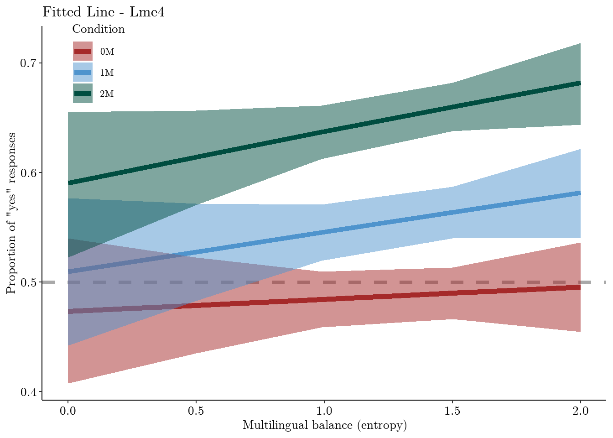
# More bilingual balance = stronger morph familiarity effecteffect_ent <- as.data.frame(effect('testing_condition*ent',
lm_ent, confint=list(alpha=.95)),
xlevels = list(ent = 0:2,
testing_condition=c('0M','1M','2M')));
ggplot(effect_ent, aes(x = ent, y = fit)) +
geom_hline(yintercept=0.5, linetype="dashed",
color = "darkgray",lwd=1.25) +
geom_line(aes(color = testing_condition), lwd = 2) +
geom_ribbon(aes(ymin = lower, ymax = upper, fill = testing_condition), alpha = .5) +
scale_color_manual(values=c(cols2[100],cols2[200],"#004D40FF"),
name="Condition",labels=c("0M","1M","2M")) +
scale_fill_manual(values=c(cols2[100],cols2[200],"#004D40FF"),
name="Condition",labels=c("0M","1M","2M")) +
theme(panel.grid.major = element_blank(), panel.grid.minor = element_blank(),
panel.background = element_blank(), axis.line = element_line(colour = "black"),
axis.text = element_text(family = "CMU Serif", size = 20, color = "black"),
text=element_text(family="CMU Serif",size=20),
legend.position=c(0.1,0.9),legend.background=element_rect(fill=NA)) +
labs(x = 'Multilingual balance (entropy)', y = 'Proportion of "yes" responses', title = 'Fitted Line - Lme4');
# More multilingual balance = stronger morph familiarity effect?BLP_2Mscores <- data_BLP_testing[!duplicated(data_BLP_testing$sbj_ID), ];
data_testing_2M_aggr <- data_testing_2M_aggr[data_testing_2M_aggr$response=="meanYes",];ggplot(data_testing_2M_aggr, aes(x=expected, y=meanValue, fill=expected)) +
geom_hline(yintercept=0.5, linetype="dashed", color="darkgrey",lwd=1.25) +
geom_violin(alpha=0.75,width=1) +
geom_errorbar(aes(x=1,ymin=effect_2M$lower[[1]],ymax=effect_2M$upper[[1]]),
width=.1) + # false alarm
annotate("point",x=1,y=effect_2M$fit[[1]],colour="darkred",size=2) + # false alarm
geom_errorbar(aes(x=2,ymin=effect_2M$lower[[2]],ymax=effect_2M$upper[[2]]),
width=.1) + # hit
annotate("point",x=2,y=effect_2M$fit[[2]],colour="lightblue",size=2) + # hit
scale_fill_manual(values=c(cols2[100],cols2[200])) +
scale_x_discrete(labels=c('Between-language', 'Within-language')) +
labs(x = "String nature", y = 'Proportion of "yes" responses') +
theme(panel.grid.major = element_blank(), panel.grid.minor = element_blank(),
panel.background = element_blank(), axis.line = element_line(colour = "black"),
axis.text = element_text(family = "CMU Serif", size = 20, color = "black"),
text=element_text(family="CMU Serif",size=20),
legend.position="none",legend.background=element_rect(fill=NA));
ggplot(data_BLP_testing, aes(x=RC8_hist_L2,y=yes_2M)) +
geom_hline(yintercept=50,linetype="dashed",color="darkgrey") +
geom_point(size=2) +
geom_smooth(method="lm",formula=y~x,color="red") +
labs(x = "PC8: L2 History", y = 'Percent of 2M "yes" responses') +
ylim(0,101) +
xlim(min(data_BLP_testing$RC8_hist_L2)-0.1,max(data_BLP_testing$RC8_hist_L2)+0.1) +
coord_cartesian(expand = FALSE) +
theme(panel.grid.major = element_blank(), panel.grid.minor = element_blank(),
panel.background = element_blank(), axis.line = element_line(colour = "black"),
axis.text = element_text(family = "CMU Serif", size = 20, color = "black"),
text=element_text(family="CMU Serif",size=20),
legend.position="inside",legend.position.inside = c(0.85,0.09),
legend.background=element_rect(fill=NA));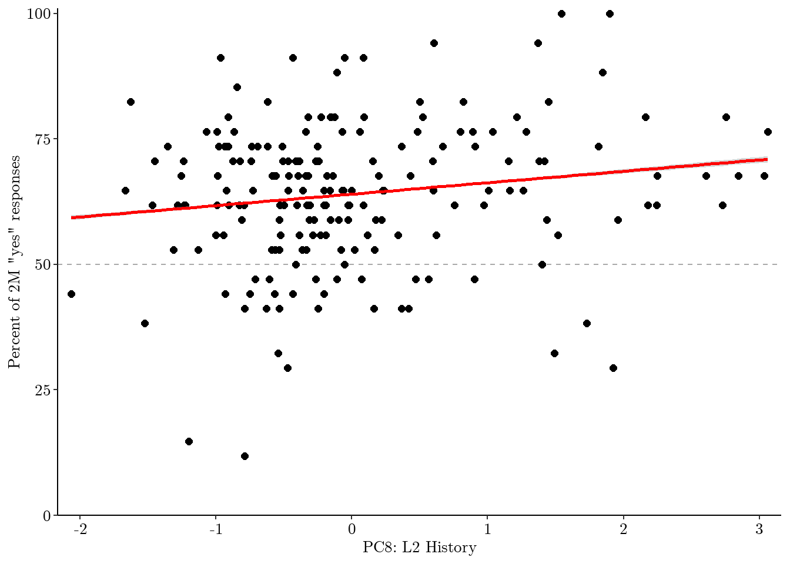
ggplot(data_BLP_testing, aes(x=RC3_prof_L2,y=yes_2M)) +
geom_hline(yintercept=50,linetype="dashed",color="darkgrey") +
geom_point(size=2) +
geom_smooth(method="lm",formula=y~x,color="red") +
labs(x = "PC8: L2 History", y = 'Percent of 2M "yes" responses') +
ylim(0,101) +
xlim(min(data_BLP_testing$RC3_prof_L2)-0.1,max(data_BLP_testing$RC3_prof_L2)+0.1) +
coord_cartesian(expand = FALSE) +
theme(panel.grid.major = element_blank(), panel.grid.minor = element_blank(),
panel.background = element_blank(), axis.line = element_line(colour = "black"),
axis.text = element_text(family = "CMU Serif", size =20, color = "black"),
text=element_text(family="CMU Serif",size=20),
legend.position="inside",legend.position.inside = c(0.85,0.09),
legend.background=element_rect(fill=NA));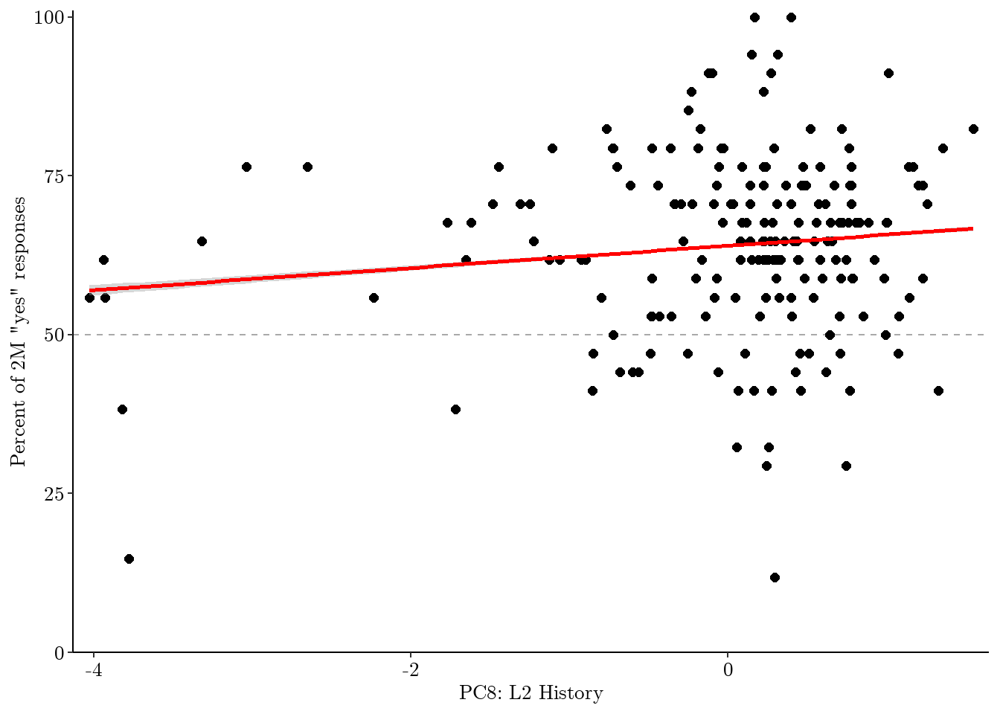
ggplot(data_BLP_testing, aes(x=RC3_prof_L2,y=score_2M)) +
geom_hline(yintercept=0.5,linetype="dashed",color="darkgrey") +
geom_point(size=2) +
geom_smooth(method="lm",formula=y~x,color="red") +
labs(x = "PC8: L2 History", y = '2M accuracy') +
ylim(min(data_BLP_testing$score_2M)-0.05,max(data_BLP_testing$score_2M)+0.05) +
xlim(min(data_BLP_testing$RC3_prof_L2)-0.1,max(data_BLP_testing$RC3_prof_L2)+0.1) +
coord_cartesian(expand = FALSE) +
theme(panel.grid.major = element_blank(), panel.grid.minor = element_blank(),
panel.background = element_blank(), axis.line = element_line(colour = "black"),
axis.text = element_text(family = "CMU Serif", size = 20, color = "black"),
text=element_text(family="CMU Serif",size=20),
legend.position="inside",legend.position.inside = c(0.85,0.09),
legend.background=element_rect(fill=NA));
ggplot(data_BLP_testing, aes(x=L1_L2_diff,y=yes_2M)) +
geom_hline(yintercept=50,linetype="dashed",color="darkgrey") +
geom_point(size=2) +
geom_smooth(method="lm",formula=y~x,color="red") +
labs(x = "Bilingual balance (L1-L2 difference)", y = 'Percent of 2M "yes" responses') +
ylim(0,101) +
xlim(min(data_BLP_testing$L1_L2_diff)-2,max(data_BLP_testing$L1_L2_diff)+2) +
coord_cartesian(expand = FALSE) +
theme(panel.grid.major = element_blank(), panel.grid.minor = element_blank(),
panel.background = element_blank(), axis.line = element_line(colour = "black"),
axis.text = element_text(family = "CMU Serif", size = 20, color = "black"),
text=element_text(family="CMU Serif",size=20),
legend.position="inside",legend.position.inside = c(0.85,0.09),
legend.background=element_rect(fill=NA));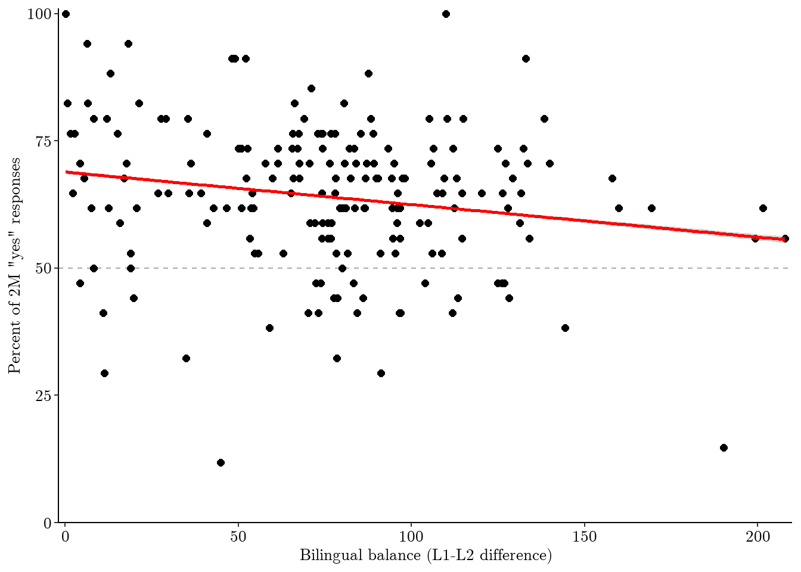
ggplot(data_BLP_testing, aes(x=script,y=score_2M)) +
geom_hline(yintercept=0.5,linetype="dashed",color="darkgrey") +
geom_boxplot(fill="darkgrey") +
labs(x = "Script", y = '2M accuracy') +
scale_x_discrete(labels=c('Same', 'Different')) +
ylim(0,1.1) +
theme(panel.grid.major = element_blank(), panel.grid.minor = element_blank(),
panel.background = element_blank(), axis.line = element_line(colour = "black"),
axis.text = element_text(family = "CMU Serif", size = 20, color = "black"),
text=element_text(family="CMU Serif",size=20),
legend.background=element_rect(fill=NA));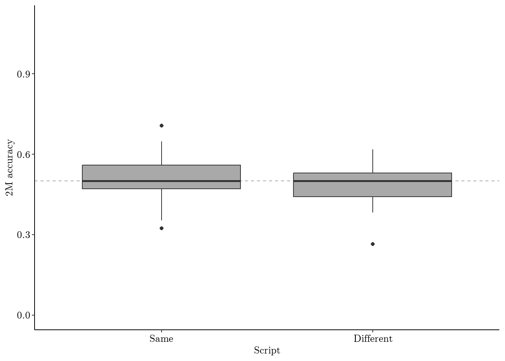
t.test(BLP_2Mscores$score_2M[BLP_2Mscores$script=='same'],mu=0.5);
One Sample t-test
data: BLP_2Mscores$score_2M[BLP_2Mscores$script == "same"]
t = -0.39211, df = 172, p-value = 0.6955
alternative hypothesis: true mean is not equal to 0.5
95 percent confidence interval:
0.4876901 0.5082297
sample estimates:
mean of x
0.4979599 t.test(BLP_2Mscores$score_2M[BLP_2Mscores$script=='diff/mixed'],mu=0.5);Error in t.test.default(BLP_2Mscores$score_2M[BLP_2Mscores$script == "diff/mixed"], : not enough 'x' observationsdata_testing_2M_script_aggr <- data_BLP_testing %>%
mutate(correct01 = case_when(correct == TRUE ~ 1,
correct == FALSE ~ 0),
yesno01 = case_when(observed == 'between_lang' ~ 0,
observed == 'within_lang' ~ 1)) %>%
filter(testing_condition == '2M') %>%
group_by(expected, sbj_ID, script) %>%
dplyr::summarise(meanCorrect = mean(correct01), se = sd(correct01/sqrt(n())),
meanYes = mean(yesno01), se = sd(yesno01/sqrt(n()))) %>%
mutate(meanNo = 1 - meanYes);`summarise()` has grouped output by 'expected', 'sbj_ID'. You can override
using the `.groups` argument.data_testing_2M_script_aggr <- data_testing_2M_script_aggr %>%
pivot_longer(
cols = c(meanYes, meanNo),
names_to = "response",
values_to = "meanValue"
);ggplot(data_testing_2M_script_aggr[data_testing_2M_script_aggr$response=="meanYes",], aes(x=expected, y=meanValue, fill=script)) +
geom_hline(yintercept=0.5, linetype="dashed", color="darkgrey",lwd=1.25) +
geom_violin(alpha=0.75,width=1) +
geom_boxplot(position=position_dodge(width=1),width=0.25) +
scale_fill_manual(name="Script",labels=c('Same','Different'),values=c(cols2[400],cols2[310])) +
scale_x_discrete(labels=c('Between-language', 'Within-language')) +
labs(x = "String nature", y = 'Proportion of "within-language" responses') +
theme(panel.grid.major = element_blank(), panel.grid.minor = element_blank(),
panel.background = element_blank(), axis.line = element_line(colour = "black"),
axis.text = element_text(family = "CMU Serif", size = 20, color = "black"),
text=element_text(family="CMU Serif",size=20),legend.position="inside",
legend.position.inside=c(0.1,0.1),legend.background=element_rect(fill=NA));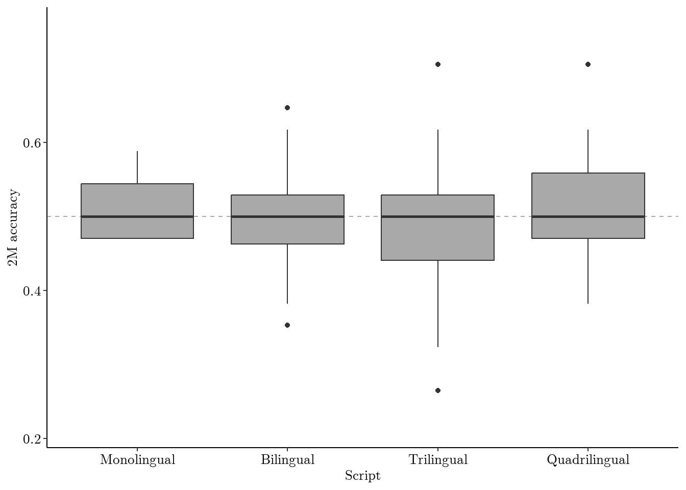
ggplot(data_BLP_testing, aes(x=category,y=score_2M)) +
geom_hline(yintercept=0.5,linetype="dashed",color="darkgrey") +
geom_boxplot(fill="darkgrey") +
labs(x = "Script", y = '2M accuracy') +
scale_x_discrete(labels=c('Monolingual','Bilingual','Trilingual','Quadrilingual')) +
ylim(min(data_BLP_testing$score_2M)-0.05,max(data_BLP_testing$score_2M)+0.05) +
theme(panel.grid.major = element_blank(), panel.grid.minor = element_blank(),
panel.background = element_blank(), axis.line = element_line(colour = "black"),
axis.text = element_text(family = "CMU Serif", size = 20, color = "black"),
text=element_text(family="CMU Serif",size=20),
legend.background=element_rect(fill=NA));
t.test(BLP_2Mscores$score_2M[BLP_2Mscores$category=='mono'],mu=0.5);
One Sample t-test
data: BLP_2Mscores$score_2M[BLP_2Mscores$category == "mono"]
t = 0.52223, df = 3, p-value = 0.6376
alternative hypothesis: true mean is not equal to 0.5
95 percent confidence interval:
0.4250894 0.6043224
sample estimates:
mean of x
0.5147059 t.test(BLP_2Mscores$score_2M[BLP_2Mscores$category=='bi'],mu=0.5);
One Sample t-test
data: BLP_2Mscores$score_2M[BLP_2Mscores$category == "bi"]
t = -0.46878, df = 79, p-value = 0.6405
alternative hypothesis: true mean is not equal to 0.5
95 percent confidence interval:
0.4826418 0.5107406
sample estimates:
mean of x
0.4966912 t.test(BLP_2Mscores$score_2M[BLP_2Mscores$category=='tri'],mu=0.5);
One Sample t-test
data: BLP_2Mscores$score_2M[BLP_2Mscores$category == "tri"]
t = -1.0586, df = 57, p-value = 0.2942
alternative hypothesis: true mean is not equal to 0.5
95 percent confidence interval:
0.4662751 0.5103983
sample estimates:
mean of x
0.4883367 t.test(BLP_2Mscores$score_2M[BLP_2Mscores$category=='quadri'],mu=0.5);
One Sample t-test
data: BLP_2Mscores$score_2M[BLP_2Mscores$category == "quadri"]
t = 0.58329, df = 50, p-value = 0.5623
alternative hypothesis: true mean is not equal to 0.5
95 percent confidence interval:
0.4873173 0.5230633
sample estimates:
mean of x
0.5051903 t.test(BLP_2Mscores$dprime[BLP_2Mscores$category=='mono'],mu=0);
One Sample t-test
data: BLP_2Mscores$dprime[BLP_2Mscores$category == "mono"]
t = 0.71376, df = 3, p-value = 0.5269
alternative hypothesis: true mean is not equal to 0
95 percent confidence interval:
-0.4945968 0.7805968
sample estimates:
mean of x
0.143 t.test(BLP_2Mscores$dprime[BLP_2Mscores$category=='bi'],mu=0);
One Sample t-test
data: BLP_2Mscores$dprime[BLP_2Mscores$category == "bi"]
t = -0.5716, df = 79, p-value = 0.5692
alternative hypothesis: true mean is not equal to 0
95 percent confidence interval:
-0.10219504 0.05659504
sample estimates:
mean of x
-0.0228 t.test(BLP_2Mscores$dprime[BLP_2Mscores$category=='tri'],mu=0);
One Sample t-test
data: BLP_2Mscores$dprime[BLP_2Mscores$category == "tri"]
t = -1.1158, df = 57, p-value = 0.2692
alternative hypothesis: true mean is not equal to 0
95 percent confidence interval:
-0.18343564 0.05215978
sample estimates:
mean of x
-0.06563793 t.test(BLP_2Mscores$dprime[BLP_2Mscores$category=='quadri'],mu=0);
One Sample t-test
data: BLP_2Mscores$dprime[BLP_2Mscores$category == "quadri"]
t = 0.37697, df = 50, p-value = 0.7078
alternative hypothesis: true mean is not equal to 0
95 percent confidence interval:
-0.08257573 0.12073260
sample estimates:
mean of x
0.01907843 data_testing_2M_category_aggr <- data_BLP_testing %>%
mutate(correct01 = case_when(correct == TRUE ~ 1,
correct == FALSE ~ 0),
yesno01 = case_when(observed == 'between_lang' ~ 0,
observed == 'within_lang' ~ 1)) %>%
filter(testing_condition == '2M') %>%
group_by(expected, sbj_ID, category) %>%
dplyr::summarise(meanCorrect = mean(correct01), se = sd(correct01/sqrt(n())),
meanYes = mean(yesno01), se = sd(yesno01/sqrt(n()))) %>%
mutate(meanNo = 1 - meanYes);`summarise()` has grouped output by 'expected', 'sbj_ID'. You can override
using the `.groups` argument.ggplot(data_testing_2M_category_aggr, aes(x=expected, y=meanCorrect, fill=expected)) +
geom_hline(yintercept=0.5, linetype="dashed", color="darkgrey",lwd=1.25) +
geom_violin(alpha=0.75,width=1) +
geom_errorbar(aes(x=1,ymin=effect_2M$lower[[1]],ymax=effect_2M$upper[[1]]),
width=.1) + # false alarm
annotate("point",x=1,y=effect_2M$fit[[1]],colour="darkred",size=2) + # false alarm
geom_errorbar(aes(x=2,ymin=effect_2M$lower[[2]],ymax=effect_2M$upper[[2]]),
width=.1) + # hit
annotate("point",x=2,y=effect_2M$fit[[2]],colour="lightblue",size=2) + # hit
scale_fill_manual(values=c(cols2[100],cols2[200])) +
scale_x_discrete(labels=c('Between-language', 'Within-language')) +
labs(x = "String nature", y = 'Proportion of "yes" responses') +
theme(panel.grid.major = element_blank(), panel.grid.minor = element_blank(),
panel.background = element_blank(), axis.line = element_line(colour = "black"),
axis.text = element_text(family = "CMU Serif", size = 20, color = "black"),
text=element_text(family="CMU Serif",size=20),
legend.position="none",legend.background=element_rect(fill=NA))+
facet_wrap(~category);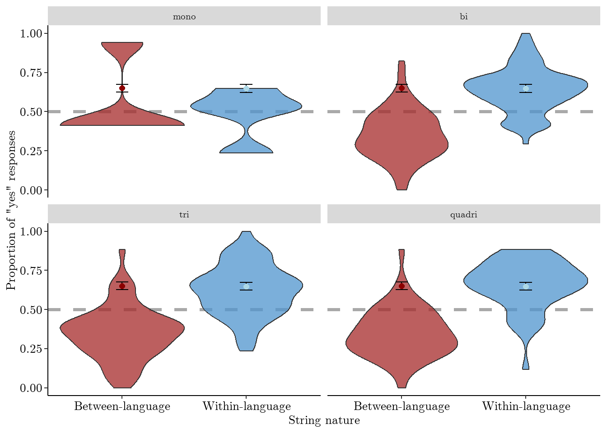
data_BLP_familiarity <- merge(data_BLP_familiarity,data_familiarity_means,by="sbj_ID");ggplot(data_BLP_familiarity, aes(x=Gender,y=fam_mean)) +
geom_hline(yintercept=0.5,linetype="dashed",color="darkgrey") +
geom_boxplot(fill="darkgrey") +
labs(x = "Gender", y = 'Familiarity accuracy') +
scale_x_discrete(labels=c('Men', 'Other','Women')) +
ylim(min(data_BLP_familiarity$familiarity_mean)-0.05,max(data_BLP_familiarity$familiarity_mean)+0.05) +
theme(panel.grid.major = element_blank(), panel.grid.minor = element_blank(),
panel.background = element_blank(), axis.line = element_line(colour = "black"),
axis.text = element_text(family = "CMU Serif", size = 20, color = "black"),
text=element_text(family="CMU Serif",size=20),
legend.background=element_rect(fill=NA));Warning in min(data_BLP_familiarity$familiarity_mean): no non-missing arguments
to min; returning InfWarning in max(data_BLP_familiarity$familiarity_mean): no non-missing arguments
to max; returning -Inf
Error in `geom_boxplot()`:
! Problem while computing aesthetics.
ℹ Error occurred in the 2nd layer.
Caused by error:
! object 'fam_mean' not foundBLP_fam <- data_BLP_familiarity[!duplicated(data_BLP_familiarity$sbj_ID), ];ggplot(data_BLP_familiarity, aes(x=Age,y=familiarity_mean)) +
geom_hline(yintercept=0.50,linetype="dashed",color="darkgrey") +
geom_point(size=2) +
geom_smooth(method="lm",formula=y~x,color="red") +
labs(x = "Age", y = 'Familiarity accuracy') +
ylim(0,1) +
xlim(min(data_BLP_familiarity$Age)-0.1,max(data_BLP_familiarity$Age)+0.1) +
coord_cartesian(expand = FALSE) +
theme(panel.grid.major = element_blank(), panel.grid.minor = element_blank(),
panel.background = element_blank(), axis.line = element_line(colour = "black"),
axis.text = element_text(family = "CMU Serif", size = 20, color = "black"),
text=element_text(family="CMU Serif",size=20),
legend.background=element_rect(fill=NA));
Error in `geom_point()`:
! Problem while computing aesthetics.
ℹ Error occurred in the 2nd layer.
Caused by error:
! object 'familiarity_mean' not foundggplot(data_BLP_familiarity, aes(x=RC3_prof_L2,y=familiarity_mean)) +
geom_hline(yintercept=0.50,linetype="dashed",color="darkgrey") +
geom_point(size=2) +
geom_smooth(method="lm",formula=y~x,color="red") +
labs(x = "PC3 (L2 Proficiency)", y = 'Familiarity accuracy') +
ylim(0,1) +
xlim(min(data_BLP_familiarity$RC3_prof_L2)-0.1,max(data_BLP_familiarity$RC3_prof_L2)+0.1) +
coord_cartesian(expand = FALSE) +
theme(panel.grid.major = element_blank(), panel.grid.minor = element_blank(),
panel.background = element_blank(), axis.line = element_line(colour = "black"),
axis.text = element_text(family = "CMU Serif", size = 20, color = "black"),
text=element_text(family="CMU Serif",size=20),
legend.background=element_rect(fill=NA));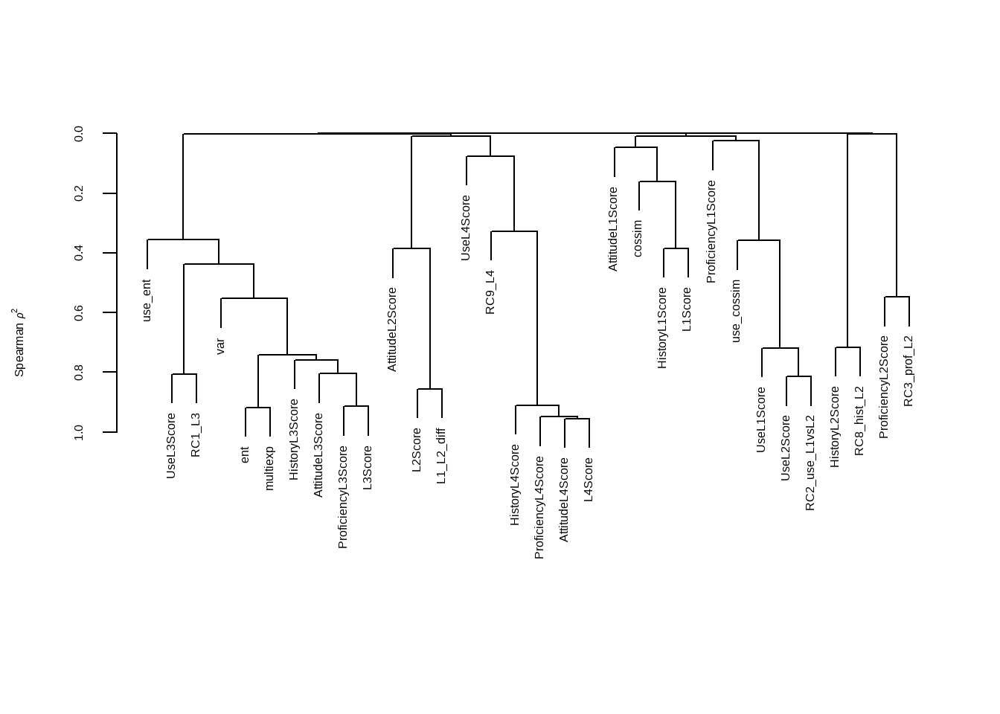
Error in `geom_point()`:
! Problem while computing aesthetics.
ℹ Error occurred in the 2nd layer.
Caused by error:
! object 'familiarity_mean' not founddata_BLP_short <- subset(data_BLP, select=c(HistoryL1Score,HistoryL2Score,HistoryL3Score,HistoryL4Score,
UseL1Score,UseL2Score,UseL3Score,UseL4Score,
ProficiencyL1Score,ProficiencyL2Score,ProficiencyL3Score,ProficiencyL4Score,
AttitudeL1Score,AttitudeL2Score,AttitudeL3Score,AttitudeL4Score,
L1Score,L2Score,L3Score,L4Score,
var,ent,use_ent,cossim,use_cossim,multiexp,L1_L2_diff,
RC1_L3,RC9_L4,RC2_use_L1vsL2,RC8_hist_L2,RC3_prof_L2));
plot(varclus(as.matrix(data_BLP_short)))